Capítulo 10Relações entre Variáveis
Esboço do capítulo
- Seção 1 Variáveis Relacionadas
- Seção 2 Resposta e Preditores Categóricos
- Seção 3 Resposta e Preditores Quantitativos
- Seção 4 Resposta Quantitativa e Preditores Categóricos
- Seção 5 Resposta Categórica e Preditores Quantitativos
- Seção 6 Demonstrações Adicionais (Avançado)
Neste capítulo, tratamos daquela que talvez seja a aplicação mais importante da inferência estatística: o problema de analisar se existe ou não uma relação entre variáveis e que forma essa relação assume. Como exemplo particular disso, lembre o exemplo e a discussão da Seção 5.1.
Muitos dos problemas mais importantes da ciência e da sociedade dizem respeito a relações entre variáveis. Por exemplo, qual é a relação entre a quantidade de dióxido de carbono lançada na atmosfera e as temperaturas globais? Qual é a relação entre o tamanho da turma e o desempenho escolar dos alunos? Qual é a relação entre o peso e a ingestão de carboidratos em seres humanos? Qual é a relação entre o tempo de vida1 e a dosagem de certo medicamento em pacientes com câncer? Todos esses são exemplos de perguntas cujas respostas envolvem relações entre variáveis. Veremos que a estatística tem um papel fundamental na resposta a perguntas como essas.
Na Seção 10.1, damos uma definição precisa do que significa dizer que variáveis estão relacionadas e distinguimos duas grandes categorias de relação, a saber, a associação e a relação de causa e efeito. Discutimos também algumas das ideias centrais envolvidas na coleta de dados quando queremos determinar se existe uma relação de causa e efeito. Nas seções restantes, examinamos as diversas metodologias estatísticas usadas para analisar dados quando estamos interessados em relações.
Neste capítulo, damos ênfase às metodologias frequentistas. Damos alguns exemplos da abordagem bayesiana, mas há certas complexidades nos problemas distribucionais associados aos métodos bayesianos que é melhor evitar nesta etapa. Já foram desenvolvidos algoritmos de amostragem para a abordagem bayesiana, nos moldes dos discutidos no Capítulo 7 (ver também o Capítulo 11), mas uma discussão completa deles nos levaria além do escopo deste texto. Vale notar, porém, que análises bayesianas com prioris difusas muitas vezes produzem resultados muito parecidos com os obtidos pela abordagem frequentista.
Como discutido no Capítulo 9, a verificação do modelo2 é uma parte importante de qualquer análise estatística. Para os modelos usados neste capítulo, uma discussão completa da abordagem mais rigorosa da verificação do modelo, baseada em valores-p, exige mais desenvolvimento do que podemos fazer neste texto. Por isso, damos ênfase à abordagem informal da verificação do modelo, por meio de gráficos de resíduos e de probabilidade. Isso não deve ser interpretado como uma recomendação de que esses sejam os métodos preferidos para tais modelos.
10.1 Variáveis Relacionadas
Considere uma população \(\Pi\) com duas variáveis \(X, Y : \Pi \to R^1\) definidas nela. O que significa dizer que as variáveis \(X\) e \(Y\) estão relacionadas? Talvez nossa primeira inclinação seja dizer que deve haver uma fórmula que relacione as duas variáveis, como \(Y = a + bX^2\) para alguma escolha das constantes \(a\) e \(b\), ou \(Y = \exp(X)\) etc. Mas considere uma população \(\Pi\) de seres humanos e suponha que \(X(\pi)\) seja o peso de \(\pi\) em quilogramas e \(Y(\pi)\) seja a altura do indivíduo \(\pi \in \Pi\) em centímetros. Por experiência, sabemos que pessoas mais altas tendem a ser mais pesadas, e por isso acreditamos que exista algum tipo de relação entre altura e peso. Sabemos também que não pode haver uma fórmula exata que descreva essa relação, porque pessoas com o mesmo peso muitas vezes têm alturas diferentes, e pessoas com a mesma altura muitas vezes têm pesos diferentes.
10.1.1 A Definição de Relação
Se pensarmos em todas as pessoas com um dado peso \(x\), haverá uma distribuição de alturas para todos os indivíduos \(\pi\) que têm peso \(x\). Chamamos essa distribuição de distribuição condicional3 de \(Y\), dado que \(X = x\).
Podemos agora exprimir o que queremos dizer com nossa ideia intuitiva de que \(X\) e \(Y\) estão relacionados, pois, à medida que mudamos o valor do peso em que condicionamos, esperamos que a distribuição condicional mude. Em particular, à medida que \(x\) aumenta, esperamos que a posição da distribuição condicional aumente, embora outras características da distribuição também possam mudar. Por exemplo, na Figura 10.1.1, apresentamos um gráfico possível de duas densidades aproximadas para as distribuições condicionais de \(Y\) dado \(X = 70\) kg e a distribuição condicional de \(Y\) dado \(X = 90\) kg.
Vemos que a distribuição condicional se deslocou para cima quando \(X\) passa de 70 para 90 kg, mas também que a forma da distribuição mudou um pouco. Assim, podemos dizer que existe com certeza uma relação entre \(X\) e \(Y\), ao menos nessa população. Observe que, da forma como foram definidas até aqui, \(X\) e \(Y\) não são variáveis aleatórias, mas passam a ser quando selecionamos \(\pi\) aleatoriamente da população. Nesse caso, as distribuições condicionais mencionadas passam a ser as distribuições de probabilidade condicionais da variável aleatória4 \(Y\), dado que observamos \(X = 70\) e \(X = 90\), respectivamente.
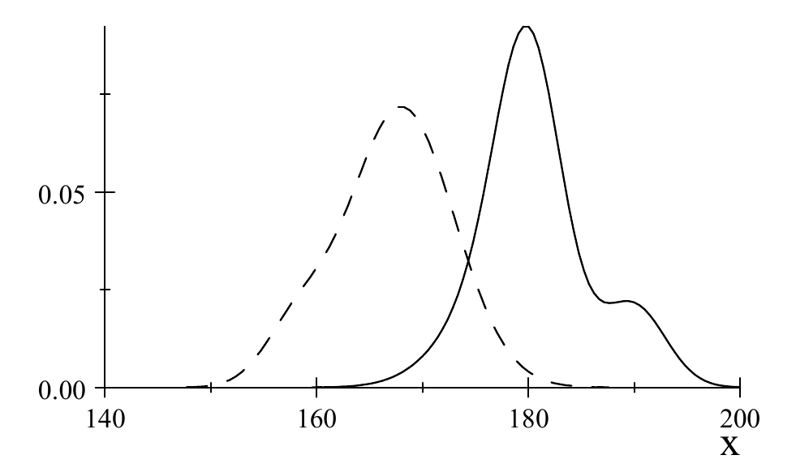
Adotaremos a definição a seguir para especificar com precisão o que queremos dizer quando afirmamos que variáveis estão relacionadas.
As variáveis \(X\) e \(Y\) são variáveis relacionadas se há alguma mudança na distribuição condicional de \(Y\), dado \(X = x\), à medida que \(x\) muda.
Poderíamos, em vez disso, definir o que significa variáveis serem não relacionadas. Dizemos que as variáveis \(X\) e \(Y\) são não relacionadas se forem independentes. Isso é equivalente à Definição 10.1.1, porque duas variáveis são independentes se e somente se a distribuição condicional de uma, dada a outra, não depende da condição (Exercício 10.1.1).
Há uma assimetria5 aparente na Definição 10.1.1, porque a definição considera apenas a distribuição condicional de \(Y\) dado \(X\), e não a distribuição condicional de \(X\) dado \(Y\). Mas, se há uma mudança na distribuição condicional de \(Y\) dado \(X = x\) quando mudamos \(x\), então, pelo comentário acima, \(X\) e \(Y\) não são independentes; portanto, deve haver uma mudança na distribuição condicional de \(X\) dado \(Y = y\) quando mudamos \(y\) (ver também o Problema 10.1.23).
Observe que a definição se aplica qualquer que seja o tipo de variável com que estamos lidando. Assim, ambas podem ser variáveis quantitativas, ou ambas variáveis categóricas, ou uma pode ser uma variável quantitativa e a outra uma variável categórica.
A Definição 10.1.1 diz que \(X\) e \(Y\) estão relacionadas se qualquer mudança for observada na distribuição condicional. Na realidade, isso significaria que praticamente sempre existe uma relação entre as variáveis \(X\) e \(Y\). Parece provável que sempre detectaremos alguma diferença se fizermos um censo e calcularmos todas as distribuições condicionais relevantes. É aqui que a ideia da força de uma relação entre variáveis se torna relevante, pois, se virmos grandes mudanças nas distribuições condicionais, podemos dizer que existe uma relação forte. Se virmos apenas mudanças muito pequenas, podemos dizer que existe uma relação muito fraca, talvez sem importância prática.
O Papel dos Modelos Estatísticos
Se existe uma relação entre duas variáveis, então sua forma é completamente descrita pelo conjunto das distribuições condicionais de \(Y\) dado \(X\). Às vezes, pode ser necessário descrever a relação usando todas essas distribuições condicionais. Em muitos problemas, porém, procuramos uma apresentação mais simples. De fato, muitas vezes supomos um modelo estatístico que prescreve uma forma simples para o modo como as distribuições condicionais mudam quando mudamos \(X\).
Considere o exemplo a seguir.
Na Seção 10.3.2, discutiremos o modelo de regressão linear normal simples, em que se supõe que a distribuição condicional da variável quantitativa \(Y\), dada a variável quantitativa \(X = x\), seja a distribuição \[ N(\beta_1 + \beta_2 x, \sigma^2), \] em que \(\beta_1\), \(\beta_2\) e \(\sigma^2\) são desconhecidos. Por exemplo, \(Y\) poderia ser a pressão arterial de um indivíduo e \(X\) a quantidade de sal que a pessoa consome por dia.
Nesse caso, as distribuições condicionais têm forma constante e mudam, à medida que \(x\) muda, apenas por meio da média condicional. A média se move ao longo da reta dada por \(\beta_1 + \beta_2 x\) para algum intercepto \(\beta_1\) e alguma inclinação \(\beta_2\). Se esse modelo estiver correto, então as variáveis são não relacionadas se e somente se \(\beta_2 = 0\), pois essa é a única situação em que as distribuições condicionais podem permanecer constantes quando mudamos \(x\).
Modelos estatísticos como o descrito no Exemplo 10.1.1 podem estar errados. Nada exige que duas variáveis quantitativas tenham de estar relacionadas dessa maneira. Por exemplo, a variância condicional6 de \(Y\) pode variar com \(x\), e a própria forma da distribuição condicional também pode variar com \(x\). O modelo do Exemplo 10.1.1 é um caso de hipótese simplificadora que é adequada em muitos contextos práticos. Contudo, métodos como os discutidos no Capítulo 9 precisam ser empregados para verificar as hipóteses do modelo antes de aceitar inferências estatísticas baseadas nesse modelo. Sempre consideraremos a verificação do modelo como parte de nossa discussão dos diversos modelos usados para examinar a relação entre variáveis.
Variáveis Resposta e Preditoras
Muitas vezes, pensamos em \(Y\) como uma variável dependente (que depende de \(X\)) e em \(X\) como uma variável independente (livre para variar). Nosso objetivo, então, é predizer o valor de \(Y\) dado o valor de \(X\). Nessa situação, chamamos \(Y\) de variável resposta7 e \(X\) de variável preditora8.
Às vezes, porém, não há realmente nada que distinga os papéis de \(X\) e \(Y\). Por exemplo, suponha que \(X\) seja o peso de um indivíduo em quilogramas e \(Y\) seja a altura em centímetros. Poderíamos então pensar em predizer o peso a partir da altura ou o contrário. É indiferente, então, qual delas escolhemos para condicionar.
Em muitas aplicações, há mais de uma variável resposta e mais de uma variável preditora \(X\). Não consideraremos a situação em que temos mais de uma variável resposta, mas consideraremos o caso em que \(X = (X_1, \ldots, X_k)\) é \(k\)-dimensional. Aqui, os vários preditores que compõem \(X\) podem ser todos categóricos, todos quantitativos ou alguma mistura de variáveis categóricas e quantitativas.
A definição de existência de uma relação entre a variável resposta \(Y\) e o conjunto de preditores \((X_1, \ldots, X_k)\) é exatamente como na Definição 10.1.1. Em particular, existe uma relação entre \(Y\) e \((X_1, \ldots, X_k)\) se há alguma mudança na distribuição condicional de \(Y\) dado \((X_1, \ldots, X_k) = (x_1, \ldots, x_k)\) quando \((x_1, \ldots, x_k)\) varia. Se essa relação existe, então a forma da relação é especificada pelo conjunto completo das distribuições condicionais. Novamente, muitas vezes se usam modelos estatísticos em que se fazem hipóteses simplificadoras sobre a forma da relação. Considere o exemplo a seguir.
Na Seção 10.3.4, discutiremos o modelo de regressão linear múltipla9 normal. Nele, supõe-se que a distribuição condicional da variável quantitativa \(Y\), dado que os preditores quantitativos são \((X_1, \ldots, X_k) = (x_1, \ldots, x_k)\), seja a distribuição \[ N(\beta_1 + \beta_2 x_1 + \cdots + \beta_{k+1} x_k, \sigma^2), \] em que \(\beta_1, \ldots, \beta_{k+1}\) e \(\sigma^2\) são desconhecidos. Por exemplo, \(Y\) poderia ser a pressão arterial, \(X_1\) a quantidade diária de sal ingerida, \(X_2\) a idade do indivíduo, \(X_3\) o peso do indivíduo etc.
Nesse caso, as distribuições condicionais têm forma constante e mudam, à medida que os valores dos preditores \((x_1, \ldots, x_k)\) mudam, apenas por meio da média condicional, que muda de acordo com a função \(\beta_1 + \beta_2 x_1\) \({}+ \cdots + \beta_{k+1} x_k\). Observe que, se esse modelo estiver correto, então as variáveis são não relacionadas se e somente se \(\beta_2 = \cdots = \beta_{k+1} = 0\), pois essa é a única situação em que as distribuições condicionais podem permanecer constantes quando mudamos \((x_1, \ldots, x_k)\).
Quando dividimos um conjunto de variáveis \(Y, X_1, \ldots, X_k\) em resposta \(Y\) e preditores \((X_1, \ldots, X_k)\), estamos dizendo implicitamente que nos interessam diretamente apenas as distribuições condicionais de \(Y\) dado \((X_1, \ldots, X_k)\). Pode haver relações entre os preditores \(X_1, \ldots, X_k\), porém, e elas podem ser de interesse.
Por exemplo, suponha que temos dois preditores \(X_1\) e \(X_2\), e que a distribuição condicional de \(X_1\) dado \(X_2\) seja praticamente degenerada num valor \(a + cX_2\) para certas constantes \(a\) e \(c\). Então não é uma boa ideia incluir \(X_1\) e \(X_2\) ao mesmo tempo num modelo como o discutido no Exemplo 10.1.2, pois isso pode tornar a análise muito sensível a pequenas mudanças nos dados. Esse é o chamado problema da multicolinearidade. O efeito da multicolinearidade, e como evitá-lo, não será mais discutido neste texto. Esse é, porém, um tema de considerável importância prática.
Modelos de Regressão
Suponha que a resposta \(Y\) seja quantitativa e que tenhamos \(k\) preditores \((X_1, \ldots, X_k)\). Uma das hipóteses simplificadoras mais importantes usadas na prática é a hipótese de regressão, isto é, supomos que, à medida que mudamos \((X_1, \ldots, X_k)\), a única coisa que pode mudar na distribuição condicional de \(Y\) dado \((X_1, \ldots, X_k)\) é a média condicional \(E(Y \mid X_1, \ldots, X_k)\). A importância dessa hipótese é que, para analisar a relação entre \(Y\) e \((X_1, \ldots, X_k)\), precisamos agora considerar apenas como \(E(Y \mid X_1, \ldots, X_k)\) muda quando \((X_1, \ldots, X_k)\) muda. De fato, se \(E(Y \mid X_1, \ldots, X_k)\) não muda quando \((X_1, \ldots, X_k)\) muda, então não há relação entre \(Y\) e os preditores. É claro que esse tipo de análise depende de a hipótese de regressão valer, e os métodos da Seção 9.1 precisam ser usados para verificar isso. Os modelos de regressão — isto é, modelos estatísticos em que fazemos a hipótese de regressão — estão entre os modelos estatísticos mais importantes usados na prática. As Seções 10.3 e 10.4 discutem vários casos de modelos de regressão.
Os modelos de regressão costumam ser apresentados na forma \begin{equation} Y = E(Y \mid X_1, \ldots, X_k) + Z, \tag{10.1.1} \end{equation} em que \(Z = Y - E(Y \mid X_1, \ldots, X_k)\) é chamado de termo de erro. Vemos imediatamente que, se a hipótese de regressão vale, então a distribuição condicional de \(Z\) dado \((X_1, \ldots, X_k)\) fica fixa quando mudamos \((X_1, \ldots, X_k)\) e, reciprocamente, se a distribuição condicional de \(Z\) dado \((X_1, \ldots, X_k)\) fica fixa quando mudamos \((X_1, \ldots, X_k)\), então a hipótese de regressão vale. Assim, quando a hipótese de regressão vale, (10.1.1) fornece uma decomposição de \(Y\) em duas partes: (1) uma parte que possivelmente depende de \((X_1, \ldots, X_k)\), a saber, \(E(Y \mid X_1, \ldots, X_k)\), e (2) uma parte que é sempre independente de \((X_1, \ldots, X_k)\), a saber, o erro \(Z\). Observe que os Exemplos 10.1.1 e 10.1.2 podem ser escritos na forma (10.1.1), com \(Z \sim N(0, \sigma^2)\).
10.1.2 Relações de Causa e Efeito e Experimentos
Suponha agora que temos as variáveis \(X\) e \(Y\) definidas numa população \(\Pi\) e que concluímos que existe uma relação de acordo com a Definição 10.1.1. Isso pode se basear na realização de um censo completo de \(\Pi\) ou, o que é mais comum, teremos tirado uma amostra aleatória simples de \(\Pi\) e usado os métodos das seções restantes deste capítulo para concluir que essa relação existe. Se \(Y\) faz o papel da resposta e \(X\) é o preditor10, então muitas vezes queremos poder afirmar que as mudanças em \(X\) estão causando as mudanças observadas nas distribuições condicionais de \(Y\). É claro que, se não há mudanças nas distribuições condicionais, então não há relação entre \(X\) e \(Y\) e, portanto, também não há relação de causa e efeito.
Por exemplo, suponha que a quantidade de gás dióxido de carbono liberada na atmosfera esteja aumentando e que observemos que as temperaturas globais médias estão subindo. Se temos razões para acreditar que a quantidade de dióxido de carbono liberada pode ter efeito sobre a temperatura, então talvez seja sensato acreditar que o aumento das emissões de dióxido de carbono está causando o aumento observado nas temperaturas globais médias. Como outro exemplo, há muitos anos se observa que os fumantes sofrem de doenças respiratórias com muito mais frequência do que os não fumantes. Parece razoável, então, concluir que fumar causa um aumento do risco de doença respiratória. Por outro lado, suponha que consideremos a relação entre peso e altura. Parece claro que existe uma relação, mas não faz nenhum sentido dizer que as mudanças numa das variáveis estão causando as mudanças nas distribuições condicionais da outra.
Variáveis de Confusão
Quando podemos dizer que uma relação observada entre \(X\) e \(Y\) é uma relação de causa e efeito? Se existe uma relação entre \(X\) e \(Y\), então sabemos que há pelo menos dois valores \(x_1\) e \(x_2\) tais que \(f_Y(\cdot \mid X = x_1) \ne f_Y(\cdot \mid X = x_2)\), isto é, essas duas distribuições condicionais não são iguais. Se quisermos dizer que essa diferença é causada pela mudança em \(X\), então precisamos saber categoricamente que não há nenhuma outra variável \(Z\) definida em \(\Pi\) que se confunda com \(X\). O exemplo a seguir ilustra a ideia de duas variáveis que se confundem.
Suponha que \(\Pi\) seja uma população de estudantes em que a maioria das mulheres tem um emprego de tempo parcial e a maioria dos homens não tem. Um pesquisador está interessado na distribuição das notas, medidas pela média geral das notas (GPA), e procura ver se há uma relação entre o GPA e o gênero. Com base nos dados coletados, o pesquisador observa uma diferença na distribuição condicional do GPA dado o gênero e conclui que existe uma relação entre essas variáveis. Parece claro, porém, que não se justifica afirmar que existe uma relação de causa e efeito entre o GPA e o gênero, pois a diferença nas distribuições condicionais também poderia ser atribuída à diferença na situação de trabalho em tempo parcial, e não ao gênero. Neste exemplo, a situação de trabalho em tempo parcial e o gênero estão confundidos.
Uma análise mais cuidadosa poderia salvar a situação descrita no Exemplo 10.1.3, pois, se \(X\) e \(Z\) denotam as variáveis que se confundem, então poderíamos coletar dados também sobre \(Z\) e examinar as distribuições condicionais \(f_Y(\cdot \mid X = x, Z = z)\). No Exemplo 10.1.3, essas serão as distribuições condicionais do GPA, dados o gênero e a situação de trabalho em tempo parcial. Se essas distribuições condicionais mudarem quando mudamos \(x\), para algum valor fixo de \(z\), então poderíamos afirmar que existe uma relação de causa e efeito entre \(X\) e \(Y\), desde que não haja outras variáveis de confusão. É claro que provavelmente ainda há mais variáveis de confusão, e deveríamos, na verdade, condicionar em todas elas. Isso traz à tona o fato de que, em qualquer aplicação prática, quase certamente11 nunca saberemos sequer quais são todas as possíveis variáveis de confusão.
Controle da Atribuição de Valores à Variável Preditora
Felizmente, às vezes há uma forma de contornar as dificuldades criadas pelas variáveis de confusão. Suponha que possamos controlar o valor da variável \(X\) para qualquer \(\pi \in \Pi\), isto é, que possamos atribuir o valor \(x\) a \(\pi\) de modo que \(X(\pi) = x\) para qualquer um dos valores possíveis de \(x\). No Exemplo 10.1.3, isso significaria que poderíamos atribuir uma situação de trabalho em tempo parcial a qualquer estudante da população. Considere agora a seguinte situação idealizada. Imagine atribuir a todo elemento \(\pi \in \Pi\) o valor \(X(\pi) = x_1\) e então fazer um censo para obter a distribuição condicional \(f_Y(\cdot \mid X = x_1)\). Imagine agora atribuir a todo \(\pi \in \Pi\) o valor \(X(\pi) = x_2\) e então fazer um censo para obter a distribuição condicional \(f_Y(\cdot \mid X = x_2)\). Se há alguma diferença entre \(f_Y(\cdot \mid X = x_1)\) e \(f_Y(\cdot \mid X = x_2)\), então a única razão possível é que o valor de \(X\) difere. Portanto, se \(f_Y(\cdot \mid X = x_1) \ne f_Y(\cdot \mid X = x_2)\), podemos afirmar que existe uma relação de causa e efeito.
Uma dificuldade do argumento acima é que, em geral, nunca conseguimos determinar exatamente \(f_Y(\cdot \mid X = x_1)\) e \(f_Y(\cdot \mid X = x_2)\). Mas, na verdade, talvez possamos tirar amostras delas; então os métodos de inferência estatística passam a estar disponíveis para inferirmos se há ou não alguma diferença. Suponha que tomemos uma amostra aleatória \(\pi_1, \ldots, \pi_{n_1 + n_2}\) de \(\Pi\) e atribuamos aleatoriamente a \(n_1\) deles o valor \(X = x_1\), com os \(\pi\) restantes recebendo o valor \(x_2\). Obtemos os valores de \(Y\), \(y_{11}, \ldots, y_{1n_1}\), para os \(\pi\) que receberam o valor \(x_1\) e os valores de \(Y\), \(y_{21}, \ldots, y_{2n_2}\), para os \(\pi\) que receberam o valor \(x_2\). Fica então evidente que \(y_{11}, \ldots, y_{1n_1}\) é uma amostra de \(f_Y(\cdot \mid X = x_1)\) e \(y_{21}, \ldots, y_{2n_2}\) é uma amostra de \(f_Y(\cdot \mid X = x_2)\). De fato, desde que \(n_1 + n_2\) seja pequeno em relação ao tamanho da população, podemos considerá-las amostras i.i.d. dessas distribuições condicionais.
Vemos, assim, que em certas circunstâncias é possível coletar dados de tal forma que podemos fazer inferências sobre a existência ou não de uma relação de causa e efeito. Especificamos agora as características da técnica de coleta de dados relevante.
Condições para Relações de Causa e Efeito
Primeiro, se nossas inferências devem se aplicar a uma população \(\Pi\), então precisamos ter uma amostra aleatória dessa população. Essa é justamente a característica do que chamamos de estudo amostral na Seção 5.4, e precisamos fazer isso para evitar quaisquer efeitos de seleção. Assim, se o objetivo de um estudo é examinar a relação entre a duração das crises de enxaqueca e a dosagem de certo medicamento, o pesquisador precisa ter uma amostra aleatória da população das pessoas que sofrem de enxaqueca.
Segundo, precisamos ser capazes de atribuir qualquer valor possível da variável preditora \(X\) a qualquer \(\pi\) selecionado. Se não pudermos fazer isso, ou não o fizermos, então pode haver variáveis de confusão escondidas (às vezes chamadas de variáveis ocultas) influenciando as distribuições condicionais de \(Y\). Assim, num estudo dos efeitos da dosagem de um medicamento sobre as enxaquecas, o pesquisador precisa ser capaz de impor a dosagem a cada participante do estudo.
Terceiro, depois de decidir quais valores de \(X\) usaremos no estudo, precisamos alocar aleatoriamente esses valores aos membros da amostra. Isso é feito para evitar a possibilidade de efeitos de seleção. Assim, depois de decidir quais dosagens usar no estudo dos efeitos da dosagem de um medicamento sobre as enxaquecas, e quantos participantes receberão cada dosagem, o pesquisador precisa selecionar aleatoriamente os indivíduos que receberão cada dosagem. Isso (espera-se) evitará efeitos de seleção, como apenas os indivíduos mais saudáveis receberem a menor dosagem etc.
Quando essas exigências são atendidas, chamamos o processo de coleta de dados de experimento. A inferência estatística baseada em dados coletados por meio de um experimento tem a capacidade de inferir que existem relações de causa e efeito, e por isso representa uma ferramenta científica importante e poderosa.
Uma Hierarquia de Estudos
Combinando esta discussão com a Seção 5.4, vemos uma hierarquia de métodos de coleta de dados. Os estudos observacionais ficam na base da hierarquia. As inferências tiradas de estudos observacionais devem ser tomadas com certa cautela, pois efeitos de seleção podem fazer com que os resultados não se apliquem à população pretendida, e a existência de variáveis de confusão significa que não podemos fazer inferências sobre relações de causa e efeito. Nos estudos amostrais, sabemos que quaisquer inferências tiradas dizem respeito à população adequada; mas a existência de variáveis de confusão novamente causa dificuldades para quaisquer afirmações sobre a existência de relações de causa e efeito; por exemplo, apenas tomar amostras aleatórias de homens e mulheres da população \(\Pi\) do Exemplo 10.1.3 não evitará as variáveis de confusão. No topo da hierarquia ficam os experimentos.
Provavelmente já está claro que muitas vezes é impossível realizar um experimento. No Exemplo 10.1.3, não podemos atribuir o valor do gênero, e assim nada se pode dizer sobre a existência de uma relação de causa e efeito entre o GPA e o gênero.
Há muitos exemplos notórios em que se fazem afirmações sobre a existência de relações de causa e efeito, mas para os quais nenhum experimento é possível. Por exemplo, foram realizados vários estudos em que se notaram diferenças entre as distribuições de QI de vários grupos raciais. É impossível, porém, controlar a variável origem racial, e por isso é impossível afirmar que as diferenças observadas nas distribuições condicionais do QI, dada a raça, são causadas por mudanças na raça.
Outro exemplo diz respeito ao fumo e ao câncer de pulmão em seres humanos. Já se observou que é impossível realizar um experimento, pois não podemos atribuir valores da variável preditora (talvez diferentes quantidades de fumo) a seres humanos ao nascer e depois observar a resposta, isto é, se a pessoa contrai ou não câncer de pulmão. Isso levanta uma questão importante. Não rejeitamos simplesmente os resultados de análises baseadas em estudos observacionais ou estudos amostrais porque os dados não vieram de um experimento. Em vez disso, tratamos esses resultados como evidência — evidência possivelmente falha, mas ainda assim evidência.
Pense no testemunho ocular, num tribunal, sugerindo que um crime foi cometido por determinado indivíduo. O testemunho ocular pode não ser confiável, mas, se duas ou três testemunhas oculares sem ligação entre si dão relatos semelhantes, então nossa confiança na credibilidade da evidência aumenta. Do mesmo modo, se muitos estudos observacionais e amostrais parecem indicar que fumar leva a um aumento do risco de contrair câncer de pulmão, então aumenta nossa confiança de que realmente existe uma relação de causa e efeito. Além disso, se conseguirmos identificar possíveis variáveis de confusão, então podem ser realizados estudos observacionais ou amostrais que as levem em conta, aumentando ainda mais nossa confiança. Em última análise, talvez não sejamos capazes de resolver a questão de modo definitivo por meio de um experimento, mas ainda é possível construir evidências esmagadoras de que o fumo e o câncer de pulmão têm, de fato, uma relação de causa e efeito.
10.1.3 Planejamento de Experimentos
Suponha que temos uma resposta \(Y\) e um preditor \(X\) (às vezes chamado de fator em contextos experimentais) definidos numa população \(\Pi\), e que queremos coletar dados para determinar se existe uma relação de causa e efeito entre eles. Seguindo a discussão da Seção 10.1.1, vamos realizar um experimento. Há agora uma série de decisões a tomar, e nossas escolhas constituem o que chamamos de planejamento do experimento.
Por exemplo, vamos atribuir valores de \(X\) aos elementos amostrados de \(\Pi\), agora chamados de unidades experimentais, \(\pi_1, \ldots, \pi_n\). Quais dos valores possíveis de \(X\) devemos usar? Quando \(X\) só pode assumir um número finito pequeno de valores, é natural usar esses valores. Por outro lado, quando o número de valores possíveis de \(X\) é muito grande ou até infinito, como acontece com preditores quantitativos, temos de escolher os valores de \(X\) que serão usados no experimento.
Suponha que escolhemos os valores \(x_1, \ldots, x_k\) para \(X\). Chamamos \(x_1, \ldots, x_k\) de níveis de \(X\); cada atribuição particular de um \(x_i\) a um \(\pi_j\) da amostra será chamada de tratamento12. Em geral, escolhemos os níveis de modo que cubram a faixa de valores possíveis de \(X\) de forma mais ou menos uniforme. Por exemplo, se \(X\) é a temperatura em graus Celsius e queremos examinar a relação entre \(Y\) e \(X\) para \(X\) no intervalo \([0, 100]\), então, usando \(k = 5\) níveis, poderíamos tomar \(x_1 = 0\), \(x_2 = 25\), \(x_3 = 50\), \(x_4 = 75\) e \(x_5 = 100\).
Escolhidos os níveis de \(X\), temos então de escolher quantos tratamentos de cada nível vamos usar no experimento, isto é, decidir quantos valores da resposta \(n_i\) vamos observar no nível \(x_i\), para \(i = 1, \ldots, k\).
Em qualquer experimento, teremos à nossa disposição uma quantidade finita de recursos (dinheiro, tempo etc.), que determina o tamanho da amostra13 \(n\) retirada de \(\Pi\). A questão, então, é como escolher os \(n_i\) de modo que \(n_1 + \cdots + n_k = n\). Se não sabemos nada sobre as distribuições condicionais \(f_Y(\cdot \mid X = x_i)\), faz sentido usar balanceamento, isto é, escolher \(n_1 = \cdots = n_k\).
Por outro lado, suponha que sabemos que algumas das \(f_Y(\cdot \mid X = x_i)\) apresentarão variabilidade maior que outras. Por exemplo, poderíamos medir a variabilidade pela variância14 de \(f_Y(\cdot \mid X = x_i)\). Nesse caso, faz sentido alocar mais tratamentos aos níveis de \(X\) em que a resposta é mais variável. Isso porque serão necessárias mais observações para fazer inferências precisas sobre características de uma tal \(f_Y(\cdot \mid X = x_i)\) do que para as distribuições condicionais menos variáveis.
Como discutido nas Seções 6.3.4 e 6.3.5, também queremos escolher os \(n_i\) de modo que as inferências que fizermos tenham a precisão desejada. Métodos para escolher os tamanhos de amostra \(n_i\), parecidos com os discutidos no Capítulo 7, foram desenvolvidos para esses planejamentos mais complicados, mas não vamos discuti-los aqui.
Suponha, então, que determinamos \(\{(x_1, n_1), \ldots, (x_k, n_k)\}\). Chamamos esse conjunto de pares ordenados de planejamento experimental15.
Vejamos alguns exemplos.
Suponha que \(\Pi\) é uma população de estudantes de uma certa universidade. A administração quer determinar o valor de designar um orientador acadêmico para cada estudante. A variável resposta \(Y\) será uma nota, numa escala de 1 a 10 (completamente insatisfeito a completamente satisfeito com sua experiência na universidade), que o estudante dá ao fim de um certo semestre. Tratamos \(Y\) como uma variável quantitativa. Uma amostra aleatória de \(n = 100\) estudantes é selecionada de \(\Pi\), e 50 deles são escolhidos aleatoriamente para receber orientadores, enquanto aos 50 restantes não se designa orientador.
Aqui, o preditor \(X\) é uma variável categórica que indica se o estudante tem ou não um orientador. Há só \(k = 2\) níveis, e os dois são usados no experimento. Se \(x_1 = 0\) indica a ausência de orientador e \(x_2 = 1\) indica que o estudante tem orientador, então \(n_1 = n_2 = 50\) e temos um experimento balanceado. O planejamento experimental é dado por \[ \{(0, 50), (1, 50)\}. \]
Ao fim do experimento, queremos usar os dados para fazer inferências sobre as distribuições condicionais \(f_Y(\cdot \mid X = 0)\) e \(f_Y(\cdot \mid X = 1)\), para determinar se existe uma relação de causa e efeito. Os métodos da Seção 10.4 serão relevantes para isso.
Suponha que \(\Pi\) é uma população de vacas leiteiras. Uma empresa de ração está interessada na relação entre o ganho de peso, medido em quilogramas, ao longo de um período de tempo específico, e a quantidade de um suplemento, medida em gramas/litro, de um aditivo posto na ração das vacas. Aqui, a resposta \(Y\) é o ganho de peso — uma variável quantitativa. O preditor \(X\) é a concentração do aditivo. Suponha que \(X\) pode variar, de modo plausível, entre 0 e 2; então ele também é uma variável quantitativa.
O experimentador decide usar \(k = 4\) níveis, com \(x_1 = 0{,}00\), \(x_2 = 0{,}66\), \(x_3 = 1{,}32\) e \(x_4 = 2{,}00\). Além disso, os tamanhos de amostra \(n_1 = n_2 = n_3 = n_4 = 10\) foram considerados adequados. Assim, o planejamento experimental balanceado é dado por \[ \{(0{,}00; 10), (0{,}66; 10), (1{,}32; 10), (2{,}00; 10)\}. \] Ao fim do experimento, queremos fazer inferências sobre as distribuições condicionais \(f_Y(\cdot \mid X = 0{,}00)\), \(f_Y(\cdot \mid X = 0{,}66)\), \(f_Y(\cdot \mid X = 1{,}32)\) e \(f_Y(\cdot \mid X = 2{,}00)\). Os métodos da Seção 10.3 são relevantes para isso.
Tratamento Controle, o Efeito Placebo e o Cegamento
Note que, no Exemplo 10.1.5, incluímos o nível \(X = 0\), que corresponde a não aplicar o aditivo. Esse é chamado de tratamento controle, porque fornece uma base de comparação com a qual podemos avaliar o efeito do preditor. Em muitos experimentos, é importante incluir um tratamento controle.
Em experimentos médicos, costuma haver um efeito placebo — isto é, um portador de uma doença que recebe qualquer tratamento frequentemente registra uma melhora dos sintomas. Acredita-se que o efeito placebo se deva ao fato de que o doente começa a se sentir melhor simplesmente porque alguém está dando atenção à sua condição. Por isso, em qualquer experimento para determinar a eficácia de um medicamento no alívio dos sintomas de uma doença, é importante usar também um tratamento controle. Por exemplo, se queremos investigar se um certo medicamento alivia ou não as enxaquecas, então, entre as dosagens escolhidas para o experimento, devemos garantir que haja um comprimido sem nada do medicamento (a chamada pílula de açúcar); assim, podemos avaliar a extensão do efeito placebo. É claro que quem recebe o comprimido não deve saber se está recebendo a pílula de açúcar ou o medicamento. Isso se chama um experimento cego. Se também ocultamos a identidade do tratamento dos experimentadores, para evitar qualquer viés da parte deles nos resultados, o experimento se chama duplo-cego.
No Exemplo 10.1.5, supusemos que é possível retirar uma amostra da população de todas as vacas leiteiras. A rigor, isso é necessário se queremos evitar efeitos de seleção e garantir que nossas inferências se apliquem à população de interesse. Na prática, porém, muitas vezes não é viável retirar uma amostra de unidades experimentais da população de interesse inteira. Por exemplo, muitos experimentos médicos são feitos em animais, e estes definitivamente não são amostras aleatórias da população do animal em questão, por exemplo, ratos.
Nesses casos, porém, simplesmente reconhecemos a possibilidade de que efeitos de seleção ou variáveis ocultas possam invalidar as conclusões tiradas dessas análises quando forem aplicadas à população de interesse. Mas ainda consideramos os resultados como evidência sobre o fenômeno em estudo. Cabe ao experimentador chegar o mais perto possível da situação idealizada especificada por um experimento válido; por exemplo, a aleatorização continua sendo empregada na atribuição dos tratamentos às unidades experimentais, para que os efeitos de seleção sejam evitados tanto quanto possível.
Interações
Nos experimentos discutidos até aqui, havia um único preditor. Em muitos contextos práticos, há mais de um preditor. Suponha, então, que há dois preditores \(X\) e \(W\) e que decidimos usar os níveis \(x_1, \ldots, x_k\) para \(X\) e os níveis \(w_1, \ldots, w_l\) para \(W\). Uma possibilidade é olhar para as distribuições condicionais \(f_Y(\cdot \mid X = x_i)\), para \(i = 1, \ldots, k\), e \(f_Y(\cdot \mid W = w_j)\), para \(j = 1, \ldots, l\), para determinar se \(X\) e \(W\) têm, individualmente, relação com a resposta \(Y\). Essa abordagem, porém, ignora o efeito dos dois preditores em conjunto. Em particular, a maneira como as distribuições condicionais \(f_Y(\cdot \mid X = x, W = w)\) mudam quando mudamos \(x\) pode depender de \(w\); quando isso acontece, dizemos que há uma interação16 entre os preditores.
Para investigar a possibilidade de existir uma interação entre \(X\) e \(W\), temos de amostrar de cada uma das \(kl\) distribuições \(f_Y(\cdot \mid X = x_i, W = w_j)\), para \(i = 1, \ldots, k\) e \(j = 1, \ldots, l\). O planejamento experimental assume então a forma \[ \{(x_1, w_1, n_{11}), (x_2, w_1, n_{21}), \ldots, (x_k, w_l, n_{kl})\}, \] em que \(n_{ij}\) é o número de aplicações do tratamento \((x_i, w_j)\). Dizemos que os dois preditores \(X\) e \(W\) são completamente cruzados num planejamento desse tipo, porque cada valor de \(X\) usado no experimento ocorre com cada valor de \(W\) usado no experimento. É claro que podemos estender esta discussão ao caso em que há mais de dois preditores. Na Seção 10.4.3, discutiremos como analisar os dados para determinar se há interações entre os preditores.
Suponha que temos uma população \(\Pi\) de estudantes de uma certa universidade e estamos investigando a relação entre a resposta \(Y\), dada pela nota de um estudante em cálculo, e os preditores \(W\) e \(X\). O preditor \(W\) é o número de horas de orientação acadêmica dadas por mês a um estudante; ele pode assumir os valores 0, 1 ou 2. O preditor \(X\) indica o tamanho da turma, em que \(X = 0\) indica turma pequena e \(X = 1\) indica turma grande. Temos, então, uma resposta quantitativa \(Y\), um preditor quantitativo \(W\) que assume três valores e um preditor categórico \(X\) que assume dois valores. Os valores cruzados dos preditores \((W, X)\) são dados pelo conjunto \[ \{(0, 0), (1, 0), (2, 0), (0, 1), (1, 1), (2, 1)\}, \] de modo que há seis tratamentos. Para realizar o experimento, a universidade toma então uma amostra aleatória de \(6n\) estudantes e designa aleatoriamente \(n\) estudantes para cada tratamento.
Às vezes, incluímos preditores adicionais num planejamento experimental mesmo quando não estamos interessados principalmente nos efeitos deles sobre a resposta \(Y\). Fazemos isso porque sabemos que essa variável tem relação com \(Y\). Incluir esses preditores permite condicionar nos valores deles e, assim, investigar com mais precisão a relação de \(Y\) com os demais preditores. Chamamos uma variável desse tipo de variável de bloqueio17.
Suponha que a variável resposta \(Y\) é a produtividade de trigo em bushels por acre e que a variável preditora \(X\) é uma variável indicadora18 de qual de três tipos de trigo está sendo plantado num estudo agrícola. Cada tipo de trigo será plantado numa parcela de terra, e todas as parcelas têm o mesmo tamanho, mas sabe-se que as parcelas usadas no experimento variam consideravelmente quanto à fertilidade. Note que esse experimento é outro exemplo de uma situação em que é impossível amostrar aleatoriamente as unidades experimentais (as parcelas) da população inteira de unidades experimentais.
Suponha que o experimentador consegue agrupar as unidades experimentais disponíveis em parcelas de baixa fertilidade e de alta fertilidade. Chamamos essas duas classes de terreno de blocos. Seja \(W\) o indicador do tipo de parcela. Então \(W\) é uma variável categórica que assume dois valores. Parece claro, então, que as distribuições condicionais \(f_Y(\cdot \mid X = x, W = w)\) serão bem menos variáveis que as distribuições condicionais \(f_Y(\cdot \mid X = x)\).
Nesse caso, \(W\) está servindo como variável de bloqueio. As unidades experimentais de um bloco específico, o de baixa fertilidade ou o de alta fertilidade, são mais homogêneas que o conjunto inteiro de parcelas; assim, a variabilidade será reduzida e as inferências serão mais precisas.
Resumo da Seção 10.1
- Dizemos que duas variáveis são relacionadas se a distribuição condicional de uma dada a outra muda de algum modo quando mudamos o valor da variável condicionante.
- Para concluir que uma relação entre duas variáveis é uma relação de causa e efeito, precisamos garantir que levamos em conta (por meio do condicionamento) todas as variáveis de confusão.
- A estatística oferece um modo prático de evitar os efeitos das variáveis de confusão: realizar um experimento. Para isso, precisamos ser capazes de atribuir os valores da variável preditora a unidades experimentais amostradas da população de interesse.
- O planejamento de experimentos19 trata de determinar métodos de coleta dos dados de modo que a análise deles leve a inferências precisas sobre as questões de interesse.
Exercícios
10.1.1 Prove que as variáveis aleatórias discretas \(X\) e \(Y\) são não relacionadas se e somente se \(X\) e \(Y\) são independentes.
10.1.2 Suponha que duas variáveis \(X\) e \(Y\) definidas numa população finita \(\Pi\) são funcionalmente relacionadas por \(Y = g(X)\), para alguma função não constante desconhecida \(g\). Explique como essa situação é coberta pela Definição 10.1.1, isto é, como a definição nos leva a concluir que \(X\) e \(Y\) são relacionadas. E a situação em que \(g(x) = c\) para algum valor \(c\), para todo \(x\)? (Sugestão: use as funções de frequência relativa20 das variáveis.)
10.1.3 Suponha que um censo é realizado numa população e que a distribuição conjunta21 de \((X, Y)\) obtida é a da tabela a seguir.
| \(Y = 1\) | \(Y = 2\) | \(Y = 3\) | |
|---|---|---|---|
| \(X = 1\) | \(0{,}15\) | \(0{,}18\) | \(0{,}40\) |
| \(X = 2\) | \(0{,}12\) | \(0{,}09\) | \(0{,}06\) |
Determine se existe ou não uma relação entre \(Y\) e \(X\).
10.1.4 Suponha que um censo é realizado numa população e que a distribuição conjunta de \((X, Y)\) obtida é a da tabela a seguir.
| \(Y = 1\) | \(Y = 2\) | \(Y = 3\) | |
|---|---|---|---|
| \(X = 1\) | \(1/6\) | \(1/6\) | \(1/3\) |
| \(X = 2\) | \(1/12\) | \(1/12\) | \(1/6\) |
Determine se existe ou não uma relação entre \(Y\) e \(X\).
10.1.5 Suponha que \(X\) é uma variável aleatória e que \(Y = X^2\). Determine se \(X\) e \(Y\) são ou não relacionadas. O que acontece quando \(X\) tem uma distribuição degenerada22?
10.1.6 Suponha que um pesquisador quer investigar a relação entre o peso ao nascer e o desempenho num teste padronizado aplicado a crianças de dois anos de idade. Se uma relação for encontrada, pode-se afirmar que ela é uma relação de causa e efeito? Explique por quê.
10.1.7 Suponha que um grande estudo com todos os médicos do Canadá foi feito para determinar a relação entre diversas escolhas de estilo de vida e o tempo de vida. Se a distribuição condicional do tempo de vida dados diversos hábitos de fumo muda, discuta o que pode ser concluído desse estudo.
10.1.8 Suponha que um professor quer determinar se uma prova com consulta ou sem consulta é o modo mais adequado de avaliar os alunos sobre um certo tópico. A variável resposta é a nota obtida na prova, de 0 a 100. Discuta como o professor poderia proceder para responder a essa questão.
10.1.9 Suponha que um pesquisador quer determinar se existe ou não uma relação de causa e efeito entre o tipo de propaganda política (negativa ou positiva) vista por um eleitor de uma certa população e o modo como esse eleitor vota. Discuta que conselho você daria ao pesquisador sobre a melhor maneira de conduzir o estudo.
10.1.10 Se duas variáveis aleatórias têm correlação23 diferente de zero, elas são necessariamente relacionadas? Explique por quê.
10.1.11 Um experimentador quer determinar a relação entre a variação de peso \(Y\) ao longo de um período especificado e o uso de uma dieta especialmente elaborada. A variável preditora \(X\) é uma variável categórica que indica se uma pessoa está ou não na dieta. Um total de 200 voluntários se inscreveu no estudo; uma seleção aleatória de 100 deles recebeu a dieta, e os 100 restantes continuaram com sua dieta habitual. (a) Registre o planejamento experimental.(b) Se os resultados do estudo forem aplicados à população de todos os seres humanos, que preocupações você tem sobre o modo como o estudo foi conduzido?(c) Acredita-se que a quantidade de peso perdida ou ganha também depende do peso inicial \(W\) do participante. Como você proporia alterar o experimento para levar isso em conta?
10.1.12 Um estudo será realizado, envolvendo a população de pessoas de 15 a 19 anos de um certo país, para determinar se existe uma relação entre a resposta \(Y\) (valor gasto, em dólares, numa semana com downloads de música) e os preditores \(W\) (gênero) e \(X\) (idade em anos). (a) Se forem tomadas observações de cada distribuição condicional possível de \(Y\) dados os dois fatores, quantas distribuições condicionais desse tipo existem?(b) Identifique o tipo de cada variável envolvida no estudo.(c) Suponha que há recursos suficientes para acompanhar 2000 membros da população. Como você recomendaria alocar esses recursos entre as diversas combinações de fatores?(d) Se uma relação for encontrada entre a resposta e os preditores, pode-se afirmar que ela é uma relação de causa e efeito? Explique por quê.(e) Suponha que, além disso, se acredite que a renda familiar provavelmente tem efeito sobre \(Y\) e que as famílias podem ser classificadas em renda baixa e renda alta. Indique como você modificaria o estudo para levar isso em conta.
10.1.13 Uma amostra aleatória de 100 domicílios, do conjunto de todos os domicílios com dois ou mais moradores numa dada área geográfica, é selecionada, e seus hábitos de assistir à televisão são acompanhados durante seis meses. Uma seleção aleatória de 50 desses domicílios recebe, toda semana, um folheto que anuncia um certo programa. O objetivo do estudo é determinar se existe alguma relação entre a exposição ao folheto e o fato de esse programa ser assistido ou não. (a) Identifique variáveis resposta e preditora adequadas.(b) Se uma relação for encontrada, pode-se afirmar que ela é uma relação de causa e efeito? Explique por quê.
10.1.14 Suponha que temos uma variável resposta quantitativa \(Y\) e duas variáveis preditoras categóricas \(W\) e \(X\), ambas assumindo valores em \(\{0, 1\}\). Suponha que as distribuições condicionais de \(Y\) são dadas por \begin{align*} Y \mid W = 0, X = 0 &\sim N(3, 5) \\ Y \mid W = 1, X = 0 &\sim N(3, 5) \\ Y \mid W = 0, X = 1 &\sim N(4, 5) \\ Y \mid W = 1, X = 1 &\sim N(4, 5). \end{align*} \(W\) tem relação com \(Y\)? \(X\) tem relação com \(Y\)? Explique suas respostas.
10.1.15 Suponha que temos uma variável resposta quantitativa \(Y\) e duas variáveis preditoras categóricas \(W\) e \(X\), ambas assumindo valores em \(\{0, 1\}\). Suponha que as distribuições condicionais de \(Y\) são dadas por \begin{align*} Y \mid W = 0, X = 0 &\sim N(2, 5) \\ Y \mid W = 1, X = 0 &\sim N(3, 5) \\ Y \mid W = 0, X = 1 &\sim N(4, 5) \\ Y \mid W = 1, X = 1 &\sim N(4, 5). \end{align*} \(W\) tem relação com \(Y\)? \(X\) tem relação com \(Y\)? Explique suas respostas.
10.1.16 Os preditores interagem no Exercício 10.1.14? Os preditores interagem no Exercício 10.1.15? Explique suas respostas.
10.1.17 Suponha que temos variáveis \(X\) e \(Y\) definidas na população \(\Pi = \{1, 2, \ldots, 10\}\), em que \(X(i) = 1\) quando \(i\) é ímpar e \(X(i) = 0\) quando \(i\) é par, e \(Y(i) = 1\) quando \(i\) é divisível por 3 e \(Y(i) = 0\) caso contrário. (a) Determine a função de frequência relativa de \(X\).(b) Determine a função de frequência relativa de \(Y\).(c) Determine a função de frequência relativa conjunta de \((X, Y)\).(d) Determine todas as distribuições condicionais de \(Y\) dado \(X\).(e) \(X\) e \(Y\) são relacionadas? Justifique sua resposta.
10.1.18 Uma abordagem matemática para examinar a relação entre as variáveis \(X\) e \(Y\) é ver se existe uma função \(g\) tal que \(Y = g(X)\). Explique por que essa abordagem não funciona em muitas aplicações práticas em que examinamos a relação entre variáveis. Explique como a estatística trata esse problema.
10.1.19 Suponha que uma variável \(X\) assume os valores 1 e 2 numa população e que as distribuições condicionais de \(Y\) dado \(X\) são \(N(0, 5)\) quando \(X = 1\) e \(N(0, 7)\) quando \(X = 2\). Determine se \(X\) e \(Y\) são relacionadas e, se forem, descreva a relação entre elas.
10.1.20 Uma variável \(Y\) tem distribuição condicional dado \(X\) especificada por \(N(1 + 2x, \lvert x\rvert)\) quando \(X = x\). Determine se \(X\) e \(Y\) são relacionadas e, se forem, descreva qual é a relação entre elas.
10.1.21 Suponha que \(X \sim \text{Uniforme}[-1, 1]\) e \(Y = X^2\). Determine a correlação entre \(Y\) e \(X\). \(X\) e \(Y\) são relacionadas?
Problemas
10.1.22 Se há mais de um preditor envolvido num experimento, você acha preferível que os preditores interajam ou não? Explique sua resposta. O experimentador pode controlar se os preditores interagem ou não?
10.1.23 Prove diretamente, usando a Definição 10.1.1, que, quando \(X\) e \(Y\) são variáveis relacionadas definidas numa população finita \(\Pi\), então \(Y\) e \(X\) também são relacionadas.
10.1.24 Suponha que \(X, Y, Z\) são variáveis aleatórias \(N(0, 1)\) independentes e que \(U = X + Z\), \(V = Y + Z\). Determine se as variáveis \(U\) e \(V\) são ou não relacionadas. (Sugestão: calcule \(\Cov(U, V)\).)
10.1.25 Suponha que \((X, Y, Z) \sim \text{Multinomial}(n, 1/3, 1/3, 1/3)\). \(X\) e \(Y\) são relacionadas?
10.1.26 Suponha que \((X, Y) \sim \text{Normal Bivariada}(\mu_1, \mu_2, \sigma_1, \sigma_2, \rho)\). Mostre que \(X\) e \(Y\) são não relacionadas se e somente se \(\Corr(X, Y) = 0\).
10.1.27 Suponha que \((X, Y, Z)\) tem função de probabilidade24 \(p_{X,Y,Z}\). Se \(Y\) é relacionada a \(X\), mas não a \(Z\), prove que \(p_{X,Y,Z}(x, y, z)\) \({}= p_{Y \mid X}(y \mid x)\, p_{X \mid Z}(x \mid z)\, p_Z(z)\).
10.2 Resposta e Preditores Categóricos
Há duas situações possíveis quando temos uma única resposta categórica \(Y\) e um único preditor categórico \(X\). O preditor categórico é aleatório ou determinístico, dependendo de como fazemos a amostragem. Examinamos essas duas situações separadamente.
10.2.1 Preditor Aleatório
Consideramos a situação em que \(X\) é categórica, assumindo valores em \(\{1, \ldots, a\}\), e \(Y\) é categórica, assumindo valores em \(\{1, \ldots, b\}\). Se tomamos uma amostra \(\pi_1, \ldots, \pi_n\) da população, então os valores \(X(\pi_i) = x_i\) são aleatórios, assim como os valores \(Y(\pi_i) = y_j\).
Suponha que o tamanho da amostra \(n\) seja muito pequeno em relação ao tamanho da população (de modo que podemos supor que a amostragem i.i.d. é aplicável). Então, tomando \(\theta_{ij} = P(X = i, Y = j)\), obtemos a função de verossimilhança25 (veja o Problema 10.2.15) \begin{equation} L(\theta_{11}, \ldots, \theta_{ab} \mid (x_1, y_1), \ldots, (x_n, y_n)) = \prod_{i=1}^{a} \prod_{j=1}^{b} \theta_{ij}^{f_{ij}}, \tag{10.2.1} \end{equation} em que \(f_{ij}\) é o número de valores amostrais com \((X, Y) = (i, j)\). Uma conta fácil (veja o Problema 10.2.16) mostra que o EMV de \((\theta_{11}, \ldots, \theta_{kl})\) é dado por \(\hat{\theta}_{ij} = f_{ij}/n\) e que o erro padrão26 dessa estimativa27 (porque a ocorrência de um membro da amostra cair na \((i, j)\)-ésima casela tem distribuição Bernoulli\((\theta_{ij})\), e usando o Exemplo 6.3.2) é dado por \[ \sqrt{\frac{\hat{\theta}_{ij}(1 - \hat{\theta}_{ij})}{n}}. \]
Queremos saber se existe ou não uma relação entre \(X\) e \(Y\). Para responder a isso, olhamos as distribuições condicionais de \(Y\) dado \(X\). As distribuições condicionais de \(Y\) dado \(X\), usando \(\theta_{i\cdot}\) \({}= \theta_{i1}\) \({}+ \cdots + \theta_{ib}\) \({}= P(X = i)\), são dadas na tabela a seguir.
| \(Y = 1\) | \(\cdots\) | \(Y = b\) | |
|---|---|---|---|
| \(X = 1\) | \(\theta_{11}/\theta_{1\cdot}\) | \(\cdots\) | \(\theta_{1b}/\theta_{1\cdot}\) |
| \(\vdots\) | \(\vdots\) | \(\vdots\) | |
| \(X = a\) | \(\theta_{a1}/\theta_{a\cdot}\) | \(\cdots\) | \(\theta_{ab}/\theta_{a\cdot}\) |
Então, estimando \(\theta_{ij}/\theta_{i\cdot}\) por \(\hat{\theta}_{ij}/\hat{\theta}_{i\cdot}\) \({}= f_{ij}/f_{i\cdot}\), em que \(f_{i\cdot} = f_{i1} + \cdots + f_{ib}\), as distribuições condicionais estimadas são as da tabela a seguir.
| \(Y = 1\) | \(\cdots\) | \(Y = b\) | |
|---|---|---|---|
| \(X = 1\) | \(f_{11}/f_{1\cdot}\) | \(\cdots\) | \(f_{1b}/f_{1\cdot}\) |
| \(\vdots\) | \(\vdots\) | \(\vdots\) | |
| \(X = a\) | \(f_{a1}/f_{a\cdot}\) | \(\cdots\) | \(f_{ab}/f_{a\cdot}\) |
Se concluirmos que existe uma relação entre \(X\) e \(Y\), então olhamos a tabela das distribuições condicionais estimadas para determinar a forma da relação, isto é, como as distribuições condicionais mudam à medida que mudamos o valor de \(X\) em que estamos condicionando.
Como, então, inferimos se existe ou não uma relação entre \(X\) e \(Y\)? Não existe relação entre \(Y\) e \(X\) se e somente se as distribuições condicionais de \(Y\) dado \(X = x\) não mudam com \(x\). Isso acontece se e somente se \(X\) e \(Y\) são independentes, e isso vale se e somente se \[ \theta_{ij} = P(X = i, Y = j) = P(X = i)P(Y = j) = \theta_{i\cdot}\theta_{\cdot j}, \] para todo \(i\) e \(j\), em que \(\theta_{\cdot j}\) \({}= \theta_{1j}\) \({}+ \cdots + \theta_{aj}\) \({}= P(Y = j)\). Portanto, avaliar se existe ou não uma relação entre \(X\) e \(Y\) equivale a avaliar a hipótese nula28 \(H_0 : \theta_{ij}\) \({}= \theta_{i\cdot}\theta_{\cdot j}\) para todo \(i\) e \(j\).
Como devemos avaliar se os dados observados são ou não surpreendentes quando \(H_0\) vale? Os métodos da Seção 9.1.2, e em particular o Teorema 9.1.2, podem ser aplicados aqui, pois temos que \[ (F_{11}, F_{12}, \ldots, F_{ab}) \sim \text{Multinomial}(n, \theta_{1\cdot}\theta_{\cdot 1}, \theta_{1\cdot}\theta_{\cdot 2}, \ldots, \theta_{a\cdot}\theta_{\cdot b}) \] quando \(H_0\) vale, em que \(F_{ij}\) é a contagem na \((i, j)\)-ésima casela.
Para aplicar o Teorema 9.1.2, precisamos do EMV dos parâmetros do modelo sob \(H_0\). A verossimilhança29, quando \(H_0\) vale, é \begin{multline} L(\theta_{1\cdot}, \ldots, \theta_{a\cdot}, \theta_{\cdot 1}, \ldots, \theta_{\cdot b} \mid (x_1, y_1), \ldots, (x_n, y_n)) \\ = \prod_{i=1}^{a} \prod_{j=1}^{b} \bigl(\theta_{i\cdot}\theta_{\cdot j}\bigr)^{f_{ij}}. \tag{10.2.2} \end{multline} Disso, deduzimos (veja o Problema 10.2.17) que os EMVs de \(\theta_{i\cdot}\) e \(\theta_{\cdot j}\) são dados por \(\hat{\theta}_{i\cdot} = f_{i\cdot}/n\) e \(\hat{\theta}_{\cdot j} = f_{\cdot j}/n\). Portanto, a estatística qui-quadrado relevante é \[ X^2 = \sum_{i=1}^{a} \sum_{j=1}^{b} \frac{(f_{ij} - n\hat{\theta}_{i\cdot}\hat{\theta}_{\cdot j})^2} {n\hat{\theta}_{i\cdot}\hat{\theta}_{\cdot j}}. \]
Sob \(H_0\), o espaço paramétrico30 tem dimensão \((a - 1) + (b - 1) = a + b - 2\); assim, comparamos o valor observado de \(X^2\) com a distribuição \(\chi^2((a - 1)(b - 1))\), porque \(ab - 1 - a - b + 2 = (a - 1)(b - 1)\).
Vejamos um exemplo.
A tabela a seguir dá as contagens de falhas de anéis de pistão, em que a variável \(Y\) é o número do compressor e a variável \(X\) é a posição da perna, com base numa amostra de \(n = 166\). Esses dados foram tirados de Statistical Methods in Research and Production, de O. L. Davies (Hafner Publishers, Nova York, 1961).
Aqui, \(Y\) assume quatro valores e \(X\) assume três valores (N = Norte, C = Central e S = Sul).
| \(Y = 1\) | \(Y = 2\) | \(Y = 3\) | \(Y = 4\) | |
|---|---|---|---|---|
| \(X = \mathrm{N}\) | 17 | 11 | 11 | 14 |
| \(X = \mathrm{C}\) | 17 | 9 | 8 | 7 |
| \(X = \mathrm{S}\) | 12 | 13 | 19 | 28 |
A pergunta de interesse é se existe ou não alguma relação entre o compressor e a posição da perna. Como \(f_{1\cdot} = 53\), \(f_{2\cdot} = 41\) e \(f_{3\cdot} = 72\), as distribuições condicionais de \(Y\) dado \(X\) são estimadas como nas linhas da tabela a seguir.
| \(Y = 1\) | \(Y = 2\) | \(Y = 3\) | \(Y = 4\) | |
|---|---|---|---|---|
| \(X = \mathrm{N}\) | \(17/53 = 0{,}321\) | \(11/53 = 0{,}208\) | \(11/53 = 0{,}208\) | \(14/53 = 0{,}264\) |
| \(X = \mathrm{C}\) | \(17/41 = 0{,}415\) | \(9/41 = 0{,}222\) | \(8/41 = 0{,}195\) | \(7/41 = 0{,}171\) |
| \(X = \mathrm{S}\) | \(12/72 = 0{,}167\) | \(13/72 = 0{,}181\) | \(19/72 = 0{,}264\) | \(28/72 = 0{,}389\) |
Comparando as linhas, certamente parece haver uma diferença nas distribuições condicionais, mas precisamos avaliar se as diferenças observadas podem ou não ser explicadas como devidas ao erro amostral. Para ver se as diferenças observadas são reais, fazemos o teste qui-quadrado.
Sob a hipótese nula de independência, os EMVs são dados por \[ \hat{\theta}_{\cdot 1} = \tfrac{46}{166}, \quad \hat{\theta}_{\cdot 2} = \tfrac{33}{166}, \quad \hat{\theta}_{\cdot 3} = \tfrac{38}{166}, \quad \hat{\theta}_{\cdot 4} = \tfrac{49}{166} \] para as probabilidades de \(Y\), e por \[ \hat{\theta}_{1\cdot} = \tfrac{53}{166}, \quad \hat{\theta}_{2\cdot} = \tfrac{41}{166}, \quad \hat{\theta}_{3\cdot} = \tfrac{72}{166} \] para as probabilidades de \(X\). Então as contagens esperadas estimadas \(n\hat{\theta}_{i\cdot}\hat{\theta}_{\cdot j}\) são dadas pela tabela a seguir.
| \(Y = 1\) | \(Y = 2\) | \(Y = 3\) | \(Y = 4\) | |
|---|---|---|---|---|
| \(X = \mathrm{N}\) | 14,6867 | 10,5361 | 12,1325 | 15,6446 |
| \(X = \mathrm{C}\) | 11,3614 | 8,1506 | 9,3855 | 12,1024 |
| \(X = \mathrm{S}\) | 19,9518 | 14,3133 | 16,4819 | 21,2530 |
Os resíduos padronizados (usando (9.1.6)) \[ \frac{f_{ij} - n\hat{\theta}_{i\cdot}\hat{\theta}_{\cdot j}} {\sqrt{n\hat{\theta}_{i\cdot}\hat{\theta}_{\cdot j} (1 - \hat{\theta}_{i\cdot}\hat{\theta}_{\cdot j})}} \] são os da tabela a seguir.
| \(Y = 1\) | \(Y = 2\) | \(Y = 3\) | \(Y = 4\) | |
|---|---|---|---|---|
| \(X = \mathrm{N}\) | \(0{,}6322\) | \(0{,}1477\) | \(-0{,}3377\) | \(-0{,}4369\) |
| \(X = \mathrm{C}\) | \(1{,}7332\) | \(0{,}3051\) | \(-0{,}4656\) | \(-1{,}5233\) |
| \(X = \mathrm{S}\) | \(-1{,}8979\) | \(-0{,}3631\) | \(0{,}6536\) | \(1{,}5673\) |
Todos os resíduos padronizados parecem razoáveis, e temos \(X^2 = 11{,}7223\), com \(P(\chi^2(6) > 11{,}7223) = 0{,}0685\), que não é excessivamente pequeno.
Assim, embora possa haver algum indício de que a hipótese nula de ausência de relação seja falsa, essa evidência não é esmagadora. Consequentemente, neste caso, podemos supor que \(Y\) e \(X\) são independentes e usar as estimativas das probabilidades das caselas obtidas sob essa suposição.
Também precisamos nos preocupar com a verificação do modelo, isto é, o modelo que supusemos para os dados \((x_1, y_1), \ldots, (x_n, y_n)\) está correto? Se essas observações são i.i.d., então de fato o modelo está correto, pois isso é tudo o que está efetivamente sendo suposto. Então precisamos verificar se as observações formam uma amostra i.i.d. plausível. Como a estatística suficiente minimal31 é dada por \((f_{11}, \ldots, f_{ab})\), um tal teste poderia se basear na distribuição condicional da amostra \((x_1, y_1), \ldots, (x_n, y_n)\) dado \((f_{11}, \ldots, f_{ab})\). A teoria de distribuições para esses testes é computacionalmente difícil de implementar, porém, e não seguimos com esse tema neste texto.
10.2.2 Preditor Determinístico
Considere novamente a situação em que \(X\) é categórica, assumindo valores em \(\{1, \ldots, a\}\), e \(Y\) é categórica, assumindo valores em \(\{1, \ldots, b\}\). Mas agora suponha que tomamos uma amostra \(\pi_1, \ldots, \pi_n\) da população em que especificamos que \(n_i\) membros da amostra têm o valor \(X = i\) etc. Isso poderia ser por atribuição, quando estamos tentando determinar se existe uma relação de causa e efeito; ou poderíamos ter \(a\) populações \(\Pi_1, \ldots, \Pi_a\) e querer ver se há alguma diferença na distribuição de \(Y\) entre as populações. Note que \(n_1 + \cdots + n_a = n\).
Nos dois casos, queremos de novo fazer inferências sobre as distribuições condicionais de \(Y\) dado \(X\), representadas pela tabela a seguir.
| \(Y = 1\) | \(\cdots\) | \(Y = b\) | |
|---|---|---|---|
| \(X = 1\) | \(\theta_{1|X=1}\) | \(\cdots\) | \(\theta_{b|X=1}\) |
| \(\vdots\) | \(\vdots\) | \(\vdots\) | |
| \(X = a\) | \(\theta_{1|X=a}\) | \(\cdots\) | \(\theta_{b|X=a}\) |
Uma diferença nas distribuições condicionais significa que existe uma relação entre \(Y\) e \(X\). Se denotamos por \(f_{ij}\) o número de observações na \(i\)-ésima amostra que têm \(Y = j\), então, supondo que os tamanhos das amostras sejam pequenos em relação aos tamanhos das populações, a função de verossimilhança é dada por \begin{equation} L(\theta_{1|X=1}, \ldots, \theta_{b|X=a} \mid (x_1, y_1), \ldots, (x_n, y_n)) = \prod_{i=1}^{a} \prod_{j=1}^{b} (\theta_{j|X=i})^{f_{ij}}, \tag{10.2.3} \end{equation} e o EMV é dado por \(\hat{\theta}_{j|X=i} = f_{ij}/n_i\) (Problema 10.2.18).
Não existe relação entre \(Y\) e \(X\) se e somente se as distribuições condicionais não variam quando variamos \(X\), ou seja, se e somente se \[ H_0 : \theta_{j|X=1} = \cdots = \theta_{j|X=a} = \theta_j \] para todo \(j = 1, \ldots, b\), para alguma distribuição de probabilidade \(\theta_1, \ldots, \theta_b\). Sob \(H_0\), a função de verossimilhança é dada por \begin{equation} L(\theta_1, \ldots, \theta_b \mid (x_1, y_1), \ldots, (x_n, y_n)) = \prod_{j=1}^{b} \theta_j^{f_{\cdot j}}, \tag{10.2.4} \end{equation} e o EMV de \(\theta_j\) é dado por \(\hat{\theta}_j = f_{\cdot j}/n\) (veja o Problema 10.2.19). Então, aplicando o Teorema 9.1.2, temos que a estatística \[ X^2 = \sum_{i=1}^{a} \sum_{j=1}^{b} \frac{(f_{ij} - n_i\hat{\theta}_j)^2}{n_i\hat{\theta}_j} \] tem distribuição aproximada \(\chi^2((a - 1)(b - 1))\) sob \(H_0\), porque há \(a(b - 1)\) parâmetros livres no modelo completo, \((b - 1)\) parâmetros no modelo de independência e \(a(b - 1) - (b - 1) = (a - 1)(b - 1)\).
Vejamos um exemplo.
Este exemplo foi tirado de um famoso livro de estatística aplicada, Statistical Methods, 6.ª ed., de G. Snedecor e W. Cochran (Iowa State University Press, Ames, 1967). Os indivíduos foram classificados segundo seu tipo sanguíneo \(Y\) (O, A, B e AB, embora os indivíduos AB tenham sido eliminados, por serem poucos) e também segundo \(X\), sua condição de doença (úlcera péptica = P, câncer gástrico = G ou controle = C). Assim, temos três populações, a saber: as pessoas que sofrem de úlcera péptica, as que sofrem de câncer gástrico e as que não sofrem de nenhum dos dois. Supomos ainda que os indivíduos envolvidos no estudo podem ser considerados amostras aleatórias das respectivas populações.
Os dados são dados na tabela a seguir.
| \(Y = \mathrm{O}\) | \(Y = \mathrm{A}\) | \(Y = \mathrm{B}\) | Total | |
|---|---|---|---|---|
| \(X = \mathrm{P}\) | 983 | 679 | 134 | 1796 |
| \(X = \mathrm{G}\) | 383 | 416 | 84 | 883 |
| \(X = \mathrm{C}\) | 2892 | 2625 | 570 | 6087 |
As distribuições condicionais estimadas de \(Y\) dado \(X\) são, então, as seguintes.
| \(Y = \mathrm{O}\) | \(Y = \mathrm{A}\) | \(Y = \mathrm{B}\) | |
|---|---|---|---|
| \(X = \mathrm{P}\) | \(983/1796 = 0{,}547\) | \(679/1796 = 0{,}378\) | \(134/1796 = 0{,}075\) |
| \(X = \mathrm{G}\) | \(383/883 = 0{,}434\) | \(416/883 = 0{,}471\) | \(84/883 = 0{,}095\) |
| \(X = \mathrm{C}\) | \(2892/6087 = 0{,}475\) | \(2625/6087 = 0{,}431\) | \(570/6087 = 0{,}093\) |
Agora queremos avaliar se há ou não alguma evidência para concluir que existe uma diferença entre essas distribuições condicionais. Sob a hipótese nula de que não existe diferença, os EMVs das probabilidades \(\theta_1 = P(Y = \mathrm{O})\), \(\theta_2 = P(Y = \mathrm{A})\) e \(\theta_3 = P(Y = \mathrm{B})\) são dados por \begin{align*} \hat{\theta}_1 &= \frac{983 + 383 + 2892}{1796 + 883 + 6087} = 0{,}4857, \\ \hat{\theta}_2 &= \frac{679 + 416 + 2625}{1796 + 883 + 6087} = 0{,}4244, \\ \hat{\theta}_3 &= \frac{134 + 84 + 570}{1796 + 883 + 6087} = 0{,}0899. \end{align*} Então as contagens esperadas estimadas \(n_i\hat{\theta}_j\) são dadas pela tabela a seguir.
| \(Y = \mathrm{O}\) | \(Y = \mathrm{A}\) | \(Y = \mathrm{B}\) | |
|---|---|---|---|
| \(X = \mathrm{P}\) | 872,3172 | 762,2224 | 161,4604 |
| \(X = \mathrm{G}\) | 428,8731 | 374,7452 | 79,3817 |
| \(X = \mathrm{C}\) | 2956,4559 | 2583,3228 | 547,2213 |
Os resíduos padronizados (usando (9.1.6)) \((f_{ij} - n_i\hat{\theta}_j)/(n_i\hat{\theta}(1 - \hat{\theta}_j))^{1/2}\) são dados pela tabela a seguir.32
| \(Y = \mathrm{O}\) | \(Y = \mathrm{A}\) | \(Y = \mathrm{B}\) | |
|---|---|---|---|
| \(X = \mathrm{P}\) | \(5{,}2219\) | \(-3{,}9705\) | \(-2{,}2643\) |
| \(X = \mathrm{G}\) | \(-3{,}0910\) | \(2{,}8111\) | \(0{,}5441\) |
| \(X = \mathrm{C}\) | \(-1{,}6592\) | \(1{,}0861\) | \(1{,}0227\) |
Temos \(X^2 = 40{,}5434\) e \(P(\chi^2(4) > 40{,}5434) = 0{,}0000\); assim, temos forte evidência contra a hipótese nula de que não existe relação entre \(Y\) e \(X\). Observe os resíduos grandes quando \(X = \mathrm{P}\) e \(Y = \mathrm{O}\), \(Y = \mathrm{A}\).
Resta-nos examinar as distribuições condicionais para verificar que forma a relação entre \(Y\) e \(X\) assume. Uma ferramenta útil para isso é representar as distribuições condicionais em gráficos de barras, como fizemos na Figura 10.2.1. Por ela, vemos que a população com úlcera péptica tem uma proporção maior de tipo sanguíneo O do que as outras populações.
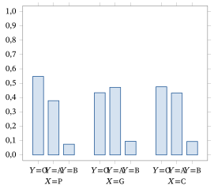
10.2.3 Formulação Bayesiana
Agora acrescentamos uma densidade a priori33 \(\pi\) para os valores desconhecidos dos parâmetros dos modelos discutidos nas Seções 10.2.1 e 10.2.2. Dependendo de como escolhemos \(\pi\), e dependendo da conta específica que queremos fazer, poderíamos nos deparar com alguns problemas computacionais difíceis. É claro que temos à disposição, nessas circunstâncias, os métodos de Monte Carlo, que muitas vezes tornam uma conta bastante simples.
A escolha mais comum de priori nessas circunstâncias é uma priori conjugada34. Como as verossimilhanças discutidas nesta seção são como no Exemplo 7.1.3, vemos imediatamente que prioris Dirichlet serão conjugadas para o modelo completo da Seção 10.2.1 e que produtos de prioris Dirichlet independentes serão conjugados para o modelo completo da Seção 10.2.2.
Na Seção 10.2.1, a verossimilhança geral (isto é, sem restrições sobre os \(\theta_{ij}\)) tem a forma \[ L(\theta_{11}, \ldots, \theta_{ab} \mid (x_1, y_1), \ldots, (x_n, y_n)) = \prod_{i=1}^{a} \prod_{j=1}^{b} \theta_{ij}^{f_{ij}}. \] Se pusermos uma priori Dirichlet\((\alpha_{11}, \ldots, \alpha_{ab})\) sobre o parâmetro, então a densidade a posteriori35 é proporcional a \[ \prod_{i=1}^{a} \prod_{j=1}^{b} \theta_{ij}^{f_{ij} + \alpha_{ij} - 1}, \] de modo que a posteriori36 é uma distribuição Dirichlet37\((f_{11} + \alpha_{11}, \ldots, f_{ab} + \alpha_{ab})\).
Na Seção 10.2.2, a verossimilhança geral tem a forma \[ L(\theta_{1|X=1}, \ldots, \theta_{b|X=a} \mid (x_1, y_1), \ldots, (x_n, y_n)) = \prod_{i=1}^{a} \prod_{j=1}^{b} (\theta_{j|X=i})^{f_{ij}}. \] Como \(\sum_{j=1}^{b} \theta_{j|X=i} = 1\) para cada \(i = 1, \ldots, a\), precisamos pôr uma priori sobre cada distribuição \((\theta_{1|X=i}, \ldots, \theta_{b|X=i})\). Se escolhermos a priori sobre a \(i\)-ésima distribuição como Dirichlet\((\alpha_{1|i}, \ldots, \alpha_{a|i})\), então a densidade a posteriori é proporcional a38 \[ \prod_{i=1}^{a} \prod_{j=1}^{b} \theta_{j|i}^{f_{ij} + \alpha_{j|i} - 1}. \] Reconhecemos isso como o produto de distribuições Dirichlet independentes, com a distribuição a posteriori de \((\theta_{1|X=i}, \ldots, \theta_{b|X=i})\) igual a uma distribuição \[ \text{Dirichlet}(f_{i1} + \alpha_{1|i}, \ldots, f_{ib} + \alpha_{b|i}). \]
Um caso especial e importante das prioris Dirichlet corresponde à situação em que sentimos não ter nenhuma informação sobre o parâmetro. Nessa situação, faz sentido escolher todos os parâmetros da Dirichlet iguais a 1, de modo que as prioris sejam todas uniformes.
Há muitas características de uma distribuição Dirichlet que podem ser calculadas em forma fechada, por exemplo, a esperança39 de qualquer polinômio (veja o Problema 10.2.20). Mesmo assim, haverá muitas quantidades para as quais não haverá contas exatas disponíveis. Acontece que sempre podemos gerar facilmente amostras de distribuições Dirichlet, desde que tenhamos acesso a um gerador de distribuições beta. Isso está disponível na maioria dos pacotes estatísticos. Discutimos agora como fazer isso.
A técnica que discutimos aqui é um método muito usado para gerar valores de distribuições multivariadas. Se queremos gerar um valor do vetor aleatório \((X_1, \ldots, X_k)\), podemos proceder da seguinte maneira. Primeiro, gere um valor \(x_1\) da distribuição marginal40 de \(X_1\). Em seguida, gere um valor \(x_2\) da distribuição condicional de \(X_2\) dado \(X_1 = x_1\). Depois, gere um valor \(x_3\) da distribuição condicional de \(X_3\), dado que \(X_1 = x_1\) e \(X_2 = x_2\), etc.
Se a distribuição de \(X\) é discreta, então a probabilidade de um vetor de valores específico \((x_1, x_2, \ldots, x_k)\) surgir por esse esquema é \[ P(X_1 = x_1)P(X_2 = x_2 \mid X_1 = x_1) \cdots P(X_k = x_k \mid X_1 = x_1, \ldots, X_{k-1} = x_{k-1}). \] Expandindo cada uma dessas probabilidades condicionais, obtemos \[ P(X_1 = x_1)\frac{P(X_1 = x_1, X_2 = x_2)}{P(X_1 = x_1)} \cdots \frac{P(X_1 = x_1, \ldots, X_{k-1} = x_{k-1}, X_k = x_k)} {P(X_1 = x_1, \ldots, X_{k-1} = x_{k-1})}, \] que é igual a \(P(X_1 = x_1, \ldots, X_{k-1} = x_{k-1}, X_k = x_k)\); assim, \((x_1, x_2, \ldots, x_k)\) é um valor da distribuição conjunta de \((X_1, \ldots, X_k)\). Essa abordagem também funciona para distribuições absolutamente contínuas, e a demonstração é a mesma, mas usa funções densidade no lugar das probabilidades.
No caso de \((X_1, \ldots, X_{k-1}) \sim \text{Dirichlet}(\alpha_1, \ldots, \alpha_k)\), temos (veja o Desafio 10.2.23) que \(X_1 \sim \text{Beta}(\alpha_1, \alpha_2 + \cdots + \alpha_k)\) e que \(X_i\), dado \(X_1 = x_1, \ldots, X_{i-1} = x_{i-1}\), tem a mesma distribuição que \((1 - x_1 - \cdots - x_{i-1})U_i\), em que \[ U_i \sim \text{Beta}(\alpha_i, \alpha_{i+1} + \cdots + \alpha_k) \] e \(U_2, \ldots, U_{k-1}\) são independentes. Note que \(X_k = 1 - X_1 - \cdots - X_{k-1}\) para qualquer distribuição Dirichlet. Então geramos \(X_1 \sim \text{Beta}(\alpha_1, \alpha_2 + \cdots + \alpha_k)\), geramos \(U_2 \sim \text{Beta}(\alpha_2, \alpha_3 + \cdots + \alpha_k)\) e pomos \(X_2 = (1 - X_1)U_2\), geramos \(U_3 \sim \text{Beta}(\alpha_3, \alpha_4 + \cdots + \alpha_k)\) e pomos \(X_3 = (1 - X_1 - X_2)U_3\) etc.
A seguir, apresentamos uma tabela com uma amostra de \(n = 5\) valores de uma distribuição Dirichlet\((2;\, 3;\, 1;\, 1{,}5)\).
| \(X_1\) | \(X_2\) | \(X_3\) | \(X_4\) | |
|---|---|---|---|---|
| 1 | 0,116159 | 0,585788 | 0,229019 | 0,069034 |
| 2 | 0,166639 | 0,566369 | 0,056627 | 0,210366 |
| 3 | 0,411488 | 0,183686 | 0,326451 | 0,078375 |
| 4 | 0,483124 | 0,316647 | 0,115544 | 0,084684 |
| 5 | 0,117876 | 0,147869 | 0,418013 | 0,316242 |
O Apêndice B contém o código usado para isso. Ele pode ser modificado para gerar valores de qualquer distribuição Dirichlet.
Resumo da Seção 10.2
- Nesta seção, consideramos a situação em que temos uma variável resposta categórica e uma variável preditora categórica.
- Distinguimos duas situações. A primeira surge quando o valor da variável preditora não é atribuído, e a segunda, quando é.
- Nos dois casos, o teste da hipótese nula de que não existe relação envolveu o teste qui-quadrado.
Exercícios
10.2.1 A tabela a seguir dá as contagens de acidentes em dois anos sucessivos numa determinada cidade.
| Junho | Julho | Agosto | |
|---|---|---|---|
| Ano 1 | 60 | 100 | 80 |
| Ano 2 | 80 | 100 | 60 |
Há alguma evidência de diferença na distribuição dos acidentes nesses meses entre os dois anos?
10.2.2 Os dados a seguir são de um estudo de Linus Pauling (1971) (“The significance of the evidence about ascorbic acid and the common cold”, Proceedings of the National Academy of Sciences, Vol. 68, p. 2678), que examinou a relação entre tomar vitamina C e a incidência de resfriados. Dos 279 participantes do estudo, 140 receberam um placebo (pílula de açúcar) e 139 receberam vitamina C.
| Sem resfriado | Resfriado | |
|---|---|---|
| Placebo | 31 | 109 |
| Vitamina C | 17 | 122 |
Avalie a hipótese nula de que não existe relação entre tomar vitamina C e a incidência de resfriado comum.
10.2.3 Um experimento de simulação é feito para ver se existe alguma relação entre o primeiro e o segundo dígitos de uma variável aleatória gerada de uma distribuição Uniforme41\([0, 1]\). Foram geradas, no total, 1000 uniformes; se o primeiro e o segundo dígitos estavam em \(\{0, 1, 2, 3, 4\}\), eram registrados como 0, e como 1 caso contrário. Os dados com a classificação cruzada são dados na tabela a seguir.
| Segundo dígito 0 | Segundo dígito 1 | |
|---|---|---|
| Primeiro dígito 0 | 240 | 250 |
| Primeiro dígito 1 | 255 | 255 |
Avalie a hipótese nula de que não existe relação entre os dígitos.
10.2.4 As notas numa disciplina de cálculo do primeiro ano foram obtidas para estudantes selecionados aleatoriamente em duas universidades e classificadas como aprovado ou reprovado. Foram obtidos os dados a seguir.
| Reprovado | Aprovado | |
|---|---|---|
| Universidade 1 | 33 | 143 |
| Universidade 2 | 22 | 263 |
Há alguma evidência de relação entre as notas de cálculo e a universidade?
10.2.5 Os dados a seguir estão registrados em Statistical Methods for Research Workers, de R. A. Fisher (Hafner Press, Nova York, 1922), e mostram a classificação de 3883 crianças escocesas por sexo (\(X\)) e cor do cabelo (\(Y\)).
| \(Y = \text{loiro}\) | \(Y = \text{ruivo}\) | \(Y = \text{médio}\) | \(Y = \text{escuro}\) | \(Y = \text{preto-azeviche}\) | |
|---|---|---|---|---|---|
| \(X = \mathrm{m}\) | 592 | 119 | 849 | 504 | 36 |
| \(X = \mathrm{f}\) | 544 | 97 | 677 | 451 | 14 |
(a) Há alguma evidência de relação entre a cor do cabelo e o sexo?(b) Faça o(s) gráfico(s) de barras apropriado(s).(c) Registre os resíduos e relacione-os com os resultados das partes (a) e (b). O que você conclui sobre o tamanho de qualquer desvio da independência?
10.2.6 Suponha que temos um preditor controlável \(X\) que assume quatro valores diferentes e que medimos uma resposta binária \(Y\). Uma amostra aleatória de 100 foi tirada da população, e o valor de \(X\) foi atribuído aleatoriamente a cada indivíduo de tal maneira que há 25 membros da amostra assumindo cada um dos valores possíveis de \(X\). Suponha que os dados a seguir foram obtidos.
| \(X = 1\) | \(X = 2\) | \(X = 3\) | \(X = 4\) | |
|---|---|---|---|---|
| \(Y = 0\) | 12 | 10 | 16 | 14 |
| \(Y = 1\) | 13 | 15 | 9 | 11 |
(a) Avalie se há ou não alguma evidência contra a existência de uma relação de causa e efeito entre \(X\) e \(Y\).(b) Explique por que é possível, neste exemplo, afirmar que qualquer evidência encontrada de que existe uma relação é evidência de que existe uma relação de causa e efeito.
10.2.7 Escreva em detalhes como você geraria um valor de uma distribuição Dirichlet\((1, 1, 1, 1)\).
10.2.8 Suponha que temos duas variáveis categóricas definidas numa população \(\Pi\) e que fazemos um censo. Como você decidiria se existe ou não uma relação entre \(X\) e \(Y\)? Se você decidisse que existe uma relação, como distinguiria entre uma relação forte e uma fraca?
10.2.9 Suponha que você lança dois dados simultaneamente \(n\) vezes e registra os resultados. Com base nesses valores, como você avaliaria a hipótese nula de que o resultado de cada dado é independente do resultado do outro?
10.2.10 Suponha que um professor queira avaliar se há ou não alguma diferença nas distribuições das notas finais (A, B, C, D e F) entre homens e mulheres numa determinada turma. Para avaliar a hipótese nula de que não há diferença entre essas distribuições, o professor faz um teste qui-quadrado. (a) Discuta como o professor fez esse teste.(b) Se o professor obteve evidência contra a hipótese nula, discuta que preocupações você tem quanto ao uso do teste qui-quadrado.
10.2.11 Suponha que um teste qui-quadrado seja feito, com base numa amostra aleatória de tamanho \(n\) de uma população, para avaliar se duas variáveis categóricas \(X\) e \(Y\) são ou não independentes. Suponha que o valor-p seja igual a 0,001 e que o pesquisador conclua que há evidência contra a independência. Discuta como você verificaria se o desvio da independência tem significância prática.
Problemas
10.2.12 No Exemplo 10.2.1, ponha uma priori uniforme sobre os parâmetros (uma distribuição Dirichlet com todos os parâmetros iguais a 1) e então determine a distribuição a posteriori dos parâmetros.
10.2.13 No Exemplo 10.2.2, ponha uma priori uniforme sobre os parâmetros de cada população (uma distribuição Dirichlet com todos os parâmetros iguais a 1), de modo que as três prioris sejam independentes. Então determine a distribuição a posteriori.
10.2.14 Numa tabela \(2 \times 2\) com probabilidades \(\theta_{ij}\), prove que as variáveis de linha e de coluna são independentes se e somente se \[ \frac{\theta_{11}\theta_{22}}{\theta_{12}\theta_{21}} = 1, \] ou seja, temos independência se e somente se a razão cruzada é igual a 1.
10.2.15 Estabeleça que a verossimilhança em (10.2.1) está correta quando o tamanho da população é infinito (ou quando fazemos amostragem com reposição42 da população).
10.2.16 (MV) Prove que o EMV de \((\theta_{11}, \ldots, \theta_{ab})\) em (10.2.1) é dado por \(\hat{\theta}_{ij} = f_{ij}/n\). Suponha que \(f_{ij} > 0\) para todo \(i, j\). (Sugestão: use os fatos de que uma função contínua neste espaço paramétrico \(\negrito{\Omega}\) precisa atingir seu máximo em algum ponto de \(\negrito{\Omega}\) e de que, se a função for continuamente diferenciável num tal ponto, então todas as suas derivadas parciais de primeira ordem são nulas ali. Isso permitirá concluir que a única solução das equações escore deve ser o ponto em que a log-verossimilhança43 é maximizada. Tente primeiro o caso em que \(a = 2\), \(b = 2\).)
10.2.17 (MV) Prove que o EMV de \((\theta_{1\cdot}, \ldots, \theta_{a\cdot}, \theta_{\cdot 1}, \ldots, \theta_{\cdot b})\) em (10.2.2) é dado por \(\hat{\theta}_{i\cdot} = f_{i\cdot}/n\) e \(\hat{\theta}_{\cdot j} = f_{\cdot j}/n\). Suponha que \(f_{i\cdot} > 0\), \(f_{\cdot j} > 0\) para todo \(i, j\). (Sugestão: use a sugestão do Problema 10.2.16.)
10.2.18 (MV) Prove que o EMV de \((\theta_{1|X=1}, \ldots, \theta_{b|X=a})\) em (10.2.3) é dado por \(\hat{\theta}_{j|X=i} = f_{ij}/n_i\). Suponha que \(f_{ij} > 0\) para todo \(i, j\). (Sugestão: use a sugestão do Problema 10.2.16.)
10.2.19 (MV) Prove que o EMV de \((\theta_1, \ldots, \theta_b)\) em (10.2.4) é dado por \(\hat{\theta}_j = f_{\cdot j}/n\). Suponha que \(f_{\cdot j} > 0\) para todo \(i, j\). (Sugestão: use a sugestão do Problema 10.2.16.)
10.2.20 Suponha que \(X = (X_1, \ldots, X_{k-1}) \sim \text{Dirichlet}(\alpha_1, \ldots, \alpha_k)\). Determine \(E(X_1^{l_1} \cdots X_k^{l_k})\) em termos da função gama44, quando \(l_i > 0\) para \(i = 1, \ldots, k\).
Problemas computacionais
10.2.21 Suponha que \((\theta_1, \theta_2, \theta_3, \theta_4) \sim \text{Dirichlet}(1, 1, 1, 1)\), como no Exercício 10.2.7. Gere uma amostra de tamanho \(N = 10^4\) dessa distribuição e use-a para estimar as esperanças dos \(\theta_i\). Compare essas estimativas com seus valores exatos. (Sugestão: há código relevante no Apêndice B para a geração; veja o Apêndice C para as fórmulas dos valores exatos dessas esperanças.)
10.2.22 Para o Problema 10.2.12, gere uma amostra de tamanho \(N = 10^4\) da distribuição a posteriori dos parâmetros e use-a para estimar as esperanças a posteriori das probabilidades das caselas. Compare essas estimativas com seus valores exatos. (Sugestão: há código relevante no Apêndice B para a geração; veja o Apêndice C para as fórmulas dos valores exatos dessas esperanças.)
Desafios
10.2.23 (MV) Estabeleça a validade do método discutido no Exemplo 10.2.3 para gerar valores de uma distribuição Dirichlet\((\alpha_1, \ldots, \alpha_k)\).
10.3 Resposta e Preditores Quantitativos
Quando as variáveis resposta e preditoras são todas categóricas, pode ser difícil formular modelos simples que descrevam adequadamente a relação entre as variáveis. Resta-nos registrar as distribuições condicionais e representá-las em gráficos de barras. Quando a variável resposta é quantitativa, porém, foram formulados modelos úteis que dão uma expressão matemática precisa para a forma da relação que possa existir. Vamos estudar esses tipos de modelo nas próximas três seções. Esta seção se concentra na situação em que todas as variáveis são quantitativas.
10.3.1 O Método dos Mínimos Quadrados
O método dos mínimos quadrados45 é um método geral para obter uma estimativa da média de uma distribuição. Ele não exige suposições específicas sobre a distribuição e, por isso, pode ser visto como um método livre de distribuição (ver Seção 6.4).
Suponha que temos uma variável aleatória \(Y\) e queremos estimar \(E(Y)\) com base em uma amostra \((y_1, \ldots, y_n)\). O princípio a seguir é muito usado para gerar estimativas.
O princípio de mínimos quadrados diz que escolhemos o ponto \(t(y_1, \ldots, y_n)\), no conjunto de valores possíveis de \(E(Y)\), que minimiza a soma dos desvios ao quadrado (daí o nome “mínimos quadrados”) dada por \(\sum_{i=1}^{n} (y_i - t(y_1, \ldots, y_n))^2\). Uma estimativa assim é chamada de estimativa de mínimos quadrados46.
Observe que uma estimativa de mínimos quadrados está definida para qualquer tamanho da amostra, mesmo \(n = 1\).
Para aplicar os mínimos quadrados, precisamos encontrar o ponto minimizador \(t(y_1, \ldots, y_n)\). Um primeiro palpite para esse valor talvez seja a média amostral \(\bar{y}\). Como \(\sum_{i=1}^{n} (y_i - \bar{y})(\bar{y} - t(y_1, \ldots, y_n))\) \({}= (\bar{y} - t(y_1, \ldots, y_n))\left(\sum_{i=1}^{n} y_i - n\bar{y}\right)\) \({}= 0\), temos \begin{align} &\sum_{i=1}^{n} (y_i - t(y_1, \ldots, y_n))^2 = \sum_{i=1}^{n} (y_i - \bar{y} + \bar{y} - t(y_1, \ldots, y_n))^2 \notag \\ &\quad = \sum_{i=1}^{n} (y_i - \bar{y})^2 + 2 \sum_{i=1}^{n} (y_i - \bar{y})(\bar{y} - t(y_1, \ldots, y_n)) + \sum_{i=1}^{n} (\bar{y} - t(y_1, \ldots, y_n))^2 \notag \\ &\quad = \sum_{i=1}^{n} (y_i - \bar{y})^2 + n(\bar{y} - t(y_1, \ldots, y_n))^2. \tag{10.3.1} \end{align}
Portanto, o menor valor possível de (10.3.1) é \(\sum_{i=1}^{n} (y_i - \bar{y}^2)\),47 e ele é atingido tomando \(t(y_1, \ldots, y_n) = \bar{y}\). Observe, porém, que \(\bar{y}\) pode não ser um valor possível de \(E(Y)\) e, nesse caso, não será a estimativa de mínimos quadrados. Em geral, (10.3.1) diz que a estimativa de mínimos quadrados é o valor \(t(y_1, \ldots, y_n)\) que está mais próximo de \(\bar{y}\) e é um valor possível de \(E(Y)\).
Considere o exemplo a seguir.
Suponha que \(Y\) tenha uma das distribuições em \(S = \{0, 1\}\) dadas na tabela a seguir.
| \(y = 0\) | \(y = 1\) | |
|---|---|---|
| \(p_1(y)\) | \(1/2\) | \(1/2\) |
| \(p_2(y)\) | \(1/3\) | \(2/3\) |
Então, a média de \(Y\) é dada por \[ E_1(Y) = 0\left(\frac{1}{2}\right) + 1\left(\frac{1}{2}\right) = \frac{1}{2} \quad\text{ou}\quad E_2(Y) = 0\left(\frac{1}{3}\right) + 1\left(\frac{2}{3}\right) = \frac{2}{3}. \]
Agora suponha que observamos a amostra \((0, 0, 1, 1, 1)\), de modo que \(\bar{y} = 3/5\). Como os valores possíveis de \(E(Y)\) estão em \(\{1/2, 2/3\}\), vemos que \(t(0, 0, 1, 1, 1) = 2/3\), pois \((3/5 - 2/3)^2 = 0{,}004\), enquanto \((3/5 - 1/2)^2 = 0{,}01\).
Sempre que o conjunto de valores possíveis de \(E(Y)\) for um intervalo \((a, b)\) e \(P(Y \in (a, b)) = 1\), porém, teremos \(\bar{y} \in (a, b)\). Isso implica que \(\bar{y}\) é o estimador de mínimos quadrados de \(E(Y)\). Vemos, então, que em circunstâncias bastante gerais \(\bar{y}\) é a estimativa de mínimos quadrados.
Há uma equivalência entre os mínimos quadrados e o método da máxima verossimilhança quando lidamos com distribuições normais.
Suponha que \((y_1, \ldots, y_n)\) seja uma amostra de uma distribuição \(N(\mu, \sigma_0^2)\), em que \(\mu\) é desconhecido. Então, o EMV de \(\mu\) é obtido encontrando o valor de \(\mu\) que maximiza \[ L(\mu \mid y_1, \ldots, y_n) = \exp\left\{-\frac{n}{2\sigma_0^2}(\bar{y} - \mu)^2\right\}. \] De modo equivalente, o EMV maximiza a log-verossimilhança \[ l(\mu \mid y_1, \ldots, y_n) = -\frac{n}{2\sigma_0^2}(\bar{y} - \mu)^2. \] Assim, precisamos encontrar o valor de \(\mu\) que minimiza \((\bar{y} - \mu)^2\), exatamente como nos mínimos quadrados.
No caso do modelo normal de locação48, vemos que a estimativa de mínimos quadrados e o EMV de \(\theta\) coincidem.49 Essa equivalência vale em geral para modelos normais (por exemplo, o modelo normal de locação e escala50), pelo menos quando consideramos estimativas de parâmetros de locação.
Algumas das aplicações mais importantes dos mínimos quadrados surgem quando a resposta é um vetor aleatório \(Y = (Y_1, \ldots, Y_n)' \in R^n\) (a linha \('\) indica que consideramos \(Y\) como uma coluna) e observamos uma única observação \(y = (y_1, \ldots, y_n)' \in R^n\). O valor esperado51 de \(Y \in R^n\) é definido como o vetor das esperanças das variáveis aleatórias que são suas componentes, isto é, \[ E(Y) = \begin{pmatrix} E(Y_1) \\ \vdots \\ E(Y_n) \end{pmatrix} \in R^n. \] O princípio de mínimos quadrados diz, então, que, com base na única observação \(y = (y_1, \ldots, y_n)\), precisamos encontrar52 \[ t(y) = t(y_1, \ldots, y_n) = t_1(y_1, \ldots, y_n), \ldots, t_n(y_1, \ldots, y_n))', \] no conjunto de valores possíveis de \(E(Y)\) (um subconjunto de \(R^n\)), que minimiza \begin{equation} \sum_{i=1}^{n} (y_i - t_i(y_1, \ldots, y_n))^2. \tag{10.3.2} \end{equation} Assim, \(t(y)\) é o valor possível de \(E(Y)\) que está mais próximo de \(y\), já que o quadrado da distância entre dois pontos \(x, y \in R^n\) é dado por \(\sum_{i=1}^{n} (x_i - y_i)^2\).
Como é comum nas aplicações estatísticas, suponha que existam variáveis preditoras que possam estar relacionadas com \(Y\) e cujos valores são observados. Nesse caso, vamos substituir \(E(Y)\) por sua média condicional, dados os valores observados dos preditores. A estimativa de mínimos quadrados da média condicional é, então, o valor \(t(y_1, \ldots, y_n)\), no conjunto de valores possíveis da média condicional de \(Y\), que minimiza (10.3.2). Usaremos essa definição nas seções seguintes.
Encontrar o valor minimizador de \(t(y)\) em (10.3.2) pode ser um problema de otimização difícil quando o conjunto de valores possíveis da média é complicado. Vamos agora aplicar os mínimos quadrados a alguns problemas importantes em que a solução de mínimos quadrados pode ser encontrada em forma fechada.
10.3.2 O Modelo de Regressão Linear Simples
Suponha que temos uma única variável resposta quantitativa \(Y\) e um único preditor quantitativo \(X\); por exemplo, \(Y\) poderia ser a pressão arterial medida em libras por polegada quadrada e \(X\) poderia ser a idade em anos. Para estudar a relação entre essas variáveis, examinamos as distribuições condicionais de \(Y\), dado \(X = x\), para ver como elas mudam quando mudamos \(x\).
Podemos escolher examinar uma característica específica dessas distribuições para ver como ela varia com \(x\). Talvez a característica mais usada seja a média condicional de \(Y\) dado \(X = x\), ou \(E(Y \mid X = x)\) (ver Seção 3.5).
No modelo de regressão (ver Seção 10.1), supomos que as distribuições condicionais têm forma constante e que elas mudam, quando mudamos \(x\), no máximo por meio da média condicional. No modelo de regressão linear simples53, supomos que a única maneira de a média condicional mudar é por meio da relação \[ E(Y \mid X = x) = \beta_1 + \beta_2 x, \] para alguns valores desconhecidos \(\beta_1 \in R^1\) (o intercepto) e \(\beta_2 \in R^1\) (o coeficiente angular). Também chamamos \(\beta_1\) e \(\beta_2\) de coeficientes de regressão.
Suponha que observamos os valores independentes \((x_1, y_1), \ldots, (x_n, y_n)\) de \((X, Y)\). Então, usando o modelo de regressão linear simples, temos \begin{equation} E\left(\begin{pmatrix} Y_1 \\ \vdots \\ Y_n \end{pmatrix} \middle| \, X_1 = x_1, \ldots, X_n = x_n\right) = \begin{pmatrix} \beta_1 + \beta_2 x_1 \\ \vdots \\ \beta_1 + \beta_2 x_n \end{pmatrix}. \tag{10.3.3} \end{equation}
A equação (10.3.3) nos diz que o valor esperado condicional da resposta \((Y_1, \ldots, Y_n)'\) está num subconjunto específico de \(R^n\). Além disso, (10.3.2) se torna \begin{equation} \sum_{i=1}^{n} (y_i - t_i(y))^2 = \sum_{i=1}^{n} (y_i - \beta_1 - \beta_2 x_i)^2, \tag{10.3.4} \end{equation} e precisamos encontrar os valores de \(\beta_1\) e \(\beta_2\) que minimizam (10.3.4). Esses valores são chamados de estimativas de mínimos quadrados de \(\beta_1\) e \(\beta_2\).
Antes de mostrar como fazer isso, considere um exemplo.
Suponha que obtivemos os seguintes \(n = 10\) pontos de dados \((x_i, y_i)\).
| \((3{,}9; 8{,}9)\) | \((2{,}6; 7{,}1)\) | \((2{,}4; 4{,}6)\) | \((4{,}1; 10{,}7)\) | \((-0{,}2; 1{,}0)\) |
|---|---|---|---|---|
| \((5{,}4; 12{,}6)\) | \((0{,}6; 3{,}3)\) | \((-5{,}6; -10{,}4)\) | \((-1{,}1; -2{,}3)\) | \((-2{,}1; -1{,}6)\) |
Na Figura 10.3.1, representamos esses pontos junto com a reta \(y = 1 + x\).
Observe que, com \(\beta_1 = 1\) e \(\beta_2 = 1\), \[ (y_i - \beta_1 - \beta_2 x_i)^2 = (y_i - 1 - x_i)^2 \] é o quadrado da distância vertical entre o ponto \((x_i, y_i)\) e o ponto da reta com o mesmo valor de \(x\). Assim, (10.3.4) é a soma desses desvios ao quadrado e, neste caso, é igual a \[ (8{,}9 - 1 - 3{,}9)^2 + (7{,}1 - 1 - 2{,}6)^2 + \cdots + (-1{,}6 - 1 + 2{,}1)^2 = 141{,}15. \] Se \(\beta_1 = 1\) e \(\beta_2 = 1\) fossem as estimativas de mínimos quadrados, então \(141{,}15\) seria igual ao menor valor possível de (10.3.4). Neste caso, ocorre (ver Exemplo 10.3.4) que as estimativas de mínimos quadrados são dadas pelos valores \(\beta_1 = 1{,}33\), \(\beta_2 = 2{,}06\), e o valor minimizado de (10.3.4) é \(8{,}46\), que é muito menor que \(141{,}15\).
Vemos, então, que, ao encontrar as estimativas de mínimos quadrados, estamos essencialmente encontrando a reta \(\beta_1 + \beta_2 x\) que melhor se ajusta aos dados, no sentido de que a soma dos quadrados dos desvios verticais dos pontos observados em relação à reta é minimizada.
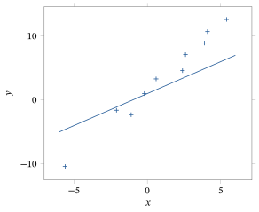
Diagramas de Dispersão
Como parte do Exemplo 10.3.3, representamos os pontos \((x_1, y_1), \ldots, (x_n, y_n)\) num gráfico. Ele é chamado de diagrama de dispersão54 e é um primeiro passo recomendado em qualquer análise da relação entre variáveis quantitativas \(X\) e \(Y\). Um diagrama de dispersão pode nos dar uma ideia bem geral de se existe ou não uma relação e de que forma ela pode ter.
É importante lembrar, porém, que a aparência de um gráfico assim depende muito das escalas que escolhemos para os eixos. Por exemplo, podemos fazer um diagrama de dispersão parecer praticamente plano (e, assim, indicar que não existe relação) escolhendo pôr marcas de escala ao longo de uma faixa larga demais no eixo \(y\). Assim, devemos sempre complementar55 um diagrama de dispersão com uma análise estatística baseada em números.
Estimativas de Mínimos Quadrados, Predições e Erros Padrão
Para o modelo de regressão linear simples, podemos obter fórmulas exatas para as estimativas de mínimos quadrados de \(\beta_1\) e \(\beta_2\).
Suponha que \(E(Y \mid X = x) = \beta_1 + \beta_2 x\) e que observamos os valores independentes \((x_1, y_1), \ldots, (x_n, y_n)\) de \((X, Y)\). Então, as estimativas de mínimos quadrados de \(\beta_1\) e \(\beta_2\) são dadas por \[ b_1 = \bar{y} - b_2 \bar{x} \quad\text{e}\quad b_2 = \frac{\sum_{i=1}^{n} (x_i - \bar{x})(y_i - \bar{y})}{\sum_{i=1}^{n} (x_i - \bar{x})^2}, \] respectivamente, sempre que \(\sum_{i=1}^{n} (x_i - \bar{x})^2 \neq 0\).
A demonstração deste resultado está na Seção 10.6.
Chamamos a reta \(y = b_1 + b_2 x\) de reta de mínimos quadrados, ou reta de melhor ajuste, e \(b_1 + b_2 x\) é a estimativa de mínimos quadrados de \(E(Y \mid X = x)\). Observe que \(\sum_{i=1}^{n} (x_i - \bar{x})^2 = 0\) se e somente se \(x_1 = \cdots = x_n\). Nesse caso, não podemos usar mínimos quadrados para estimar \(\beta_1\) e \(\beta_2\), embora ainda possamos estimar \(E(Y \mid X = x)\) (ver Problema 10.3.19).
Agora que temos as estimativas \(b_1, b_2\) dos coeficientes de regressão, queremos usá-las para fazer inferências sobre \(\beta_1\) e \(\beta_2\). Essas estimativas têm a propriedade de serem não viesadas.
Se \(E(Y \mid X = x) = \beta_1 + \beta_2 x\) e observamos os valores independentes \((x_1, y_1), \ldots, (x_n, y_n)\) de \((X, Y)\), então (i) \(E(B_1 \mid X_1 = x_1, \ldots, X_n = x_n)\) \({}= \beta_1\),(ii) \(E(B_2 \mid X_1 = x_1, \ldots, X_n = x_n)\) \({}= \beta_2\).
A demonstração deste resultado está na Seção 10.6.
Observe que o Teorema 10.3.2 e o teorema da esperança total implicam que \(E(B_1) = \beta_1\) e \(E(B_2) = \beta_2\) também incondicionalmente.
Acrescentando a suposição de que as variâncias condicionais existem, temos o teorema a seguir.
Se \(E(Y \mid X = x) = \beta_1 + \beta_2 x\), \(\Var(Y \mid X = x) = \sigma^2\) para todo \(x\), e observamos os valores independentes \((x_1, y_1), \ldots, (x_n, y_n)\) de \((X, Y)\), então (i) \(\Var(B_1 \mid X_1 = x_1, \ldots, X_n = x_n)\) \({}= \sigma^2 \left(1/n + \bar{x}^2 \big/ \sum_{i=1}^{n} (x_i - \bar{x})^2\right)\),(ii) \(\Var(B_2 \mid X_1 = x_1, \ldots, X_n = x_n)\) \({}= \sigma^2 \big/ \sum_{i=1}^{n} (x_i - \bar{x})^2\),(iii) \(\Cov(B_1, B_2 \mid X_1 = x_1, \ldots, X_n = x_n)\) \({}= -\sigma^2 \bar{x} \big/ \sum_{i=1}^{n} (x_i - \bar{x})^2\).
Ver a Seção 10.6 para a demonstração deste resultado.
Para a estimativa de mínimos quadrados \(b_1 + b_2 x\) da média \(E(Y \mid X = x) = \beta_1 + \beta_2 x\), temos o resultado a seguir.
\begin{equation} \Var(B_1 + B_2 x \mid X_1 = x_1, \ldots, X_n = x_n) = \sigma^2 \left(\frac{1}{n} + \frac{(x - \bar{x})^2}{\sum_{i=1}^{n} (x_i - \bar{x})^2}\right) \tag{10.3.5} \end{equation}
Ver a Seção 10.6 para a demonstração deste resultado.
Um preditor natural de um valor futuro de \(Y\), quando \(X = x\), é dado pela média condicional \(E(Y \mid X = x) = \beta_1 + \beta_2 x\). Como não conhecemos os valores de \(\beta_1\) e \(\beta_2\), usamos a média estimada \(b_1 + b_2 x\) como preditor.
Quando predizemos \(Y\) num valor de \(x\) que está dentro da faixa dos valores observados de \(X\), dizemos que se trata de uma interpolação. Quando queremos predizer num valor de \(x\) que está fora dessa faixa, dizemos que se trata de uma extrapolação. Extrapolações são muito menos confiáveis que interpolações. Intuitivamente, quanto mais longe \(x\) estiver da faixa observada de valores de \(X\), menos confiável nos parecerá essa predição56. Considerações assim devem estar sempre em mente. Por (10.3.5), vemos que a variância da predição no valor \(X = x\) aumenta à medida que \(x\) se afasta de \(\bar{x}\). Assim, até certo ponto, o erro padrão reflete esse aumento da incerteza, mas observe que sua forma se baseia na suposição de que o modelo de regressão linear simples está correto. Mesmo que aceitemos o modelo de regressão linear simples com base nos dados observados (vamos discutir a verificação do modelo mais adiante nesta seção), esse modelo pode deixar de valer para valores muito diferentes de \(x\) e, então, as predições estariam erradas.
Queremos usar os resultados do Teorema 10.3.3 e do Corolário 10.3.1 para calcular erros padrão das estimativas de mínimos quadrados. Como não conhecemos \(\sigma^2\), porém, precisamos também de uma estimativa dessa quantidade. O resultado a seguir mostra que \begin{equation} s^2 = \frac{1}{n - 2} \sum_{i=1}^{n} (y_i - b_1 - b_2 x_i)^2 \tag{10.3.6} \end{equation} é uma estimativa não viesada de \(\sigma^2\).
Se \(E(Y \mid X = x) = \beta_1 + \beta_2 x\), \(\Var(Y \mid X = x) = \sigma^2\) para todo \(x\), e observamos os valores independentes \((x_1, y_1), \ldots, (x_n, y_n)\) de \((X, Y)\), então \[ E(S^2 \mid X_1 = x_1, \ldots, X_n = x_n) = \sigma^2. \]
Ver a Seção 10.6 para a demonstração deste resultado.
Portanto, o erro padrão de \(b_1\) é dado por \[ s\left(\frac{1}{n} + \frac{\bar{x}^2}{\sum_{i=1}^{n} (x_i - \bar{x})^2}\right)^{1/2}, \] e o erro padrão de \(b_2\) é dado por \[ s\left(\sum_{i=1}^{n} (x_i - \bar{x})^2\right)^{-1/2}. \] Sob suposições adicionais, esses erros padrão podem ser interpretados exatamente como interpretamos os erros padrão das estimativas da média nos modelos normais de locação e de locação e escala.
Usando os dados do Exemplo 10.3.3 e as fórmulas do Teorema 10.3.1, obtemos \(b_1 = 1{,}33\), \(b_2 = 2{,}06\) como as estimativas de mínimos quadrados do intercepto e do coeficiente angular, respectivamente. Assim, a reta de mínimos quadrados é dada por \(1{,}33 + 2{,}06x\). Usando (10.3.6), obtemos \(s^2 = 1{,}06\) como estimativa de \(\sigma^2\).
Usando as fórmulas do Teorema 10.3.3, o erro padrão de \(b_1\) é \(0{,}3408\), enquanto o erro padrão de \(b_2\) é \(0{,}1023\).
A predição de \(Y\) em \(X = 2{,}0\) é dada por \(1{,}33 + 2{,}06(2) = 5{,}45\). Pelo Corolário 10.3.1, essa estimativa tem erro padrão \(0{,}341\). Essa predição é uma interpolação.
A Decomposição ANOVA e a Estatística \(F\)
O resultado a seguir dá uma decomposição da soma de quadrados total \(\sum_{i=1}^{n} (y_i - \bar{y})^2\).
Se \((x_1, y_1), \ldots, (x_n, y_n)\) são tais que \(\sum_{i=1}^{n} (x_i - \bar{x})^2 \neq 0\), então \[ \sum_{i=1}^{n} (y_i - \bar{y})^2 = b_2^2 \sum_{i=1}^{n} (x_i - \bar{x})^2 + \sum_{i=1}^{n} (y_i - b_1 - b_2 x_i)^2. \]
A demonstração deste resultado está na Seção 10.6.
Chamamos \[ b_2^2 \sum_{i=1}^{n} (x_i - \bar{x})^2 \] de soma de quadrados da regressão (RSS) e chamamos \[ \sum_{i=1}^{n} (y_i - b_1 - b_2 x_i)^2 \] de soma de quadrados dos erros (ESS).
Se pensarmos na soma de quadrados total como uma medida da variação total observada nos valores da resposta \(y_i\), então o Lema 10.3.1 dá uma decomposição dessa variação em RSS, que mede as mudanças na resposta devidas a mudanças no preditor, e ESS, que mede as mudanças na resposta devidas à contribuição do erro aleatório.
É comum escrever essa decomposição numa tabela de análise de variância (ANOVA).
| Fonte | GL | Soma de Quadrados | Quadrado Médio |
|---|---|---|---|
| \(X\) | \(1\) | \(b_2^2 \sum_{i=1}^{n} (x_i - \bar{x})^2\) | \(b_2^2 \sum_{i=1}^{n} (x_i - \bar{x})^2\) |
| Erro | \(n - 2\) | \(\sum_{i=1}^{n} (y_i - b_1 - b_2 x_i)^2\) | \(s^2\) |
| Total | \(n - 1\) | \(\sum_{i=1}^{n} (y_i - \bar{y})^2\) |
Aqui, GL indica os graus de liberdade57 (vamos discutir como as entradas de GL são calculadas na Seção 10.3.4). As entradas da coluna Quadrado Médio são calculadas dividindo a soma de quadrados correspondente pela entrada de GL.
Para ver o significado da tabela ANOVA, observe que, pelo Teorema 10.3.3, \begin{equation} E\left(B_2^2 \sum_{i=1}^{n} (x_i - \bar{x})^2 \,\middle|\, X_1 = x_1, \ldots, X_n = x_n\right) = \sigma^2 + \beta_2^2 \sum_{i=1}^{n} (x_i - \bar{x})^2, \tag{10.3.7} \end{equation} que é igual a \(\sigma^2\) se e somente se \(\beta_2 = 0\) (estamos sempre supondo aqui que os \(x_i\) variam). Dado que o modelo de regressão linear simples está correto, temos \(\beta_2 = 0\) se e somente se não há relação entre a resposta e o preditor. Portanto, \(b_2^2 \sum_{i=1}^{n} (x_i - \bar{x})^2\) é um estimador não viesado58 de \(\sigma^2\) se e somente se \(\beta_2 = 0\). Como \(s^2\) é sempre uma estimativa não viesada de \(\sigma^2\) (Teorema 10.3.4), uma estatística sensata para avaliar \(H_0 : \beta_2 = 0\) é dada por \begin{equation} F = \frac{\mathrm{RSS}}{\mathrm{ESS}/(n - 2)} = \frac{b_2^2 \sum_{i=1}^{n} (x_i - \bar{x})^2}{s^2}, \tag{10.3.8} \end{equation} pois essa é a razão de dois estimadores não viesados de \(\sigma^2\) quando \(H_0\) é verdadeira. Concluímos, então, que temos evidência contra \(H_0\) quando \(F\) é grande, já que (10.3.7) mostra também que o numerador tenderá a ser maior que \(\sigma^2\) quando \(H_0\) é falsa. Chamamos (10.3.8) de estatística \(F\). Mais adiante, vamos discutir a distribuição amostral59 de \(F\) para ver como determinar quando o valor de \(F\) é grande o bastante para ser evidência contra \(H_0\).
Usando os dados do Exemplo 10.3.3, obtemos \begin{align*} \sum_{i=1}^{n} (y_i - \bar{y})^2 &= 437{,}01, \\ b_2^2 \sum_{i=1}^{n} (x_i - \bar{x})^2 &= 428{,}55, \\ \sum_{i=1}^{n} (y_i - b_1 - b_2 x_i)^2 &= 437{,}01 - 428{,}55 = 8{,}46, \end{align*} e, assim, \[ F = \frac{b_2^2 \sum_{i=1}^{n} (x_i - \bar{x})^2}{s^2} = \frac{428{,}55}{1{,}06} = 404{,}29. \] Observe que \(F\) é muito maior que 1, e isso parece indicar um efeito linear devido a \(X\).
O Coeficiente de Determinação e a Correlação
O Lema 10.3.1 implica que \[ R^2 = \frac{b_2^2 \sum_{i=1}^{n} (x_i - \bar{x})^2}{\sum_{i=1}^{n} (y_i - \bar{y})^2} \] satisfaz \(0 \le R^2 \le 1\). Portanto, quanto mais perto \(R^2\) estiver de 1, maior a parte da variação total observada na resposta que é explicada por mudanças no preditor. De fato, interpretamos \(R^2\), chamado de coeficiente de determinação60, como a proporção da variação observada na resposta explicada por mudanças no preditor por meio da regressão linear simples.
O coeficiente de determinação é uma estatística descritiva importante, pois, mesmo que concluamos que existe uma relação, pode acontecer de a maior parte da variação observada se dever ao erro. Se quisermos usar o modelo para predizer novos valores da resposta, o coeficiente de determinação nos diz se podemos ou não esperar predições muito precisas. Um valor de \(R^2\) perto de 1 significa predições muito precisas, enquanto um valor perto de 0 significa que as predições não serão muito precisas.
Usando os dados do Exemplo 10.3.3, obtemos \(R^2 = 0{,}981\). Portanto, 98,1% da variação observada em \(Y\) podem ser explicados pelas mudanças em \(X\) por meio da relação linear. Isso indica que podemos esperar predições bastante precisas ao usar esse modelo, pelo menos quando predizemos dentro da faixa dos valores observados de \(X\).
Lembre que, na Seção 3.3, definimos o coeficiente de correlação entre as variáveis aleatórias \(X\) e \(Y\) como \[ \rho_{XY} = \Corr(X, Y) = \frac{\Cov(X, Y)}{\Sd(X)\Sd(Y)}. \] No Corolário 3.6.1, provamos que \(-1 \le \rho_{XY} \le 1\), com \(\rho_{XY} = \pm 1\) se e somente se \(Y = a \pm cX\) para algumas constantes \(a \in R^1\) e \(c > 0\). Assim, \(\rho_{XY}\) pode ser tomado como uma medida de quanto existe uma relação linear entre \(X\) e \(Y\).
Se não conhecemos a distribuição conjunta de \((X, Y)\), teremos de estimar \(\rho_{XY}\). Com base nas observações \((x_1, y_1), \ldots, (x_n, y_n)\), a estimativa natural a usar é o coeficiente de correlação amostral61 \[ r_{xy} = \frac{s_{xy}}{s_x s_y}, \] em que \[ s_{xy} = \frac{1}{n - 1} \sum_{i=1}^{n} (x_i - \bar{x})(y_i - \bar{y}) \] é a covariância amostral62, que estima \(\Cov(X, Y)\), e \(s_x, s_y\) são os desvios padrão amostrais das variáveis \(X\) e \(Y\), respectivamente. Então, \(-1 \le r_{xy} \le 1\), com \(r_{xy} = \pm 1\) se e somente se \(y_i = a \pm c x_i\) para algumas constantes \(a \in R^1\) e \(c > 0\), para todo \(i\) (a demonstração é a mesma do Corolário 3.6.1, usando a distribuição conjunta que põe massa de probabilidade \(1/n\) em cada ponto \((x_i, y_i)\) — ver Problema 3.6.16).
O resultado a seguir mostra que o coeficiente de determinação é o quadrado da correlação entre os valores observados de \(X\) e \(Y\).
Se \((x_1, y_1), \ldots, (x_n, y_n)\) são tais que \(\sum_{i=1}^{n} (x_i - \bar{x})^2 \neq 0\), \(\sum_{i=1}^{n} (y_i - \bar{y})^2 \neq 0\), então \(R^2 = r_{xy}^2\).
Temos \[ r_{xy}^2 = \frac{\left(\sum_{i=1}^{n} (x_i - \bar{x})(y_i - \bar{y})\right)^2}{\sum_{i=1}^{n} (x_i - \bar{x})^2 \sum_{i=1}^{n} (y_i - \bar{y})^2} = b_2^2 \frac{\sum_{i=1}^{n} (x_i - \bar{x})^2}{\sum_{i=1}^{n} (y_i - \bar{y})^2} = R^2, \] em que usamos a fórmula de \(b_2\) dada no Teorema 10.3.1.
Intervalos de Confiança e Testes de Hipóteses
Precisamos fazer mais algumas suposições para discutir as distribuições amostrais das diversas estatísticas que introduzimos. Temos os resultados a seguir.
Se \(Y\), dado \(X = x\), tem distribuição \(N(\beta_1 + \beta_2 x, \sigma^2)\) e observamos os valores independentes \((x_1, y_1), \ldots, (x_n, y_n)\) de \((X, Y)\), então as distribuições condicionais de \(B_1\), \(B_2\) e \(S^2\), dados \(X_1 = x_1, \ldots, X_n = x_n\), são as seguintes. (i) \(B_1 \sim N\left(\beta_1, \sigma^2 \left(1/n + \bar{x}^2 \big/ \sum_{i=1}^{n} (x_i - \bar{x})^2\right)\right)\)(ii) \(B_2 \sim N\left(\beta_2, \sigma^2 \big/ \sum_{i=1}^{n} (x_i - \bar{x})^2\right)\)(iii) \(B_1 + B_2 x \sim N\left(\beta_1 + \beta_2 x, \sigma^2 \left(1/n + (x - \bar{x})^2 \big/ \sum_{i=1}^{n} (x_i - \bar{x})^2\right)\right)\)(iv) \((n - 2) S^2/\sigma^2 \sim \chi^2(n - 2)\), independente de \((B_1, B_2)\)
A demonstração deste resultado está na Seção 10.6.
(i) \((B_1 - \beta_1) \big/ \left(S\left(1/n + \bar{x}^2 \big/ \sum_{i=1}^{n} (x_i - \bar{x})^2\right)^{1/2}\right) \sim t(n - 2)\)(ii) \((B_2 - \beta_2)\left(\sum_{i=1}^{n} (x_i - \bar{x})^2\right)^{1/2} \big/ S \sim t(n - 2)\)(iii) 63 \[ \frac{B_1 + B_2 x - \beta_1 - \beta_2 x}{S\left(\left(1/n + (x - \bar{x})^2\right) \big/ \sum_{i=1}^{n} (x_i - \bar{x})^2\right)^{1/2}} \sim t(n - 2) \](iv) Se \(F\) é definida como em (10.3.8), então \(H_0 : \beta_2 = 0\) é verdadeira se e somente se \(F \sim F(1, n - 2)\).
A demonstração deste resultado está na Seção 10.6.
Pelo Corolário 10.3.2(i), temos que \[ b_1 \pm s\left(1/n + \bar{x}^2 \bigg/ \sum_{i=1}^{n} (x_i - \bar{x})^2\right)^{1/2} t_{(1+\gamma)/2}(n - 2) \] é um intervalo de confiança64 \(\gamma\) exato para \(\beta_1\). Além disso, pelo Corolário 10.3.2(ii), \[ b_2 \pm s\left(\sum_{i=1}^{n} (x_i - \bar{x})^2\right)^{-1/2} t_{(1+\gamma)/2}(n - 2) \] é um intervalo de confiança \(\gamma\) exato para \(\beta_2\).
Pelo Corolário 10.3.2(iv), podemos testar \(H_0 : \beta_2 = 0\) calculando o valor-p \begin{equation} P\left(F \ge \frac{b_2^2 \sum_{i=1}^{n} (x_i - \bar{x})^2}{s^2}\right), \tag{10.3.9} \end{equation} em que \(F \sim F(1, n - 2)\), para ver se o valor observado (10.3.8) é ou não surpreendente. Isso às vezes é chamado de teste ANOVA. Observe que o Corolário 10.3.2(ii) implica que também podemos testar \(H_0 : \beta_2 = 0\) calculando o valor-p \begin{equation} P\left(\lvert T \rvert \ge \frac{b_2 \left(\sum_{i=1}^{n} (x_i - \bar{x})^2\right)^{1/2}}{s}\right), \tag{10.3.10} \end{equation} em que \(T \sim t(n - 2)\). A demonstração do Corolário 10.3.2(iv) revela que (10.3.9) e (10.3.10) são iguais.
Usando um software ou a Tabela D.4, obtemos \(t_{0{,}975}(8) = 2{,}306\). Então, usando os dados do Exemplo 10.3.3, obtemos um intervalo de confiança 0,95 para \(\beta_1\) dado por \begin{align*} &b_1 \pm s\left(1/n + \bar{x}^2 \bigg/ \sum_{i=1}^{n} (x_i - \bar{x})^2\right)^{1/2} t_{(1+\gamma)/2}(n - 2) \\ &\quad = 1{,}33 \pm (0{,}3408)(2{,}306) = [0{,}544;\ 2{,}116] \end{align*} e um intervalo de confiança 0,95 para \(\beta_2\) dado por \begin{align*} &b_2 \pm s\left(\sum_{i=1}^{n} (x_i - \bar{x})^2\right)^{-1/2} t_{(1+\gamma)/2}(n - 2) \\ &\quad = 2{,}06 \pm (0{,}1023)(2{,}306) = [1{,}824;\ 2{,}296]. \end{align*}
O intervalo de confiança 0,95 para \(\beta_2\) não contém 0, de modo que temos evidência contra a hipótese nula \(H_0 : \beta_2 = 0\) e concluímos que há evidência de uma relação entre \(X\) e \(Y\). Isso é confirmado pelo teste \(F\) dessa hipótese nula, que dá o valor-p \(P(F \ge 404{,}29) = 0{,}000\) quando \(F \sim F(1, 8)\).
Análise de Resíduos
Numa aplicação do modelo de regressão simples, precisamos verificar se as suposições fazem sentido à luz dos dados que coletamos. A verificação do modelo se baseia nos resíduos \(y_i - b_1 - b_2 x_i\) (depois de padronizados), como discutido na Seção 9.1. Observe que o \(i\)-ésimo resíduo é simplesmente a diferença entre o valor observado \(y_i\) em \(x_i\) e o valor predito \(b_1 + b_2 x_i\) em \(x_i\).
Da demonstração do Teorema 10.3.4, temos o resultado a seguir.
(i) \(E(Y_i - B_1 - B_2 x_i \mid X_1 = x_1, \ldots, X_n = x_n)\) \({}= 0\)(ii) \(\Var(Y_i - B_1 - B_2 x_i \mid X_1 = x_1, \ldots, X_n = x_n)\) \({}= \sigma^2 \left(1 - \frac{1}{n} - \frac{(x_i - \bar{x})^2}{\sum_{i=1}^{n} (x_i - \bar{x})^2}\right)\)
Isso leva à definição do \(i\)-ésimo resíduo padronizado65 como \begin{equation} \frac{y_i - b_1 - b_2 x_i}{s\left(1 - \frac{1}{n} - (x_i - \bar{x})^2 \big/ \sum_{j=1}^{n} (x_j - \bar{x})^2\right)^{1/2}}. \tag{10.3.11} \end{equation}
O Corolário 10.3.3 diz que (10.3.11), com \(\sigma\) no lugar de \(s\), é um valor de uma distribuição com média condicional 0 e variância condicional 1. Além disso, quando a distribuição condicional da resposta dados os preditores é normal, a distribuição condicional dessa quantidade é \(N(0, 1)\) (ver Problema 10.3.21). Esses resultados valem aproximadamente para (10.3.11) quando \(n\) é grande. Além disso, pode-se mostrar (ver Problema 10.3.20) que \begin{align*} &\Cov(Y_i - B_1 - B_2 x_i, Y_j - B_1 - B_2 x_j \mid X_1 = x_1, \ldots, X_n = x_n) \\ &\quad = -\sigma^2 \left(\frac{1}{n} + \frac{(x_i - \bar{x})(x_j - \bar{x})}{\sum_{k=1}^{n} (x_k - \bar{x})^2}\right). \end{align*} Portanto, sob a suposição de normalidade, os resíduos são aproximadamente independentes quando \(n\) é grande e \[ \frac{x_i - \bar{x}}{\sqrt{\sum_{k=1}^{n} (x_k - \bar{x})^2}} \to 0 \] quando \(n \to \infty\). Esse será o caso sempre que \(\Var(X)\) for finita (ver Desafio 10.3.27) ou, no contexto de planejamento, quando os valores do preditor forem escolhidos de forma adequada. Assim, uma abordagem para a verificação do modelo aqui é ver se os valores dados por (10.3.11) se parecem de algum modo com uma amostra da distribuição \(N(0, 1)\). Para isso, podemos usar os gráficos discutidos no Capítulo 9.
Usando os dados do Exemplo 10.3.3, obtemos os seguintes resíduos padronizados.
| \(-0{,}49643\) | \(0{,}43212\) | \(-1{,}73371\) | \(1{,}00487\) | \(0{,}08358\) |
|---|---|---|---|---|
| \(0{,}17348\) | \(0{,}75281\) | \(-0{,}28430\) | \(-1{,}43570\) | \(1{,}51027\) |
Eles estão representados contra o preditor \(x\) na Figura 10.3.2.
Recomenda-se representar os resíduos padronizados contra o preditor, pois isso pode revelar alguma relação subjacente que o modelo não captou. Este gráfico de resíduos parece razoável. Na Figura 10.3.3, temos um gráfico de probabilidade normal66 dos resíduos padronizados. Esses pontos ficam perto da reta que passa pela origem com coeficiente angular igual a 1, de modo que concluímos que não temos evidência contra o modelo aqui.
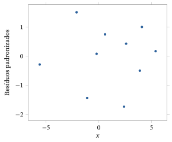
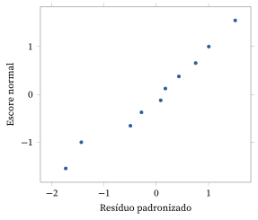
O que fazemos se a verificação do modelo levar a uma falha do modelo? Como discutido no Capítulo 9, talvez a abordagem mais comum seja considerar várias transformações dos dados para ver se há uma modificação simples do modelo que passe na verificação. Podemos fazer transformações não só na variável resposta \(Y\), mas também na variável preditora \(X\).
Uma Aplicação da Análise de Regressão Linear Simples
O conjunto de dados a seguir foi extraído de Statistical Methods, 6ª ed., de G. Snedecor e W. Cochran (Iowa State University Press, Ames, 1967), e dá a velocidade recorde \(Y\), em milhas por hora, nas corridas de automóveis do Memorial Day de Indianapolis nos anos de 1911 a 1941, exceto 1917 e 1918. Codificamos o ano \(X\) começando em 0 em 1911 e aumentando 1 a cada ano. Há \(n = 29\) pontos de dados \((x_i, y_i)\). O objetivo da análise é obter a reta de mínimos quadrados e, se for o caso, fazer inferências sobre os coeficientes de regressão. Tomamos o modelo de regressão linear simples normal como nosso modelo estatístico. Observe que este é um estudo observacional67.
| Ano | Velocidade | Ano | Velocidade | Ano | Velocidade |
|---|---|---|---|---|---|
| 0 | 74,6 | 12 | 91,0 | 22 | 104,2 |
| 1 | 78,7 | 13 | 98,2 | 23 | 104,9 |
| 2 | 75,9 | 14 | 101,1 | 24 | 106,2 |
| 3 | 82,5 | 15 | 95,9 | 25 | 109,1 |
| 4 | 89,8 | 16 | 97,5 | 26 | 113,6 |
| 5 | 83,3 | 17 | 99,5 | 27 | 117,2 |
| 8 | 88,1 | 18 | 97,6 | 28 | 115,0 |
| 9 | 88,6 | 19 | 100,4 | 29 | 114,3 |
| 10 | 89,6 | 20 | 96,6 | 30 | 115,1 |
| 11 | 94,5 | 21 | 104,1 |
Usando o Teorema 10.3.1, obtemos a reta de mínimos quadrados \(y = 77{,}5681 + 1{,}27793x\). Essa reta, junto com um diagrama de dispersão dos valores \((x_i, y_i)\), está representada na Figura 10.3.4. O ajuste parece bem bom, mas isso não garante que o modelo esteja correto, e precisamos fazer alguma forma de verificação do modelo.
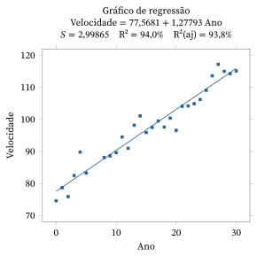
A Figura 10.3.5 é um gráfico dos resíduos padronizados contra o preditor. Esse gráfico parece razoável, sem nenhum padrão particularmente incomum aparente. A Figura 10.3.6 é um gráfico de probabilidade normal dos resíduos padronizados. A curvatura no centro pode levantar alguma dúvida sobre a suposição de normalidade. Geramos algumas amostras de tamanho \(n = 29\) de uma distribuição \(N(0, 1)\), porém, e olhar os seus gráficos de probabilidade normal (o que é sempre recomendado) revela que isso não é motivo de muita preocupação. É claro que também deveríamos aplicar procedimentos de verificação do modelo baseados nos resíduos padronizados e usando valores-p, mas não vamos avançar nesse tema aqui.
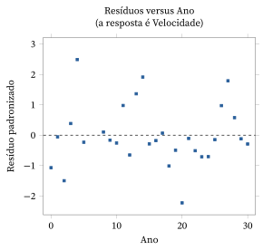
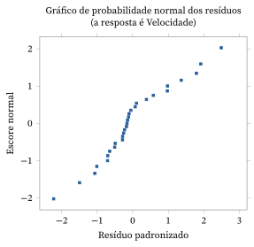
Com base nos resultados da verificação do modelo, decidimos passar às inferências sobre os coeficientes de regressão. As estimativas e seus erros padrão estão na tabela a seguir, em que usamos a estimativa de \(\sigma^2\) dada por \(s^2 = (2{,}999)^2\) para calcular os erros padrão. Registramos também as estatísticas \(t\) adequadas para testar cada uma das hipóteses \(H_0 : \beta_1 = 0\) e \(H_0 : \beta_2 = 0\).
| Coeficiente | Estimativa | Erro padrão | Estatística \(t\) |
|---|---|---|---|
| \(\beta_1\) | 77,568 | 1,118 | 69,39 |
| \(\beta_2\) | 1,278 | 0,062 | 20,55 |
Com isso, vemos que o valor-p para avaliar \(H_0 : \beta_2 = 0\) é dado por \[ P(\lvert T \rvert \ge 20{,}55) = 0{,}000, \] quando \(T \sim t(27)\), de modo que temos forte evidência contra \(H_0\). Parece claro que há uma forte relação positiva entre \(Y\) e \(X\). Como o ponto 0,975 da distribuição \(t(27)\) é igual a \(2{,}0518\), um intervalo de confiança 0,95 para \(\beta_2\) é dado por \[ 1{,}278 \pm (0{,}062)\,2{,}0518 = [1{,}1508;\ 1{,}4052]. \]
A decomposição ANOVA está na tabela a seguir.
| Fonte | GL | Soma de Quadrados | Quadrado Médio |
|---|---|---|---|
| Regressão | 1 | 3797,0 | 3797,0 |
| Erro | 27 | 242,8 | 9,0 |
| Total | 28 | 4039,8 |
Assim, temos \(F = 3797{,}0/9{,}0 = 421{,}888\) e, como \(F \sim F(1, 27)\) quando \(H_0 : \beta_2 = 0\) é verdadeira, \(P(F > 421{,}888) = 0{,}000\), o que simplesmente confirma (como tinha de ser) o que obtivemos com o teste \(t\) anterior.
O coeficiente de determinação é dado por \(R^2 = 3797{,}0/4039{,}8 = 0{,}94\). Portanto, 94% da variação observada na variável resposta podem ser explicados pelas mudanças no preditor por meio da regressão linear simples. O valor de \(R^2\) indica que o modelo ajustado será um excelente preditor de valores futuros, desde que o valor de \(X\) em que queremos predizer esteja na faixa (ou perto dela) dos valores de \(X\) usados para ajustar o modelo.
10.3.3 Modelo Linear Simples Bayesiano (Avançado)
Para a formulação bayesiana do modelo de regressão linear simples com erro normal, precisamos acrescentar uma distribuição a priori para os parâmetros desconhecidos do modelo, a saber, \(\beta_1\), \(\beta_2\) e \(\sigma^2\). Há muitas escolhas possíveis para isso. A priori adequada depende da aplicação.
Para ajudar a simplificar os cálculos, reparametrizamos o modelo da seguinte forma. Sejam \(\alpha_1 = \beta_1 + \beta_2\bar{x}\) e \(\alpha_2 = \beta_2\). É então fácil mostrar (ver Problema 10.3.24) que \begin{align} \sum_{i=1}^{n} (y_i - \beta_1 - \beta_2 x_i)^2 &= \sum_{i=1}^{n} (y_i - \alpha_1 - \alpha_2(x_i - \bar{x}))^2 \notag\\ &= \sum_{i=1}^{n} ((y_i - \bar{y}) - (\alpha_1 - \bar{y}) - \alpha_2(x_i - \bar{x}))^2 \notag\\ &= \sum_{i=1}^{n} (y_i - \bar{y})^2 + n(\alpha_1 - \bar{y})^2 + \alpha_2^2 \sum_{i=1}^{n} (x_i - \bar{x})^2 \notag\\ &\qquad - 2\alpha_2 \sum_{i=1}^{n} (x_i - \bar{x})(y_i - \bar{y}). \tag{10.3.12} \end{align}
A função de verossimilhança, usando essa reparametrização, é então igual a \[ \left(2\pi\sigma^2\right)^{-n/2} \exp\left(-\frac{1}{2\sigma^2} \sum_{i=1}^{n} (y_i - \alpha_1 - \alpha_2(x_i - \bar{x}))^2\right). \] Por (10.3.12), e tomando \begin{align*} c_x^2 &= \sum_{i=1}^{n} (x_i - \bar{x})^2, \\ c_y^2 &= \sum_{i=1}^{n} (y_i - \bar{y})^2, \\ c_{xy} &= \sum_{i=1}^{n} (x_i - \bar{x})(y_i - \bar{y}), \end{align*} podemos escrevê-la como \begin{align*} &\left(2\pi\sigma^2\right)^{-n/2} \exp\left(-\frac{c_y^2}{2\sigma^2}\right) \exp\left(-\frac{n}{2\sigma^2}(\alpha_1 - \bar{y})^2\right) \\ &\qquad \times \exp\left(-\frac{1}{2\sigma^2}\left\{\alpha_2^2 c_x^2 - 2\alpha_2 c_{xy}\right\}\right) \\ &= \left(2\pi\sigma^2\right)^{-n/2} \exp\left(-\frac{c_y^2 - c_x^2 a^2}{2\sigma^2}\right) \exp\left(-\frac{n}{2\sigma^2}(\alpha_1 - \bar{y})^2\right) \\ &\qquad \times \exp\left(-\frac{c_x^2}{2\sigma^2}(\alpha_2 - a)^2\right), \end{align*} em que a última igualdade decorre de \(\alpha_2^2 c_x^2 - 2\alpha_2 c_{xy}\) \({}= c_x^2(\alpha_2 - a)^2 - c_x^2 a^2\), com \(a = c_{xy}/c_x^2\).
Isso implica que, sempre que a distribuição a priori de \((\alpha_1, \alpha_2)\) for tal que \(\alpha_1\) e \(\alpha_2\) sejam independentes dado \(\sigma^2\), as distribuições a posteriori de \(\alpha_1\) e \(\alpha_2\) também serão independentes dado \(\sigma^2\). Observe também que \(\bar{y}\) e \(a\) são as estimativas de mínimos quadrados (e também os EMVs) de \(\alpha_1\) e \(\alpha_2\), respectivamente (ver Problema 10.3.24).
Suponha agora que tomemos como a priori \begin{align*} \alpha_1 \mid \alpha_2, \sigma^2 &\sim N(\mu_1, \tau_1^2\sigma^2), \\ \alpha_2 \mid \sigma^2 &\sim N(\mu_2, \tau_2^2\sigma^2), \\ 1/\sigma^2 &\sim \text{Gama}(\kappa, \nu). \end{align*} Observe que \(\alpha_1\) e \(\alpha_2\) são independentes dado \(\sigma^2\).
Acontece que essa a priori é conjugada, de modo que podemos determinar facilmente uma forma exata para a distribuição a posteriori (ver Problema 10.3.25). A distribuição a posteriori conjunta de \((\alpha_1, \alpha_2, 1/\sigma^2)\) é dada por \begin{align*} \alpha_1 \mid \alpha_2, \sigma^2 &\sim N\left(\left(n + \frac{1}{\tau_1^2}\right)^{-1}\left(n\bar{y} + \frac{\mu_1}{\tau_1^2}\right), \left(n + \frac{1}{\tau_1^2}\right)^{-1}\sigma^2\right), \\ \alpha_2 \mid \sigma^2 &\sim N\left(\left(c_x^2 + \frac{1}{\tau_2^2}\right)^{-1}\left(c_x^2 a + \frac{\mu_2}{\tau_2^2}\right), \left(c_x^2 + \frac{1}{\tau_2^2}\right)^{-1}\sigma^2\right), \\ \frac{1}{\sigma^2} &\sim \text{Gama}\left(\kappa + \frac{n}{2}, \nu_{xy}\right), \end{align*} em que \[ \nu_{xy} = \frac{1}{2}\left\{ \begin{gathered} c_y^2 - c_x^2 a^2 + \left[n\bar{y}^2 + \tfrac{\mu_1^2}{\tau_1^2} - \left(n + \tfrac{1}{\tau_1^2}\right)^{-1}\left(n\bar{y} + \tfrac{\mu_1}{\tau_1^2}\right)^2\right] \\ + \left[c_x^2 a^2 + \tfrac{\mu_2^2}{\tau_2^2} - \left(c_x^2 + \tfrac{1}{\tau_2^2}\right)^{-1}\left(c_x^2 a + \tfrac{\mu_2}{\tau_2^2}\right)^2\right] \end{gathered} \right\} + \nu. \]
É claro que precisamos escolher os valores dos hiperparâmetros \(\mu_1\), \(\tau_1\), \(\mu_2\), \(\tau_2\), \(\kappa\) e \(\nu\) para especificar completamente a a priori.
Observe agora que, para uma análise difusa, isto é, quando temos pouca ou nenhuma informação a priori sobre os parâmetros, fazemos \(\tau_1 \to \infty\), \(\tau_2 \to \infty\) e \(\nu \to 0\), e a distribuição a posteriori converge para \begin{align*} \alpha_1 \mid \alpha_2, \sigma^2 &\sim N(\bar{y}, \sigma^2/n), \\ \alpha_2 \mid \sigma^2 &\sim N(a, \sigma^2/c_x^2), \\ 1/\sigma^2 &\sim \text{Gama}(\kappa + n/2, \nu_{xy}), \end{align*} em que \(\nu_{xy} = (1/2)\{c_y^2 - c_x^2 a^2\}\). Mas isso ainda nos deixa com a necessidade de escolher o hiperparâmetro68 \(\kappa\). Veremos, porém, que essa escolha tem apenas um efeito pequeno sobre a análise quando \(n\) não é pequeno demais.
Podemos obter facilmente a distribuição a posteriori marginal dos \(\alpha_i\). Por exemplo, no caso difuso, a densidade a posteriori marginal de \(\alpha_2\) é proporcional a \begin{align*} &\int_0^\infty \left(\frac{1}{\sigma^2}\right)^{1/2} \exp\left\{-\frac{c_x^2}{2\sigma^2}(\alpha_2 - a)^2\right\} \left(\frac{1}{\sigma^2}\right)^{\kappa + (n/2) - 1} \exp\left\{-\frac{\nu_{xy}}{\sigma^2}\right\} d\left(\frac{1}{\sigma^2}\right) \\ &= \int_0^\infty \left(\frac{1}{\sigma^2}\right)^{\kappa + (n/2) - (1/2)} \exp\left\{-\left(\nu_{xy} + \frac{c_x^2}{2}(\alpha_2 - a)^2\right)\frac{1}{\sigma^2}\right\} d\left(\frac{1}{\sigma^2}\right). \end{align*} Fazendo a mudança de variável69 \(1/\sigma^2 \to w\), em que \[ w = \left(\nu_{xy} + \frac{c_x^2}{2}(\alpha_2 - a)^2\right)\frac{1}{\sigma^2} \] na integral anterior, vemos que a densidade a posteriori marginal de \(\alpha_2\) é proporcional a \[ \left(1 + \frac{c_x^2}{2\nu_{xy}}(\alpha_2 - a)^2\right)^{-(\kappa + (n+1)/2)} \int_0^\infty w^{\kappa + (n/2) - (1/2)} \exp\{-w\}\, dw, \] que é proporcional a \[ \left(1 + \frac{c_x^2}{2\nu_{xy}}(\alpha_2 - a)^2\right)^{-(2\kappa + n + 1)/2}. \] Isso estabelece (ver Problema 4.6.17) que a distribuição a posteriori de \(\alpha_2\) é especificada por \[ \sqrt{2\kappa + n}\, \frac{\alpha_2 - a}{\sqrt{2\nu_{xy}/c_x^2}} \sim t(2\kappa + n). \] Assim, um intervalo HPD \(\gamma\) (de maior densidade a posteriori70) para \(\alpha_2\) é dado por \[ a \pm \frac{1}{\sqrt{2\kappa + n}} \sqrt{\frac{2\nu_{xy}}{c_x^2}}\, t_{(1+\gamma)/2}(2\kappa + n). \] Observe que esses intervalos não mudam muito quando mudamos \(\kappa\), desde que \(n\) não seja pequeno demais.
Consideramos uma aplicação de uma análise bayesiana para esse modelo.
Os dados deste exemplo foram tirados de An Introduction to Bayesian Inference in Econometrics, de A. Zellner (Wiley Classics, Nova York, 1996). A variável resposta \(Y\) é a renda per capita em dólares americanos (deflacionada), e a variável preditora \(X\) é o investimento per capita em dólares (deflacionado), para os Estados Unidos nos anos de 1922 a 1941. Os dados estão na tabela a seguir.
| Ano | Renda | Investimento | Ano | Renda | Investimento |
|---|---|---|---|---|---|
| 1922 | 433 | 39 | 1932 | 372 | 22 |
| 1923 | 483 | 60 | 1933 | 381 | 17 |
| 1924 | 479 | 42 | 1934 | 419 | 27 |
| 1925 | 486 | 52 | 1935 | 449 | 33 |
| 1926 | 494 | 47 | 1936 | 511 | 48 |
| 1927 | 498 | 51 | 1937 | 520 | 51 |
| 1928 | 511 | 45 | 1938 | 477 | 33 |
| 1929 | 534 | 60 | 1939 | 517 | 46 |
| 1930 | 478 | 39 | 1940 | 548 | 54 |
| 1931 | 440 | 41 | 1941 | 629 | 100 |
Na Figura 10.3.7, apresentamos um gráfico de probabilidade normal dos resíduos padronizados, obtidos por um ajuste de mínimos quadrados. Na Figura 10.3.8, apresentamos um gráfico dos resíduos padronizados contra o preditor. Os dois gráficos indicam que as suposições do modelo são razoáveis.
Suponha agora que analisemos esses dados usando a priori difusa limite com \(\kappa = 2\). Aqui, temos \(\bar{y} = 483\), \(c_y^2 = 64.993\), \(c_x^2 = 5.710{,}55\) e \(c_{xy} = 17.408{,}3\), de modo que \(a = 17.408{,}3/5.710{,}55 = 3{,}05\) e \(\nu_{xy} = (64.993 - 17.408{,}3)/2\) \({}= 23.792{,}35\).71 A distribuição a posteriori é então dada por \begin{align*} \alpha_1 \mid \alpha_2, \sigma^2 &\sim N(483, \sigma^2/20), \\ \alpha_2 \mid \sigma^2 &\sim N(3{,}05; \sigma^2/5.710{,}55), \\ 1/\sigma^2 &\sim \text{Gama}(12; 23.792{,}35). \end{align*}
O interesse principal aqui está no multiplicador de investimento \(\alpha_2\). Pelos resultados acima, um intervalo HPD 0,95 para \(\alpha_2\), usando \(t_{0{,}975}(24) = 2{,}0639\), é dado por72 \begin{align*} &a \pm \frac{1}{\sqrt{2\kappa + n}} \sqrt{\frac{2\nu_{xy}}{r_x^2}}\, t_{(1+\gamma)/2}(2\kappa + n - 1) \\ &= 3{,}05 \pm \frac{1}{\sqrt{24}} \sqrt{\frac{2 \cdot 23.792{,}35}{5.710{,}55}}\, t_{0{,}975}(24) = 3{,}05 \pm (0{,}589)\, 2{,}0639 \\ &= (1{,}834; 4{,}266). \end{align*}
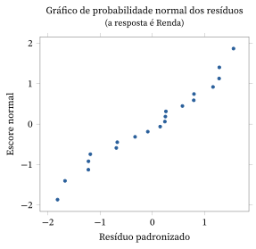
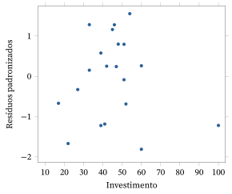
10.3.4 O Modelo de Regressão Linear Múltipla (Avançado)
Consideramos agora a situação em que temos uma resposta quantitativa \(Y\) e preditores quantitativos \(X_1, \ldots, X_k\). No modelo de regressão, supomos que as distribuições condicionais de \(Y\), dados os preditores, têm forma constante e que mudam, à medida que os preditores mudam, no máximo por meio da média condicional \(E\left(Y \mid X_1 = x_1, \ldots, X_k = x_k\right)\). No modelo de regressão linear, supomos que essa média condicional é da forma \begin{equation} E\left(Y \mid X_1 = x_1, \ldots, X_k = x_k\right) = \beta_1 x_1 + \cdots + \beta_k x_k. \tag{10.3.13} \end{equation} Ela é linear nos \(\beta_i \in R^1\) desconhecidos, para \(i = 1, \ldots, k\).
Vamos desenvolver aqui apenas as linhas gerais da análise do modelo de regressão linear múltipla. Todos os resultados serão enunciados sem demonstração. As demonstrações podem ser encontradas em textos mais avançados. É importante notar, porém, que todos esses resultados são apenas análogos dos resultados que desenvolvemos por métodos elementares na Seção 10.3.2 para o modelo de regressão linear simples.
Formulação Matricial do Problema de Mínimos Quadrados
Para a análise do modelo de regressão linear múltipla, precisamos de alguns conceitos de matrizes. Vamos discutir brevemente alguns deles aqui, mas veja também o Apêndice A.4.
Seja \(A \in R^{m \times n}\) um arranjo retangular de números com \(m\) linhas e \(n\) colunas, e seja \(a_{ij}\) o elemento da \(i\)-ésima linha e da \(j\)-ésima coluna (chamado de elemento \((i, j)\) de \(A\)). Por exemplo, \[ A = \begin{pmatrix} 1{,}2 & 1{,}0 & 0{,}0 \\ 3{,}2 & 0{,}2 & 6{,}3 \end{pmatrix} \in R^{2 \times 3} \] denota uma matriz \(2 \times 3\) e, por exemplo, \(a_{22} = 0{,}2\).
Podemos somar duas matrizes de mesmas dimensões \(m\) e \(n\) simplesmente somando seus elementos posição a posição. Assim, se \(A, B \in R^{m \times n}\) e \(C = A + B\), então \(c_{ij} = a_{ij} + b_{ij}\). Além disso, podemos multiplicar uma matriz por um número real \(c\) simplesmente multiplicando cada elemento da matriz por \(c\). Assim, se \(A \in R^{m \times n}\), então \(B = cA \in R^{m \times n}\) e \(b_{ij} = c a_{ij}\). Às vezes vamos escrever uma matriz \(A \in R^{m \times n}\) em termos de suas colunas como \(A = \begin{pmatrix} a_1 & \ldots & a_n \end{pmatrix}\), de modo que aqui \(a_i \in R^m\). Por fim, se \(A \in R^{m \times n}\) e \(b \in R^n\), definimos o produto de \(A\) por \(b\) como \(Ab = b_1 a_1 + \cdots + b_n a_n \in R^m\).
Suponha agora que \(Y \in R^n\) e que \(E(Y)\) esteja restrito a um conjunto da forma \[ S = \left\{\beta_1 \upsilon_1 + \cdots + \beta_k \upsilon_k : \beta_i \in R^1, i = 1, \ldots, k\right\}, \] em que \(\upsilon_1, \ldots, \upsilon_k\) são vetores fixos de \(R^n\). Um conjunto como \(S\) é chamado de subespaço linear de \(R^n\). Quando \(\{\upsilon_1, \ldots, \upsilon_k\}\) tem a propriedade de independência linear, isto é, \[ \beta_1 \upsilon_1 + \cdots + \beta_k \upsilon_k = 0 \] se e somente se \(\beta_1 = \cdots = \beta_k = 0\), dizemos que \(S\) tem dimensão \(k\) e que \(\{\upsilon_1, \ldots, \upsilon_k\}\) é uma base de \(S\).
Se fizermos \[ V = (\upsilon_1 \cdots \upsilon_k) = \begin{pmatrix} \upsilon_{11} & \upsilon_{12} & \cdots & \upsilon_{1k} \\ \upsilon_{21} & \upsilon_{22} & \cdots & \upsilon_{2k} \\ \vdots & \vdots & & \vdots \\ \upsilon_{n1} & \upsilon_{n2} & \cdots & \upsilon_{nk} \end{pmatrix} \in R^{n \times k}, \] então podemos escrever \[ E(Y) = \beta_1 \upsilon_1 + \cdots + \beta_k \upsilon_k = \begin{pmatrix} \beta_1 \upsilon_{11} + \beta_2 \upsilon_{12} + \cdots + \beta_k \upsilon_{1k} \\ \beta_1 \upsilon_{21} + \beta_2 \upsilon_{22} + \cdots + \beta_k \upsilon_{2k} \\ \vdots \\ \beta_1 \upsilon_{n1} + \beta_2 \upsilon_{n2} + \cdots + \beta_k \upsilon_{nk} \end{pmatrix} = V\beta \] para algum ponto desconhecido \(\beta = (\beta_1, \beta_2, \ldots, \beta_k)'\). Quando observamos \(y \in R^n\), a estimativa de mínimos quadrados de \(E(Y)\) é obtida encontrando o valor de \(\beta\) que minimiza \[ \sum_{i=1}^{n} \left(y_i - \beta_1 \upsilon_{i1} - \beta_2 \upsilon_{i2} - \cdots - \beta_k \upsilon_{ik}\right)^2. \]
Pode-se provar que existe um único valor minimizador de \(\beta \in R^k\) sempre que \(\{\upsilon_1, \ldots, \upsilon_k\}\) é uma base. O valor minimizador de \(\beta\) será denotado por \(b\) e é chamado de estimativa de mínimos quadrados de \(\beta\). O ponto \(b_1 \upsilon_1\) \({}+ \cdots + b_k \upsilon_k\) \({}= Vb\) é a estimativa de mínimos quadrados de \(E(Y)\) e às vezes é chamado de vetor de valores ajustados. O ponto \(y - Vb\) é chamado de vetor de resíduos.
Vejamos agora como calcular \(b\). Para isso, precisamos entender o que significa multiplicar a matriz \(A \in R^{m \times k}\) à direita pela matriz \(B \in R^{k \times n}\). O produto de matrizes \(AB\) é definido como a matriz \(m \times n\) cujo elemento \((i, j)\) é dado por \[ \sum_{l=1}^{k} a_{il} b_{lj}. \] Note que o arranjo \(A\) precisa ter o mesmo número de colunas que o número de linhas de \(B\) para que esse produto esteja definido. A transposta de uma matriz \(A \in R^{m \times k}\) é definida como \[ A' = \begin{pmatrix} a_{11} & \cdots & a_{m1} \\ \vdots & & \vdots \\ a_{1k} & \cdots & a_{mk} \end{pmatrix} \in R^{k \times m}, \] isto é, a \(i\)-ésima coluna de \(A\) se torna a \(i\)-ésima linha de \(A'\). Para uma matriz \(A \in R^{k \times k}\), a matriz inversa de \(A\) é definida como a matriz \(A^{-1}\) tal que \[ AA^{-1} = A^{-1}A = I, \] em que \(I \in R^{k \times k}\) tem 1 em toda a diagonal e 0 em todas as outras posições; ela é chamada de matriz identidade \(k \times k\). Nem sempre \(A \in R^{k \times k}\) tem inversa, mas, quando tem, pode-se mostrar que a inversa é única. Note que há muitos pacotes de software matemático e estatístico com recursos para calcular produtos, transpostas e inversas de matrizes.
Temos o seguinte resultado fundamental.
Se \(E(Y) \in S = \left\{\beta_1 \upsilon_1 + \cdots + \beta_k \upsilon_k : \beta_i \in R^1, i = 1, \ldots, k\right\}\) e as colunas de \(V = (\upsilon_1 \cdots \upsilon_k)\) têm a propriedade de independência linear, então \(\left(V'V\right)^{-1}\) existe, a estimativa de mínimos quadrados de \(\beta\) é única e é dada por \begin{equation} b = \begin{pmatrix} b_1 \\ \vdots \\ b_k \end{pmatrix} = \left(V'V\right)^{-1} V'y. \tag{10.3.14} \end{equation}
Estimativas de Mínimos Quadrados, Predições e Erros Padrão
Para o modelo de regressão linear (10.3.13), temos (escrevendo \(X_{ij}\) para o \(j\)-ésimo valor de \(X_i\)) \begin{align*} E\left(\left. \begin{pmatrix} Y_1 \\ \vdots \\ Y_n \end{pmatrix} \,\right|\, X_{ij} = x_{ij} \text{ para todo } i, j\right) &= \begin{pmatrix} \beta_1 x_{11} + \cdots + \beta_k x_{1k} \\ \vdots \\ \beta_1 x_{n1} + \cdots + \beta_k x_{nk} \end{pmatrix} \\ &= \beta_1 \upsilon_1 + \cdots + \beta_k \upsilon_k = V\beta, \end{align*} em que \(\beta = (\beta_1, \ldots, \beta_k)'\) e \[ V = \begin{pmatrix} \upsilon_1 & \upsilon_2 & \ldots & \upsilon_k \end{pmatrix} = \begin{pmatrix} x_{11} & \cdots & x_{1k} \\ \vdots & & \vdots \\ x_{n1} & \cdots & x_{nk} \end{pmatrix} \in R^{n \times k}. \] Vamos supor, daqui em diante, que as colunas \(\upsilon_1, \ldots, \upsilon_k\) de \(V\) têm a propriedade de independência linear. Então (trocando a esperança pela esperança condicional73) segue imediatamente que a estimativa de mínimos quadrados de \(\beta\) é dada por (10.3.14).
Como no modelo de regressão linear simples, temos vários resultados sobre as estimativas de mínimos quadrados. Nós os enunciamos aqui sem demonstração.
Se os \((x_{i1}, \ldots, x_{ik}, y_i)\) são observações independentes para \(i = 1, \ldots, n\) e o modelo de regressão linear se aplica, então \[ E\left(B_i \mid X_{ij} = x_{ij} \text{ para todo } i, j\right) = \beta_i \] para \(i = 1, \ldots, k\).
Assim, o Teorema 10.3.8 afirma que as estimativas de mínimos quadrados são estimativas não viesadas dos coeficientes da regressão linear.
Se quisermos avaliar a precisão dessas estimativas, precisamos ser capazes de calcular seus erros padrão.
Se os \((x_{i1}, \ldots, x_{ik}, y_i)\) são observações independentes para \(i = 1, \ldots, n\), vindas do modelo de regressão linear, e se \(\Var\left(Y \mid X_1 = x_1, \ldots, X_k = x_k\right)\) \({}= \sigma^2\) para todos os \(x_1, \ldots, x_k\), então \begin{equation} \Cov\left(B_i, B_j \mid X_{ij} = x_{ij} \text{ para todo } i, j\right) = \sigma^2 c_{ij}, \tag{10.3.15} \end{equation} em que \(c_{ij}\) é o elemento \((i, j)\) da matriz \((V'V)^{-1}\).
Temos o seguinte resultado sobre a estimação74 da média75 \[ E\left(Y \mid X_1 = x_1, \ldots, X_k\right) = x_k = \beta_1 x_1 + \cdots + \beta_k x_k \] pela estimativa \(b_1 x_1 + \cdots + b_k x_k\).
\begin{align} &\Var\left(B_1 x_1 + \cdots + B_k x_k \mid X_{ij} = x_{ij} \text{ para todo } i, j\right) \notag \\ &\qquad = \sigma^2 \Bigl(\sum_{i=1}^{k} x_i^2 c_{ii} + 2 \sum_{i<j} x_i x_j c_{ij}\Bigr) = \sigma^2 x'(V'V)^{-1} x, \tag{10.3.16} \end{align} em que \(x = (x_1, \ldots, x_k)\).
Também usamos \(b_1 x_1 + \cdots + b_k x_k = b'x\) como predição de um novo valor da resposta quando \(X_1 = x_1, \ldots, X_k = x_k\).
Vemos, pelo Teorema 10.3.9 e pelo Corolário 10.3.4, que precisamos de uma estimativa de \(\sigma^2\) para calcular os erros padrão. A estimativa é dada por76 \begin{equation} s^2 = \frac{1}{n-k} \sum_{i=1}^{n} \left(y_i - b_1 x_{i1} - \cdots - b_k x_{ik}\right)^2 = \frac{1}{n-k} (y - Xb)'(y - Xb), \tag{10.3.17} \end{equation} e temos o seguinte resultado.
Se os \((x_{i1}, \ldots, x_{ik}, y_i)\) são observações independentes para \(i = 1, \ldots, n\), vindas do modelo de regressão linear, e se \(\Var\left(Y \mid X_1 = x_1, \ldots, X_k = x_k\right)\) \({}= \sigma^2\), então \[ E\left(S^2 \mid X_{ij} = x_{ij} \text{ para todo } i, j\right) = \sigma^2. \]
Combinando (10.3.15) e (10.3.17), deduzimos que o erro padrão de \(b_i\) é \(s\sqrt{c_{ii}}\). Combinando (10.3.16) e (10.3.17), deduzimos que o erro padrão de \(b_1 x_1 + \cdots + b_k x_k\) é \[ s \Bigl(\sum_{i=1}^{k} x_i^2 c_{ii} + 2 \sum_{i<j} x_i x_j c_{ij}\Bigr)^{1/2} = s\left(x'(V'V)^{-1} x\right)^{1/2}. \]
A Decomposição ANOVA e as Estatísticas \(F\)
Quando um dos preditores \(X_1, \ldots, X_k\) é constante, dizemos que o modelo tem um termo de intercepto. Por convenção, vamos sempre tomá-lo como o primeiro preditor. Assim, quando queremos que o modelo tenha um termo de intercepto, tomamos \(X_1 \equiv 1\), e \(\beta_1\) é o intercepto, como no modelo de regressão linear simples. Note que é comum denotar o termo de intercepto por \(\beta_0\), de modo que \(X_0 \equiv 1\) e \(X_1, \ldots, X_k\) denotam os preditores que de fato variam. Também vamos adotar essa convenção quando parecer apropriado.
Basicamente, a inclusão de um termo de intercepto é muito comum, pois ela diz que, quando os preditores que de fato variam não têm relação com a resposta \(Y\), o intercepto é a média desconhecida da resposta. Quando não incluímos um intercepto, isso diz que sabemos que a resposta média é 0 quando não há relação entre \(Y\) e os preditores não constantes. A menos que haja evidência substantiva, baseada na aplicação, que apoie isso, em geral não vamos querer fazer essa suposição.
Denotando o termo de intercepto por \(\beta_1\), de modo que \(X_1 \equiv 1\), temos a seguinte decomposição ANOVA para esse modelo, que mostra como isolar a variação observada em \(Y\) que pode ser explicada por mudanças nos preditores não constantes.
Se, para \(i = 1, \ldots, n\), os valores \((x_{i1}, \ldots, x_{ik}, y_i)\) são tais que a matriz \(V\) tem colunas linearmente independentes, com \(\upsilon_1\) igual a uma coluna de uns, então \(b_1 = \bar{y} - b_2 \bar{x}_2 - \cdots - b_k \bar{x}_k\) e \begin{align*} \sum_{i=1}^{n} (y_i - \bar{y})^2 &= \sum_{i=1}^{n} \left(b_2 (x_{i2} - \bar{x}_2) + \cdots + b_k (x_{ik} - \bar{x}_k)\right)^2 \\ &\quad + \sum_{i=1}^{n} \left(y_i - b_1 x_{i1} - \cdots - b_k x_{ik}\right)^2. \end{align*}
Chamamos \[ \mathrm{RSS}(X_2, \ldots, X_k) = \sum_{i=1}^{n} \left(b_2 (x_{i2} - \bar{x}_2) + \cdots + b_k (x_{ik} - \bar{x}_k)\right)^2 \] de soma de quadrados da regressão e \[ \mathrm{ESS} = \sum_{i=1}^{n} \left(y_i - b_1 x_{i1} - \cdots - b_k x_{ik}\right)^2 \] de soma de quadrados dos erros. Isso leva à seguinte tabela ANOVA.
| Fonte | GL | Soma de Quadrados | Quadrado Médio |
|---|---|---|---|
| \(X_2, \ldots, X_k\) | \(k - 1\) | \(\mathrm{RSS}(X_2, \ldots, X_k)\) | \(\mathrm{RSS}(X_2, \ldots, X_k)/(k-1)\) |
| Erro | \(n - k\) | \(\mathrm{ESS}\) | \(s^2\) |
| Total | \(n - 1\) | \(\sum_{i=1}^{n} (y_i - \bar{y})^2\) |
Quando há um termo de intercepto, a hipótese nula de ausência de relação entre a resposta e os preditores equivale a \(H_0 : \beta_2 = \cdots = \beta_k = 0\). Como no modelo de regressão linear simples, pode-se mostrar que o quadrado médio da regressão é um estimador não viesado de \(\sigma^2\) se e somente se a hipótese nula é verdadeira. Portanto, uma estatística sensata para avaliar a hipótese nula é a estatística \(F\) \[ F = \frac{\mathrm{RSS}(X_2, \ldots, X_k)/(k-1)}{s^2}, \] em que valores grandes são evidência contra a hipótese nula.
Muitas vezes, queremos avaliar a hipótese nula \(H_0 : \beta_{l+1} = \cdots = \beta_k = 0\) ou, equivalentemente, a hipótese de que o modelo é dado por \[ E\left(Y \mid X_1 = x_1, \ldots, X_k = x_k\right) = \beta_1 x_1 + \cdots + \beta_l x_l, \] em que \(l < k\). Essa hipótese diz que os últimos \(k - l\) preditores, \(X_{l+1}, \ldots, X_k\), não têm relação com a resposta.
Se denotarmos por \(b_1^*, \ldots, b_l^*\) as estimativas de mínimos quadrados de \(\beta_1, \ldots, \beta_l\) obtidas ajustando o modelo menor, temos o seguinte resultado.
Se os \((x_{i1}, \ldots, x_{ik}, y_i)\), para \(i = 1, \ldots, n\), são valores para os quais a matriz \(V\) tem colunas linearmente independentes, com \(\upsilon_1\) igual a uma coluna de uns, então \begin{align} \mathrm{RSS}(X_2, \ldots, X_k) &= \sum_{i=1}^{n} \left(b_2 (x_{i2} - \bar{x}_2) + \cdots + b_k (x_{ik} - \bar{x}_k)\right)^2 \notag \\ &\ge \sum_{i=1}^{n} \left(b_2^* (x_{i2} - \bar{x}_2) + \cdots + b_l^* (x_{il} - \bar{x}_l)\right)^2 \notag \\ &= \mathrm{RSS}(X_2, \ldots, X_l). \tag{10.3.18} \end{align}
À direita da desigualdade em (10.3.18), temos a soma de quadrados da regressão obtida ajustando o modelo baseado nos primeiros \(l\) preditores. Portanto, podemos interpretar a diferença entre os lados esquerdo e direito de (10.3.18), isto é, \[ \mathrm{RSS}(X_{l+1}, \ldots, X_k \mid X_2, \ldots, X_l) = \mathrm{RSS}(X_2, \ldots, X_k) - \mathrm{RSS}(X_2, \ldots, X_l), \] como a contribuição dos preditores \(X_{l+1}, \ldots, X_k\) para a soma de quadrados da regressão quando os preditores \(X_1, \ldots, X_l\) estão no modelo. Obtemos a seguinte tabela ANOVA (na verdade, só as três primeiras colunas da tabela ANOVA) correspondente a essa decomposição da soma de quadrados total.
| Fonte | GL | Soma de Quadrados |
|---|---|---|
| \(X_2, \ldots, X_l\) | \(l - 1\) | \(\mathrm{RSS}(X_2, \ldots, X_l)\) |
| \(X_{l+1}, \ldots, X_k \mid X_2, \ldots, X_l\) | \(k - l\) | \(\mathrm{RSS}(X_{l+1}, \ldots, X_k \mid X_2, \ldots, X_l)\) |
| Erro | \(n - k\) | \(\mathrm{ESS}\) |
| Total | \(n - 1\) | \(\sum_{i=1}^{n} (y_i - \bar{y})^2\) |
Pode-se mostrar que a hipótese nula \(H_0 : \beta_{l+1} = \cdots = \beta_k = 0\) vale se e somente se \[ \mathrm{RSS}(X_{l+1}, \ldots, X_k \mid X_2, \ldots, X_l)/(k - l) \] é um estimador não viesado de \(\sigma^2\). Portanto, uma estatística sensata para avaliar essa hipótese nula é a estatística \(F\) \[ F = \frac{\mathrm{RSS}(X_{l+1}, \ldots, X_k \mid X_2, \ldots, X_l)/(k - l)}{s^2}, \] em que valores grandes são evidência contra a hipótese nula.
O Coeficiente de Determinação
O coeficiente de determinação desse modelo é dado por \[ R^2 = \frac{\mathrm{RSS}(X_2, \ldots, X_k)}{\sum_{i=1}^{n} (y_i - \bar{y})^2}, \] que, pelo Lema 10.3.2, está sempre entre 0 e 1. O valor de \(R^2\) dá a proporção da variação observada em \(Y\) que é explicada pela inclusão dos preditores não constantes no modelo.
Pode-se mostrar que \(R^2\) é o quadrado do coeficiente de correlação múltipla entre \(Y\) e \(X_1, \ldots, X_k\). No entanto, não discutimos o coeficiente de correlação múltipla neste texto.
Intervalos de Confiança e Testes de Hipóteses
Para a inferência, temos o seguinte resultado.
Se a distribuição condicional de \(Y\) dado \((X_1, \ldots, X_k) = (x_1, \ldots, x_k)\) é \(N(\beta_1 x_1 + \cdots + \beta_k x_k, \sigma^2)\) e se observamos os valores independentes \((x_{i1}, \ldots, x_{ik}, y_i)\) para \(i = 1, \ldots, n\), então as distribuições condicionais dos \(B_i\) e de \(S^2\), dados \(X_{ij} = x_{ij}\) para todo \(i, j\), são as seguintes. (i) \(B_i \sim N(\beta_i, \sigma^2 c_{ii})\)(ii) \(B_1 x_1 + \cdots + B_k x_k\) tem distribuição \[ N\Bigl(\beta_1 x_1 + \cdots + \beta_k x_k, \sigma^2 \Bigl(\sum_{i=1}^{k} x_i^2 c_{ii} + 2 \sum_{i<j} x_i x_j c_{ij}\Bigr)\Bigr) \](iii) \((n - k) S^2/\sigma^2 \sim \chi^2(n - k)\), independente de \((B_1, \ldots, B_k)\)
(i) \((B_i - \beta_i)/s c_{ii}^{1/2} \sim t(n - k)\)(ii) \[ \frac{B_1 x_1 + \cdots + B_k x_k - \beta_1 x_1 - \cdots - \beta_k x_k}{S \left(\sum_{i=1}^{k} x_i^2 c_{ii} + 2 \sum_{i<j} x_i x_j c_{ij}\right)^{1/2}} \sim t(n - k) \](iii) \(H_0 : \beta_{l+1} = \cdots = \beta_k = 0\) é verdadeira se e somente se \[ F = \frac{\left(\mathrm{RSS}(X_2, \ldots, X_k) - \mathrm{RSS}(X_2, \ldots, X_l)\right)/(k - l)}{S^2} \sim F(k - l, n - k) \]
Análise dos Resíduos
Numa aplicação do modelo de regressão múltipla, precisamos verificar se as suposições fazem sentido. A verificação do modelo se baseia nos resíduos \(y_i - b_1 x_{i1} - \cdots - b_k x_{ik}\) (depois de padronizados), exatamente como discutido na Seção 9.1. Note que o \(i\)-ésimo resíduo é simplesmente a diferença entre o valor observado \(y_i\) em \((x_{i1}, \ldots, x_{ik})\) e o valor predito \(b_1 x_{i1} + \cdots + b_k x_{ik}\) em \((x_{i1}, \ldots, x_{ik})\).
Temos também o seguinte resultado (que pode ser provado como corolário do Teorema 10.3.10).
(i) \(E\left(Y_i - B_1 x_{i1} - \cdots - B_k x_{ik} \mid V\right)\) \({}= 0\)(ii) \(\Cov\left(Y_i - B_1 x_{i1} - \cdots - B_k x_{ik}, Y_j - B_1 x_{j1} - \cdots - B_k x_{jk} \mid V\right)\) \({}= \sigma^2 d_{ij}\), em que \(d_{ij}\) é o elemento \((i, j)\) da matriz \(I - V(V'V)^{-1}V'\).
Portanto, os resíduos padronizados são dados por77 \begin{equation} \frac{y_j - b_1 x_{j1} - \cdots - b_k x_{jk}}{s d_{ii}^{1/2}}. \tag{10.3.19} \end{equation} Quando \(s\) é substituído por \(\sigma\) em (10.3.19), o Corolário 10.3.6 implica que essa quantidade tem média condicional 0 e variância condicional 1. Além disso, quando a distribuição condicional da resposta dados os preditores é normal, pode-se mostrar que a distribuição condicional dessa quantidade é \(N(0, 1)\). Esses resultados também valem aproximadamente para (10.3.19) quando \(n\) é grande. Além disso, pode-se mostrar que as covariâncias entre os resíduos padronizados tendem a 0 quando \(n \to \infty\), sob certas condições razoáveis sobre a distribuição das variáveis preditoras. Assim, uma abordagem para a verificação do modelo aqui é ver se os valores dados por (10.3.19) se parecem de algum modo com uma amostra da distribuição \(N(0, 1)\).
O que fazemos se a verificação do modelo leva a uma falha do modelo? Como no Capítulo 9, podemos considerar fazer várias transformações dos dados para ver se há uma modificação simples do modelo que passe na verificação. Podemos fazer transformações não só na variável resposta \(Y\), mas também nas variáveis preditoras \(X_1, \ldots, X_k\).
Uma Aplicação da Análise de Regressão Linear Múltipla
Os cálculos necessários para realizar uma análise de regressão linear múltipla não podem ser feitos à mão. Eles são demorados demais e muito sujeitos a erros. Por isso, é importante que o estatístico tenha à disposição um computador com software adequado quando fizer uma análise de regressão linear múltipla.
Os dados da Tabela 10.1 foram tirados de Statistical Theory and Methodology in Science and Engineering, 2ª ed., de K. A. Brownlee (John Wiley & Sons, Nova York, 1965). A variável resposta \(Y\) é a perda na chaminé (Loss), que representa 10 vezes a porcentagem de amônia perdida como óxido nítrico não absorvido. As variáveis preditoras são \(X_1 =\) fluxo de ar (Air), \(X_2 =\) temperatura da água de entrada (Temp) e \(X_3 =\) concentração de ácido nítrico (Acid). Também foi registrado o dia (Dia) em que a observação foi feita.
| Dia | Air | Temp | Acid | Loss | Dia | Air | Temp | Acid | Loss |
|---|---|---|---|---|---|---|---|---|---|
| 1 | 80 | 27 | 89 | 42 | 12 | 58 | 17 | 88 | 13 |
| 2 | 80 | 27 | 88 | 37 | 13 | 58 | 18 | 82 | 11 |
| 3 | 75 | 25 | 90 | 37 | 14 | 58 | 19 | 93 | 12 |
| 4 | 62 | 24 | 87 | 28 | 15 | 50 | 18 | 89 | 8 |
| 5 | 62 | 22 | 87 | 18 | 16 | 50 | 18 | 86 | 7 |
| 6 | 62 | 23 | 87 | 18 | 17 | 50 | 19 | 72 | 8 |
| 7 | 62 | 24 | 93 | 19 | 18 | 50 | 19 | 79 | 8 |
| 8 | 62 | 24 | 93 | 20 | 19 | 50 | 20 | 80 | 9 |
| 9 | 58 | 23 | 87 | 15 | 20 | 56 | 20 | 82 | 15 |
| 10 | 58 | 18 | 80 | 14 | 21 | 70 | 20 | 91 | 15 |
| 11 | 58 | 18 | 89 | 14 |
Consideramos o modelo \(Y \mid x_1, x_2, x_3 \sim N(\beta_0 + \beta_1 x_1 + \beta_2 x_2 + \beta_3 x_3, \sigma^2)\). Note que incluímos um termo de intercepto. A Figura 10.3.9 é um gráfico de probabilidade normal dos resíduos padronizados. Ele parece razoável, exceto por um resíduo, \(-2{,}63822\), que se afasta de modo bem nítido dos demais valores, que ficam perto da reta de 45 graus. Imprimindo os resíduos padronizados, vemos que esse resíduo está associado à observação do vigésimo primeiro dia. Talvez tenha havido algo de excepcional na operação desse dia, e por isso é razoável descartar esse dado e reajustar o modelo. A Figura 10.3.10 é um gráfico de probabilidade normal obtido ajustando o modelo às 20 primeiras observações. Ele parece um pouco melhor, mas ainda poderíamos nos preocupar com pelo menos um dos resíduos, que se afasta bastante da reta de 45 graus.
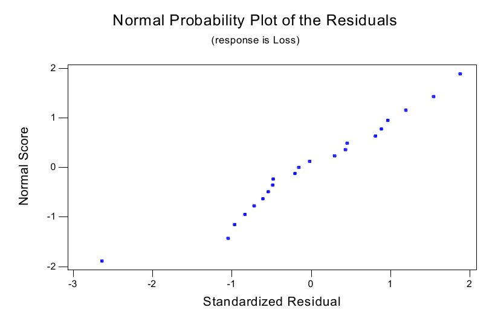
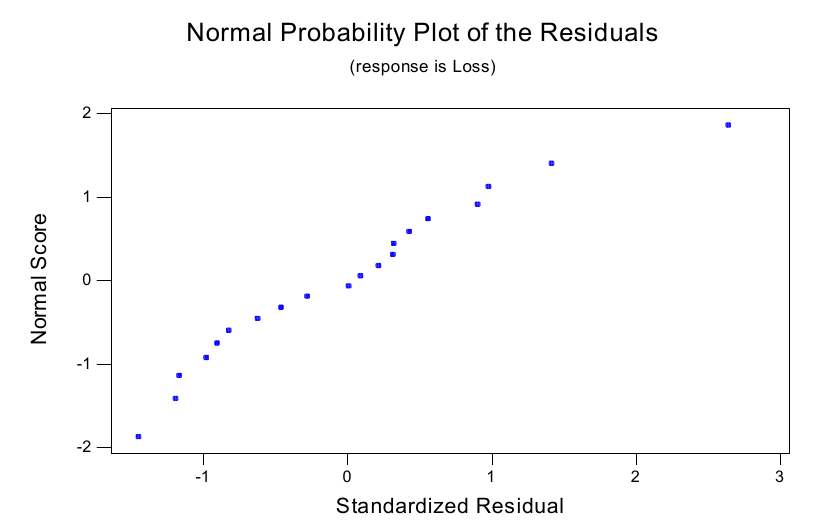
Seguindo a análise desses dados em Fitting Equations to Data, de C. Daniel e F. S. Wood (Wiley-Interscience, Nova York, 1971), consideramos em vez disso o modelo \begin{equation} \ln Y \mid x_1, x_2, x_3 \sim N(\beta_0 + \beta_1 x_1 + \beta_2 x_2 + \beta_3 x_3, \sigma^2), \tag{10.3.20} \end{equation} isto é, transformamos a variável resposta tomando seu logaritmo e usamos todos os dados. Muitas vezes, quando os modelos não se ajustam, transformações simples como essa podem levar a grandes melhorias. Neste caso, vemos um gráfico de probabilidade normal muito melhor, como mostra a Figura 10.3.11.
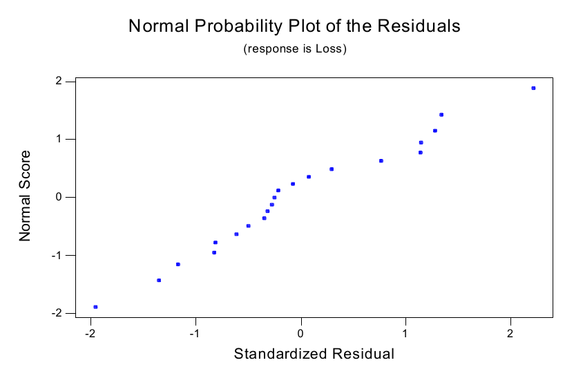
Também examinamos gráficos dos resíduos padronizados contra os diversos preditores, e eles pareceram razoáveis. A Figura 10.3.12 é um gráfico dos resíduos padronizados contra os valores de Air.
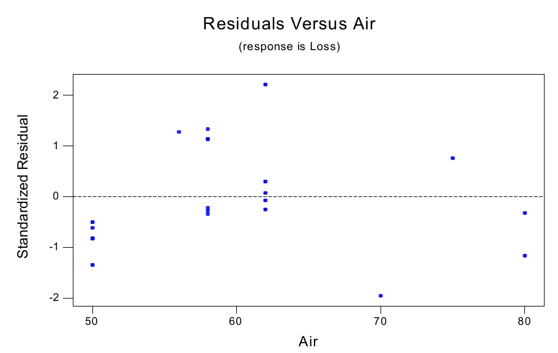
Agora que aceitamos o modelo (10.3.20), podemos passar às inferências sobre as incógnitas do modelo. As estimativas de mínimos quadrados dos \(\beta_i\), seus erros padrão (Se), as estatísticas \(t\) correspondentes para testar \(\beta_i = 0\) e os valores-p desses testes são dados na tabela a seguir.
| Coeficiente | Estimativa | Se | Estatística \(t\) | Valor-p |
|---|---|---|---|---|
| \(\beta_0\) | \(-0{,}948700\) | \(0{,}647700\) | \(-1{,}46\) | \(0{,}161\) |
| \(\beta_1\) | \(0{,}034565\) | \(0{,}007343\) | \(4{,}71\) | \(0{,}000\) |
| \(\beta_2\) | \(0{,}063460\) | \(0{,}020040\) | \(3{,}17\) | \(0{,}006\) |
| \(\beta_3\) | \(0{,}002864\) | \(0{,}008510\) | \(0{,}34\) | \(0{,}742\) |
A estimativa de \(\sigma^2\) é dada por \(s^2 = 0{,}0312\).
Para testar a hipótese nula de que não há relação entre a resposta e os preditores, ou, de modo equivalente, \(H_0 : \beta_1 = \beta_2 = \beta_3 = 0\), temos a seguinte tabela ANOVA.
| Fonte | GL | Soma de Quadrados | Quadrado Médio |
|---|---|---|---|
| \(X_1, X_2, X_3\) | 3 | \(4{,}9515\) | \(1{,}6505\) |
| Erro | 17 | \(0{,}5302\) | \(0{,}0312\) |
| Total | 20 | \(5{,}4817\) |
O valor da estatística \(F\) é dado por \(1{,}6505/0{,}0312 = 52{,}900\) e, quando \(F \sim F(3, 17)\), temos \(P(F > 52{,}900) = 0{,}000\). Assim, há evidência substancial contra a hipótese nula. Para ver quão bem o modelo explica a variação da resposta, calculamos o valor \(R^2 = 86{,}9\%\). Portanto, aproximadamente 87% da variação observada em \(Y\) pode ser explicada por mudanças nos preditores do modelo.
Embora tenhamos concluído que existe uma relação entre a resposta e os preditores, pode ser que alguns dos preditores não tenham relação com a resposta. Por exemplo, a tabela de estatísticas \(t\) acima parece indicar que talvez \(X_3\) (ácido) não esteja afetando \(Y\). Podemos avaliar isso por meio da seguinte tabela ANOVA, obtida ajustando o modelo \(\ln Y \mid x_1, x_2, x_3 \sim N(\beta_0 + \beta_1 x_1 + \beta_2 x_2, \sigma^2)\).
| Fonte | GL | Soma de Quadrados | Quadrado Médio |
|---|---|---|---|
| \(X_1, X_2\) | 2 | \(4{,}9480\) | \(2{,}4740\) |
| \(X_3 \mid X_1, X_2\) | 1 | \(0{,}0035\) | \(0{,}0035\) |
| Erro | 17 | \(0{,}5302\) | \(0{,}0312\) |
| Total | 20 | \(5{,}4817\) |
Note que \(\mathrm{RSS}(X_3 \mid X_1, X_2)\) \({}= 4{,}9515 - 4{,}9480\) \({}= 0{,}0035\). O valor da estatística \(F\) para testar \(H_0 : \beta_3 = 0\) é \(0{,}0035/0{,}0312 = 0{,}112\) e, quando \(F \sim F(1, 17)\), temos \(P(F > 0{,}112) = 0{,}742\). Assim, não temos evidência contra a hipótese nula e podemos retirar \(X_3\) do modelo. Na verdade, esse é o mesmo valor-p obtido pelo teste \(t\) dessa hipótese nula, pois, em geral, o teste \(t\) de que um único coeficiente de regressão é 0 equivale ao teste \(F\). Testes semelhantes sobre a necessidade de incluir \(X_1\) e \(X_2\) não nos levam a retirar essas variáveis do modelo.
Assim, com base nos resultados acima, decidimos retirar \(X_3\) do modelo e usar a equação78 \begin{equation} E\left(Y \mid X_1 = x_1, X_2 = x_2\right) = -0{,}7522 + 0{,}035402 X_1 + 0{,}06346 X_2 \tag{10.3.21} \end{equation} para descrever a relação entre \(Y\) e os preditores. Note que as estimativas de mínimos quadrados de \(\beta_0\), \(\beta_1\) e \(\beta_2\) em (10.3.21) são obtidas reajustando o modelo sem \(X_3\).
Resumo da Seção 10.3
- Nesta seção, examinamos a situação em que a variável resposta e as variáveis preditoras são quantitativas.
- Nessa situação, o modelo de regressão linear oferece uma descrição possível da forma de qualquer relação que possa existir entre a resposta e os preditores.
- Mínimos quadrados é um método padrão para ajustar modelos de regressão linear a dados.
- A ANOVA é uma decomposição da variação total observada na variável resposta numa parte atribuível a mudanças nas variáveis preditoras e numa parte atribuível ao erro aleatório.
- Se supomos um modelo de regressão linear normal, temos à disposição métodos de inferência como intervalos de confiança e testes de significância. Em particular, temos o teste \(F\) para avaliar se existe ou não uma relação entre a resposta e os preditores.
- Um modelo de regressão linear normal é verificado examinando os resíduos padronizados.
Exercícios
10.3.1 Suponha que \((x_1, \ldots, x_n)\) seja uma amostra de uma distribuição Bernoulli\((\theta)\), em que \(\theta \in [0, 1]\) é desconhecido. Qual é a estimativa de mínimos quadrados da média dessa distribuição?
10.3.2 Suponha que \((x_1, \ldots, x_n)\) seja uma amostra da distribuição Uniforme\([0, \theta]\), em que \(\theta > 0\) é desconhecido. Qual é a estimativa de mínimos quadrados da média dessa distribuição?
10.3.3 Suponha que \((x_1, \ldots, x_n)\) seja uma amostra da distribuição Exponencial\((\theta)\), em que \(\theta > 0\) é desconhecido. Qual é a estimativa de mínimos quadrados da média dessa distribuição?
10.3.4 Considere os \(n = 11\) valores de dados da tabela a seguir.
| Observação | \(X\) | \(Y\) | Observação | \(X\) | \(Y\) |
|---|---|---|---|---|---|
| 1 | \(-5{,}00\) | \(-10{,}00\) | 7 | \(1{,}00\) | \(3{,}52\) |
| 2 | \(-4{,}00\) | \(-8{,}83\) | 8 | \(2{,}00\) | \(5{,}64\) |
| 3 | \(-3{,}00\) | \(-9{,}15\) | 9 | \(3{,}00\) | \(7{,}28\) |
| 4 | \(-2{,}00\) | \(-4{,}26\) | 10 | \(4{,}00\) | \(7{,}62\) |
| 5 | \(-1{,}00\) | \(-0{,}30\) | 11 | \(5{,}00\) | \(8{,}51\) |
| 6 | \(0{,}00\) | \(-0{,}04\) |
Suponha que consideremos a regressão linear normal simples para descrever a relação entre a resposta \(Y\) e o preditor \(X\). (a) Represente os dados num diagrama de dispersão.(b) Calcule a reta de mínimos quadrados e trace-a no diagrama de dispersão do item (a).(c) Faça o gráfico dos resíduos padronizados contra \(X\).(d) Produza um gráfico de probabilidade normal dos resíduos padronizados.(e) Quais são suas conclusões com base nos gráficos produzidos nos itens (c) e (d)?(f) Se for apropriado, calcule intervalos de confiança 0,95 para o intercepto e a inclinação.(g) Construa a tabela ANOVA para testar se há ou não uma relação entre a resposta e os preditores. Qual é a sua conclusão?(h) Se o modelo estiver correto, que proporção da variação observada na resposta é explicada por mudanças no preditor?(i) Prediga um \(Y\) futuro em \(X = 0{,}0\). Essa predição é uma extrapolação ou uma interpolação? Determine o erro padrão dessa predição.(j) Prediga um \(Y\) futuro em \(X = 6{,}0\). Essa predição é uma extrapolação ou uma interpolação? Determine o erro padrão dessa predição.(k) Prediga um \(Y\) futuro em \(X = 20{,}0\). Essa predição é uma extrapolação ou uma interpolação? Determine o erro padrão dessa predição. Compare-o com os erros padrão obtidos nos itens (i) e (j) e explique as diferenças.
10.3.5 Considere os \(n = 11\) valores de dados da tabela a seguir.
| Observação | \(X\) | \(Y\) | Observação | \(X\) | \(Y\) |
|---|---|---|---|---|---|
| 1 | \(-5{,}00\) | \(65{,}00\) | 7 | \(1{,}00\) | \(6{,}52\) |
| 2 | \(-4{,}00\) | \(39{,}17\) | 8 | \(2{,}00\) | \(17{,}64\) |
| 3 | \(-3{,}00\) | \(17{,}85\) | 9 | \(3{,}00\) | \(34{,}28\) |
| 4 | \(-2{,}00\) | \(7{,}74\) | 10 | \(4{,}00\) | \(55{,}62\) |
| 5 | \(-1{,}00\) | \(2{,}70\) | 11 | \(5{,}00\) | \(83{,}51\) |
| 6 | \(0{,}00\) | \(-0{,}04\) |
Suponha que consideremos a regressão linear normal simples para descrever a relação entre a resposta \(Y\) e o preditor \(X\). (a) Represente os dados num diagrama de dispersão.(b) Calcule a reta de mínimos quadrados e trace-a no diagrama de dispersão do item (a).(c) Faça o gráfico dos resíduos padronizados contra \(X\).(d) Produza um gráfico de probabilidade normal dos resíduos padronizados.(e) Quais são suas conclusões com base nos gráficos produzidos nos itens (c) e (d)?(f) Se for apropriado, calcule intervalos de confiança 0,95 para o intercepto e a inclinação.(g) Os resultados da sua análise permitem concluir que há uma relação entre \(Y\) e \(X\)? Por quê?(h) Se o modelo estiver correto, que proporção da variação observada na resposta é explicada por mudanças no preditor?
10.3.6 Suponha que os dados a seguir registrem as densidades de um organismo num recipiente de contenção durante 10 dias. Suponha que consideremos a regressão linear normal simples para descrever a relação entre a resposta \(Y\) (densidade) e o preditor \(X\) (dia).
| Dia | Número/Litro | Dia | Número/Litro |
|---|---|---|---|
| 1 | \(1{,}6\) | 6 | \(1341{,}6\) |
| 2 | \(16{,}7\) | 7 | \(2042{,}9\) |
| 3 | \(65{,}2\) | 8 | \(7427{,}0\) |
| 4 | \(23{,}6\) | 9 | \(15571{,}8\) |
| 5 | \(345{,}3\) | 10 | \(33128{,}5\) |
(a) Represente os dados num diagrama de dispersão.(b) Calcule a reta de mínimos quadrados e trace-a no diagrama de dispersão do item (a).(c) Faça o gráfico dos resíduos padronizados contra \(X\).(d) Produza um gráfico de probabilidade normal dos resíduos padronizados.(e) Quais são suas conclusões com base nos gráficos produzidos nos itens (c) e (d)?(f) Você consegue pensar numa transformação da resposta que possa resolver os problemas encontrados? Se sim, repita os itens de (a) a (e) depois de fazer essa transformação. (Sugestão: o diagrama de dispersão parece um crescimento exponencial. Que transformação é a inversa da exponenciação?)(g) Calcule intervalos de confiança 0,95 para o intercepto e a inclinação apropriados.(h) Construa a tabela ANOVA apropriada para testar se há ou não uma relação entre a resposta e os preditores. Qual é a sua conclusão?(i) Os resultados da sua análise permitem concluir que há uma relação entre \(Y\) e \(X\)? Por quê?(j) Calcule a proporção da variação explicada pelo preditor nos dois modelos que você considerou. Compare os resultados.(k) Prediga um \(Y\) futuro em \(X = 12\). Essa predição é uma extrapolação ou uma interpolação?
10.3.7 Um estudante faz testes semanais numa disciplina e recebe as seguintes notas ao longo de 12 semanas.
| Semana | Nota | Semana | Nota |
|---|---|---|---|
| 1 | 65 | 7 | 74 |
| 2 | 55 | 8 | 76 |
| 3 | 62 | 9 | 48 |
| 4 | 73 | 10 | 80 |
| 5 | 68 | 11 | 85 |
| 6 | 76 | 12 | 90 |
(a) Represente os dados num diagrama de dispersão com \(X =\) semana e \(Y =\) nota.(b) Calcule a reta de mínimos quadrados e trace-a no diagrama de dispersão do item (a).(c) Faça o gráfico dos resíduos padronizados contra \(X\).(d) Quais são suas conclusões com base no gráfico produzido em (c)?(e) Calcule intervalos de confiança 0,95 para o intercepto e a inclinação.(f) Construa a tabela ANOVA para testar se há ou não uma relação entre a resposta e os preditores. Qual é a sua conclusão?(g) Que proporção da variação observada na resposta é explicada por mudanças no preditor?
10.3.8 Suponha que \(Y = E(Y \mid X) + Z\), em que \(X\), \(Y\) e \(Z\) são variáveis aleatórias. (a) Mostre que \(E(Z \mid X) = 0\).(b) Mostre que \(\Cov(E(Y \mid X), Z) = 0\). (Sugestão: escreva \(Z = Y - E(Y \mid X)\) e use os Teoremas 3.5.2 e 3.5.4.)(c) Suponha que \(Z\) seja independente de \(X\). Mostre que isso implica que a distribuição condicional de \(Y\) dado \(X\) depende de \(X\) apenas por meio de sua média condicional. (Sugestão: calcule a função de distribuição condicional de \(Y\) dado \(X = x\).)
10.3.9 Suponha que \(X\) e \(Y\) sejam variáveis aleatórias tais que um modelo de regressão descreve a relação entre \(Y\) e \(X\). Se \(E(Y \mid X) = \exp\{\beta_1 + \beta_2 X\}\), discuta se esse é ou não um modelo de regressão linear simples (talvez envolvendo um preditor diferente de \(X\)).
10.3.10 Suponha que \(X\) e \(Y\) sejam variáveis aleatórias e que \(\Corr(X, Y) = 1\). Vale um modelo de regressão linear simples para descrever a relação entre \(Y\) e \(X\)? Se sim, qual é ele?
10.3.11 Suponha que \(X\) e \(Y\) sejam variáveis aleatórias tais que um modelo de regressão descreve a relação entre \(Y\) e \(X\). Se \(E(Y \mid X) = \beta_1 + \beta_2 X^2\), discuta se esse é ou não um modelo de regressão linear simples (talvez envolvendo um preditor diferente de \(X\)).
10.3.12 Suponha que \(X \sim N(2, 3)\), independentemente de \(Z \sim N(0, 1)\), e que \(Y = X + Z\). Essa estrutura implica que a relação entre \(Y\) e \(X\) pode ser resumida por um modelo de regressão linear simples? Se sim, quais são \(\beta_1\), \(\beta_2\) e \(\sigma^2\)?
10.3.13 Suponha que um modelo linear simples seja ajustado a dados. Uma análise dos resíduos indica que não há razão para duvidar de que o modelo esteja correto; o teste ANOVA indica que há evidência substancial contra a hipótese nula de ausência de relação entre a resposta e o preditor. O valor de \(R^2\) encontrado é 0,05. Qual é a interpretação desse número e quais são as consequências práticas?
Exercícios computacionais
10.3.14 Suponha que consideremos a regressão linear normal simples para descrever a relação entre a resposta \(Y\) (renda) e o preditor \(X\) (investimento) para os dados do Exemplo 10.3.9. (a) Represente os dados num diagrama de dispersão.(b) Calcule a reta de mínimos quadrados e trace-a no diagrama de dispersão do item (a).(c) Faça o gráfico dos resíduos padronizados contra \(X\).(d) Produza um gráfico de probabilidade normal dos resíduos padronizados.(e) Quais são suas conclusões com base nos gráficos produzidos nos itens (c) e (d)?(f) Se for apropriado, calcule intervalos de confiança 0,95 para o intercepto e a inclinação.(g) Os resultados da sua análise permitem concluir que há uma relação entre \(Y\) e \(X\)? Por quê?(h) Se o modelo estiver correto, que proporção da variação observada na resposta é explicada por mudanças no preditor?
10.3.15 Os dados a seguir são medições da resistência à tração (100 lb/pol\(^2\)) e da dureza (Rockwell E) de 20 peças de alumínio fundido sob pressão.
| Amostra | Resistência | Dureza | Amostra | Resistência | Dureza |
|---|---|---|---|---|---|
| 1 | 293 | 53 | 11 | 298 | 60 |
| 2 | 349 | 70 | 12 | 292 | 51 |
| 3 | 340 | 78 | 13 | 380 | 95 |
| 4 | 340 | 55 | 14 | 345 | 88 |
| 5 | 340 | 64 | 15 | 257 | 51 |
| 6 | 354 | 71 | 16 | 265 | 54 |
| 7 | 322 | 82 | 17 | 246 | 52 |
| 8 | 334 | 67 | 18 | 286 | 64 |
| 9 | 247 | 56 | 19 | 324 | 83 |
| 10 | 348 | 86 | 20 | 282 | 56 |
Suponha que consideremos a regressão linear normal simples para descrever a relação entre a resposta \(Y\) (resistência) e o preditor \(X\) (dureza). (a) Represente os dados num diagrama de dispersão.(b) Calcule a reta de mínimos quadrados e trace-a no diagrama de dispersão do item (a).(c) Faça o gráfico dos resíduos padronizados contra \(X\).(d) Produza um gráfico de probabilidade normal dos resíduos padronizados.(e) Quais são suas conclusões com base nos gráficos produzidos nos itens (c) e (d)?(f) Se for apropriado, calcule intervalos de confiança 0,95 para o intercepto e a inclinação.(g) Os resultados da sua análise permitem concluir que há uma relação entre \(Y\) e \(X\)? Por quê?(h) Se o modelo estiver correto, que proporção da variação observada na resposta é explicada por mudanças no preditor?
10.3.16 Foram feitos testes para determinar o efeito da temperatura de entrada do gás (graus Fahrenheit) e da velocidade do rotor (rpm) sobre o teor de alcatrão (grãos/pé cúbico) de um fluxo de gás, o que produziu os seguintes dados.
| Observação | Alcatrão | Velocidade | Temperatura |
|---|---|---|---|
| 1 | \(60{,}0\) | 2400 | \(54{,}5\) |
| 2 | \(65{,}0\) | 2450 | \(58{,}5\) |
| 3 | \(63{,}5\) | 2500 | \(58{,}0\) |
| 4 | \(44{,}0\) | 2700 | \(62{,}5\) |
| 5 | \(54{,}5\) | 2700 | \(68{,}0\) |
| 6 | \(26{,}0\) | 2775 | \(45{,}5\) |
| 7 | \(54{,}0\) | 2800 | \(63{,}0\) |
| 8 | \(53{,}5\) | 2900 | \(64{,}5\) |
| 9 | \(33{,}5\) | 3075 | \(57{,}0\) |
| 10 | \(44{,}0\) | 3150 | \(64{,}0\) |
Suponha que consideremos o modelo de regressão linear normal \[ Y \mid W = w, X = x \sim N(\beta_1 + \beta_2 w + \beta_3 x, \sigma^2) \] para descrever a relação entre \(Y\) (teor de alcatrão) e os preditores \(W\) (velocidade do rotor) e \(X\) (temperatura). (a) Faça diagramas de dispersão da resposta contra cada preditor.(b) Calcule a equação de mínimos quadrados.(c) Faça os gráficos dos resíduos padronizados contra \(W\) e \(X\).(d) Produza um gráfico de probabilidade normal dos resíduos padronizados.(e) Quais são suas conclusões com base nos gráficos produzidos nos itens (c) e (d)?(f) Se for apropriado, calcule intervalos de confiança 0,95 para os coeficientes da regressão.(g) Construa a tabela ANOVA para testar se há ou não uma relação entre a resposta e os preditores. Qual é a sua conclusão?(h) Se o modelo estiver correto, que proporção da variação observada na resposta é explicada por mudanças nos preditores?(i) Numa tabela ANOVA, avalie a hipótese nula de que não há efeito devido a \(W\), dado que \(X\) está no modelo.(j) Estime a média de \(Y\) quando \(W = 2750\) e \(X = 50{,}0\). Se considerarmos esse valor como uma predição de um \(Y\) futuro nesses valores dos preditores, trata-se de uma extrapolação ou de uma interpolação?
10.3.17 Suponha que consideremos o modelo de regressão linear normal \[ Y \mid X = x \sim N(\beta_1 + \beta_2 x + \beta_3 x^2, \sigma^2) \] para os dados do Exercício 10.3.5. (a) Represente a resposta \(Y\) num diagrama de dispersão contra \(X\).(b) Calcule a equação de mínimos quadrados.(c) Faça o gráfico dos resíduos padronizados contra \(X\).(d) Produza um gráfico de probabilidade normal dos resíduos padronizados.(e) Quais são suas conclusões com base nos gráficos produzidos nos itens (c) e (d)?(f) Se for apropriado, calcule intervalos de confiança 0,95 para os coeficientes da regressão.(g) Construa a tabela ANOVA para testar se há ou não uma relação entre a resposta e o preditor. Qual é a sua conclusão?(h) Se o modelo estiver correto, que proporção da variação observada na resposta é explicada por mudanças nos preditores?(i) Numa tabela ANOVA, avalie a hipótese nula de que não há efeito devido a \(X^2\), dado que \(X\) está no modelo.(j) Compare as predições de \(Y\) em \(X = 6\) obtidas com o modelo de regressão linear simples e com o modelo linear com um termo linear e um termo quadrático.
Problemas
10.3.18 Suponha que \((x_1, \ldots, x_n)\) seja uma amostra da distribuição de mistura \[ 0{,}5\,\text{Uniforme}[0, 1] + 0{,}5\,\text{Uniforme}[2, \theta], \] em que \(\theta > 2\) é desconhecido. Qual é a estimativa de mínimos quadrados da média dessa distribuição?
10.3.19 Considere o modelo de regressão linear simples e suponha que, para os dados coletados, temos \(\sum_{i=1}^{n} (x_i - \bar{x})^2 = 0\). Explique como, e para qual valor de \(x\), você estimaria \(E(Y \mid X = x)\).
10.3.20 No modelo de regressão linear simples, sob as hipóteses do Teorema 10.3.3, estabeleça que \begin{align*} &\Cov\left(Y_i - B_1 - B_2 x_i, Y_j - B_1 - B_2 x_j \mid X_1 = x_1, \ldots, X_n = x_n\right) \\ &\qquad = \sigma^2 \delta_{ij} - \sigma^2 \left(\frac{1}{n} + \frac{(x_i - \bar{x})(x_j - \bar{x})}{\sum_{k=1}^{n} (x_k - \bar{x})^2}\right), \end{align*} em que \(\delta_{ij} = 1\) quando \(i = j\) e \(0\) caso contrário. (Sugestão: use os Teoremas 3.3.2 e 10.3.3.)
10.3.21 Estabeleça que (10.3.11) tem distribuição \(N(0, 1)\) quando \(S\) é substituído por \(\sigma\) no denominador. (Sugestão: use o Teorema 4.6.1 e o Problema 10.3.20.)
10.3.22 (Intervalos de predição) Sob as hipóteses do Teorema 10.3.6, prove que o intervalo79 \[ b_1 + b_2 x \pm s \left(1 + \frac{1}{n} + \frac{(x_i - \bar{x})^2}{\sum_{k=1}^{n} (x_k - \bar{x})^2}\right)^{1/2} t_{(1+\gamma)/2}(n - 2), \] baseado em \((x_1, y_1), \ldots, (x_n, y_n)\) independentes, contém \(Y\) com probabilidade igual a \(\gamma\) para um \((X, Y)\) futuro independente com \(X = x\). (Sugestão: Teoremas 4.6.1 e 3.3.2 e Corolário 10.3.1.)
10.3.23 Considere o modelo de regressão sem intercepto dado por \(E(Y \mid X = x) = \beta x\), em que \(\beta \in R^1\) é desconhecido. Suponha que observemos os valores independentes \((x_1, y_1), \ldots, (x_n, y_n)\). (a) Determine a estimativa de mínimos quadrados de \(\beta\).(b) Prove que a estimativa de mínimos quadrados \(b\) de \(\beta\) é não viesada e, quando \(\Var(Y \mid X = x) = \sigma^2\), prove que \[ \Var\left(B \mid X_1 = x_1, \ldots, X_n = x_n\right) = \frac{\sigma^2}{\sum_{i=1}^{n} x_i^2}. \](c) Sob as hipóteses dadas no item (b), prove que \[ s^2 = \frac{1}{n-1} \sum_{i=1}^{n} (y_i - b x_i)^2 \] é um estimador não viesado de \(\sigma^2\).(d) Escreva uma decomposição ANOVA apropriada para esse modelo e uma fórmula para \(R^2\) que meça a proporção da variação observada em \(Y\) devida a mudanças em \(X\).(e) Quando \(Y \mid X = x \sim N(\beta x, \sigma^2)\) e observamos os valores independentes \((x_1, y_1), \ldots, (x_n, y_n)\), prove que \(b \sim N\bigl(\beta, \sigma^2/\sum_{i=1}^{n} x_i^2\bigr)\).(f) Sob as hipóteses do item (e), e supondo que \((n - 1) S^2/\sigma^2 \sim \chi^2(n - 1)\), independente de \(B\) (isso pode ser provado), indique como você testaria a hipótese nula de ausência de relação entre \(Y\) e \(X\).(g) Como você definiria resíduos padronizados para esse modelo e os usaria para verificar a validade do modelo?
10.3.24 Para dados \((x_1, y_1), \ldots, (x_n, y_n)\), prove que, se \(\alpha_1 = \beta_1 + \beta_2 \bar{x}\) e \(\alpha_2 = \beta_2\), então \(\sum_{i=1}^{n} (y_i - \beta_1 - \beta_2 x_i)^2\) é igual a \[ \sum_{i=1}^{n} (y_i - \bar{y})^2 + n(\alpha_1 - \bar{y})^2 + \alpha_2^2 \sum_{i=1}^{n} (x_i - \bar{x})^2 - 2\alpha_2 \sum_{i=1}^{n} (x_i - \bar{x})(y_i - \bar{y}). \] A partir disso, deduza que \(\bar{y}\) e \(a = \sum_{i=1}^{n} (x_i - \bar{x})(y_i - \bar{y}) / \sum_{i=1}^{n} (x_i - \bar{x})^2\) são as estimativas de mínimos quadrados de \(\alpha_1\) e \(\alpha_2\), respectivamente.
10.3.25 Para o modelo discutido na Seção 10.3.3, prove que a priori dada por \(\alpha_1 \mid \alpha_2, \sigma^2 \sim N(\mu_1, \tau_1^2 \sigma^2)\), \(\alpha_2 \mid \sigma^2 \sim N(\mu_2, \tau_2^2 \sigma^2)\) e \(1/\sigma^2 \sim \text{Gama}(\kappa, \nu)\) leva à distribuição a posteriori enunciada ali. Conclua que essa priori é conjugada com a distribuição a posteriori, como especificado. (Sugestão: o desenvolvimento é semelhante ao do Exemplo 7.1.4, como detalhado na Seção 7.5.)
10.3.26 Para o modelo especificado na Seção 10.3.3, prove que, quando \(\tau_1 \to \infty\), \(\tau_2 \to \infty\) e \(\nu \to 0\), a distribuição a posteriori de \(\alpha_1\) é dada pela distribuição de \(\bar{y} + \left(2\nu_{xy}/n\,(2\kappa + n)\right)^{1/2} Z\), em que \(Z \sim t(2\kappa + n)\) e \(\nu_{xy} = (c_y^2 - a^2 c_x^2)/2\).
Desafios
10.3.27 Se \(X_1, \ldots, X_n\) é uma amostra de uma distribuição com variância finita, prove que \[ \frac{X_i - \bar{X}}{\sqrt{\sum_{k=1}^{n} \left(X_k - \bar{X}\right)^2}} \xrightarrow{\text{q.c.}} 0. \]
10.4 Resposta Quantitativa e Preditores Categóricos
Nesta seção, consideramos a situação em que a resposta é quantitativa e os preditores são categóricos. Pode haver muitos preditores categóricos, mas restringimos a discussão a no máximo dois, porque isso já mostra as características mais importantes do caso geral. O caso geral fica para um curso mais avançado.
10.4.1 Um Preditor Categórico (ANOVA com Um Fator)
Suponha agora que a resposta \(Y\) é quantitativa e que o preditor \(X\) é categórico, assumindo \(a\) valores ou níveis, denotados por \(1, \ldots, a\). No modelo de regressão, supomos que o único aspecto da distribuição condicional de \(Y\), dado \(X = x\), que muda quando \(x\) muda é a média. Seja \[ \beta_i = E(Y \mid X = i) \] a resposta média quando o preditor \(X\) está no nível \(i\). Observe que isso já é, de imediato, um modelo de regressão linear.
Introduzimos as variáveis indicadoras \[ X_i = \begin{cases} 1 & X = i \\ 0 & X \neq i \end{cases} \] para \(i = 1, \ldots, a\). Observe que, qualquer que seja o valor da resposta \(Y\), apenas uma das variáveis indicadoras assume o valor 1, e as demais assumem o valor 0. Assim, podemos escrever80 \[ E(Y \mid X_1 = x_1, \ldots, X_a) = x_a = \beta_1 x_1 + \cdots + \beta_a x_a, \] porque um e apenas um dos \(x_i\) é igual a 1, enquanto os demais são 0. Isso tem exatamente a mesma forma do modelo discutido na Seção 10.3.4, já que as \(X_i\) são quantitativas. Desse modo, todos os resultados da Seção 10.3.4 se aplicam imediatamente (vamos reapresentar aqui os resultados relevantes).
Inferências sobre Médias Individuais
Suponha agora que observamos \(n_i\) valores \((y_{i1}, \ldots, y_{in_i})\) quando \(X = i\) e que todos os valores da resposta são independentes. Observe que temos \(a\) amostras independentes. As estimativas de mínimos quadrados dos \(\beta_i\) são obtidas minimizando \[ \sum_{i=1}^{a} \sum_{j=1}^{n_i} (y_{ij} - \beta_i)^2. \] As estimativas de mínimos quadrados são então iguais a (ver o Problema 10.4.14) \[ b_i = \bar{y}_i = \frac{1}{n_i} \sum_{j=1}^{n_i} y_{ij}. \] Pode-se mostrar que esses são estimadores não viesados dos \(\beta_i\).
Supondo que as distribuições condicionais de \(Y\), dado \(X = x\), têm todas variância igual a \(\sigma^2\), temos que a variância condicional de \(\bar{Y}_i\) é dada por \(\sigma^2/n_i\) e que a covariância81 condicional entre \(\bar{Y}_i\) e \(\bar{Y}_j\), quando \(i \neq j\), é 0. Além disso, sob essas condições, um estimador não viesado de \(\sigma^2\) é dado por \[ s^2 = \frac{1}{N - a} \sum_{i=1}^{a} \sum_{j=1}^{n_i} (y_{ij} - \bar{y}_i)^2, \] em que \(N = n_1 + \cdots + n_k\).82
Se, além disso, supusermos o modelo de regressão linear normal, isto é, \[ Y \mid X = i \sim N(\beta_i, \sigma^2), \] então \(\bar{Y}_i \sim N(\beta_i, \sigma^2/n_i)\), independente de \((N - a)\,S^2/\sigma^2 \sim \chi^2(N - a)\). Portanto, pela Definição 4.6.2, \[ T = \frac{\bar{Y}_i - \beta_i}{S/\sqrt{n_i}} \sim t(N - a), \] o que leva a um intervalo de confiança \(\gamma\) da forma \[ \bar{y}_i \pm \frac{s}{\sqrt{n_i}}\, t_{(1 + \gamma)/2}(N - a) \] para \(\beta_i\). Também podemos testar a hipótese nula \(H_0 : \beta_i = \beta_{i0}\) calculando o valor-p \[ P\left(\lvert T\rvert \geq \left\lvert \frac{\bar{y}_i - \beta_{i0}}{s/\sqrt{n_i}} \right\rvert\right) = 2\left(1 - G\left(\left\lvert \frac{\bar{y}_i - \beta_{i0}}{s/\sqrt{n_i}} \right\rvert ;\, N - a\right)\right), \] em que \(G(\cdot\,;\, N - a)\) é a fda da distribuição \(t(N - a)\). Observe que essas inferências são exatamente como as obtidas na Seção 6.3 para o modelo normal de locação e escala, exceto que agora usamos outro estimador de \(\sigma^2\) (com mais graus de liberdade).
Inferências sobre Diferenças de Médias e Inferências com Duas Amostras
Muitas vezes queremos fazer inferências sobre uma diferença de médias \(\beta_i - \beta_j\). Observe que \(E(\bar{Y}_i - \bar{Y}_j) = \beta_i - \beta_j\) e \[ \Var(\bar{Y}_i - \bar{Y}_j) = \Var(\bar{Y}_i) + \Var(\bar{Y}_j) = \sigma^2 (1/n_i + 1/n_j), \] porque \(\bar{Y}_i\) e \(\bar{Y}_j\) são independentes. Pelo Teorema 4.6.1, \[ \bar{Y}_i - \bar{Y}_j \sim N(\beta_i - \beta_j, \sigma^2 (1/n_i + 1/n_j)). \] Além disso, \[ \frac{\bigl(\bar{Y}_i - \bar{Y}_j\bigr) - \bigl(\beta_i - \beta_j\bigr)} {\sigma (1/n_i + 1/n_j)^{1/2}} \sim N(0, 1), \] independente de \((N - a)\,S^2/\sigma^2 \sim \chi^2(N - a)\). Portanto, pela Definição 4.6.2, \begin{equation} \begin{aligned} T &= \left(\frac{\bigl(\bar{Y}_i - \bar{Y}_j\bigr) - \bigl(\beta_i - \beta_j\bigr)} {\sigma (1/n_i + 1/n_j)^{1/2}}\right) \Bigg/ \sqrt{\frac{(N - a)\,S^2}{(N - a)\,\sigma^2}} \\ &= \frac{\bigl(\bar{Y}_i - \bar{Y}_j\bigr) - \bigl(\beta_i - \beta_j\bigr)} {S (1/n_i + 1/n_j)^{1/2}} \sim t(N - a). \end{aligned} \tag{10.4.1} \end{equation} Isso leva ao intervalo de confiança \(\gamma\) \[ \bar{y}_i - \bar{y}_j \pm s \sqrt{\frac{1}{n_i} + \frac{1}{n_j}}\; t_{(1 + \gamma)/2}(N - a) \] para a diferença de médias \(\beta_i - \beta_j\). Podemos testar a hipótese nula \(H_0 : \beta_i = \beta_j\), isto é, de que a diferença entre as médias é igual a 0, calculando o valor-p \[ P\left(\lvert T\rvert \geq \left\lvert \frac{\bar{y}_i - \bar{y}_j} {s\sqrt{\frac{1}{n_i} + \frac{1}{n_j}}} \right\rvert\right) = 2\left(1 - G\left(\left\lvert \frac{\bar{y}_i - \bar{y}_j} {s\sqrt{\frac{1}{n_i} + \frac{1}{n_j}}} \right\rvert ;\, N - a\right)\right). \]
Quando \(a = 2\), isto é, quando há apenas dois valores para \(X\), chamamos (10.4.1) de estatística \(t\) para duas amostras, e os procedimentos de inferência correspondentes são chamados de intervalo de confiança \(t\) para duas amostras e teste \(t\) para duas amostras para a diferença de médias. Nesse caso, se concluímos que \(\beta_1 \neq \beta_2\), estamos dizendo que existe uma relação entre \(Y\) e \(X\).
A ANOVA para Avaliar uma Relação com o Preditor
Suponha que, no caso geral em que \(a \geq 2\), estamos interessados em avaliar se existe ou não uma relação entre a resposta e o preditor. Não há relação se e somente se todas as distribuições condicionais são iguais; sob as nossas suposições, isso acontece se e somente se \(\beta_1 = \cdots = \beta_a\), isto é, se e somente se todas as médias são iguais. Assim, testar a hipótese nula de que não há relação entre a resposta e o preditor equivale a testar a hipótese nula \(H_0 : \beta_1 = \cdots = \beta_a = \beta\) para algum \(\beta\) desconhecido.
Se a hipótese nula é verdadeira, a estimativa de mínimos quadrados de \(\beta\) é dada por \(\bar{y}\), a média geral dos valores da resposta. Nesse caso, a variação total se decompõe como (ver o Problema 10.4.15) \[ \sum_{i=1}^{a} \sum_{j=1}^{n_i} \bigl(y_{ij} - \bar{y}\bigr)^2 = \sum_{i=1}^{a} n_i \,(\bar{y}_i - \bar{y})^2 + \sum_{i=1}^{a} \sum_{j=1}^{n_i} \bigl(y_{ij} - \bar{y}_i\bigr)^2, \] e, assim, a tabela ANOVA relevante para testar \(H_0\) é a dada a seguir.83
| Fonte | GL | Soma de Quadrados | Quadrado Médio |
|---|---|---|---|
| \(X\) | \(a - 1\) | \(\sum_{i=1}^{a} n_i \,(\bar{y}_i - \bar{y})^2\) | \(\sum_{i=1}^{a} n_i \,(\bar{y}_i - \bar{y})^2 / (a - 1)\) |
| Erro | \(N - a\) | \(\sum_{i=}^{a} \sum_{j=1}^{n_i} \bigl(y_{ij} - \bar{y}_i\bigr)^2\) | \(s^2\) |
| Total | \(N - 1\) | \(\sum_{i=}^{a} \sum_{j=1}^{n_i} \bigl(y_{ij} - \bar{y}\bigr)^2\) |
Para avaliar \(H_0\), usamos a estatística \(F\) \[ F = \frac{\sum_{i=1}^{a} n_i \,(\bar{y}_i - \bar{y})^2 / (a - 1)}{s^2}, \] porque, sob a hipótese nula, tanto o numerador quanto o denominador são estimadores não viesados de \(\sigma^2\). Quando a hipótese nula é falsa, o numerador tende a ser maior que \(\sigma^2\). Quando acrescentamos a suposição de normalidade, temos que \(F \sim F(a - 1, N - a)\), e então calculamos o valor-p \[ P\left(F > \frac{\sum_{i=1}^{a} n_i \,(\bar{y}_i - \bar{y})^2 / (a - 1)}{s^2}\right) \] para avaliar se o valor observado de \(F\) é tão grande a ponto de ser surpreendente. Observe que, quando \(a = 2\), esse valor-p é igual ao valor-p obtido pelo teste \(t\) para duas amostras.
Comparações Múltiplas
Se rejeitamos a hipótese nula de que não há diferenças entre as médias, então queremos ver onde estão as diferenças. Para isso, usamos métodos de inferência baseados em (10.4.1). Naturalmente, precisamos nos preocupar com o problema das comparações múltiplas84, discutido na Seção 9.3. Lembre-se de que esse problema surge sempre que testamos muitas hipóteses nulas usando um valor crítico específico, como 5%, como ponto de corte para um valor-p, a fim de decidir se existe ou não uma diferença. O ponto de corte para um valor-p individual é chamado de taxa de erro individual. Na prática, mesmo que não exista nenhuma diferença, a probabilidade de concluir que existe pelo menos uma diferença, a taxa de erro da família, pode ser bastante alta.
Há vários procedimentos destinados a controlar a taxa de erro da família ao fazer comparações múltiplas. O mais simples é diminuir a taxa de erro individual, já que a taxa de erro da família é, em geral, uma função crescente dessa quantidade. É essa a abordagem que adotamos aqui, e contamos com um software estatístico para calcular e informar a taxa de erro da família. Chamamos esse procedimento de teste de comparações múltiplas de Fisher.
Verificação do Modelo
Para verificar o modelo, olhamos os resíduos padronizados (ver o Problema 10.4.17), dados por \begin{equation} \frac{y_{ij} - \bar{y}_i}{s\sqrt{1 - \frac{1}{n_i}}}. \tag{10.4.2} \end{equation} Vamos nos restringir a vários gráficos dos resíduos padronizados para a verificação do modelo.
Consideramos agora um exemplo.
Foi feito um estudo para determinar se oito tipos diferentes de gordura são ou não absorvidos em quantidades diferentes durante a fritura de donuts. Os resultados foram obtidos fritando seis donuts diferentes e medindo depois a quantidade de gordura absorvida, em gramas. Tomamos a variável \(X\) como o tipo de gordura e usamos o modelo desta seção.
Os dados coletados são apresentados na tabela a seguir.
| Gordura 1 | 164 | 177 | 168 | 156 | 172 | 195 |
|---|---|---|---|---|---|---|
| Gordura 2 | 172 | 197 | 167 | 161 | 180 | 190 |
| Gordura 3 | 177 | 184 | 187 | 169 | 179 | 197 |
| Gordura 4 | 178 | 196 | 177 | 181 | 184 | 191 |
| Gordura 5 | 163 | 177 | 144 | 165 | 166 | 178 |
| Gordura 6 | 163 | 193 | 176 | 172 | 176 | 178 |
| Gordura 7 | 150 | 179 | 146 | 141 | 169 | 183 |
| Gordura 8 | 164 | 169 | 155 | 149 | 170 | 167 |
Um gráfico de probabilidade normal dos resíduos padronizados é apresentado na Figura 10.4.1. Um gráfico dos resíduos padronizados contra o tipo de gordura é apresentado na Figura 10.4.2. Nenhum dos dois gráficos dá motivos sérios de preocupação com a validade do modelo, embora haja algum indício de diferença na variabilidade da resposta conforme o tipo de gordura muda. Outro gráfico útil nesta situação são os boxplots lado a lado, porque mostram graficamente onde podem estar as possíveis diferenças. Esse gráfico é apresentado na Figura 10.4.3.
A tabela a seguir dá as quantidades médias absorvidas de cada gordura.
| Gordura 1 | Gordura 2 | Gordura 3 | Gordura 4 |
|---|---|---|---|
| 172,00 | 177,83 | 182,17 | 184,50 |
| Gordura 5 | Gordura 6 | Gordura 7 | Gordura 8 |
| 165,50 | 176,33 | 161,33 | 162,33 |
A resposta média geral é dada por 172,8.
Para avaliar a hipótese nula de que não há diferenças entre os tipos de gordura, calculamos a seguinte tabela ANOVA.
| Fonte | GL | Soma de Quadrados | Quadrado Médio |
|---|---|---|---|
| \(X\) | 7 | 3344 | 478 |
| Erro | 40 | 5799 | 145 |
| Total | 47 | 9143 |
Usamos então a estatística \(F\), dada por \(F = 478/145 = 3{,}3\). Como \(F \sim F(7, 40)\) sob \(H_0\), obtemos o valor-p \(P(F > 3{,}3) = 0{,}007\). Portanto, concluímos que há uma diferença entre os tipos de gordura ao nível de 0,05.
Para descobrir onde estão as diferenças, olhamos todas as diferenças duas a duas. Há \(8 \cdot 7/2 = 28\) comparações desse tipo. Se usamos o nível de 0,05 para determinar se existe ou não uma diferença entre as médias, o software calcula a taxa de erro da família como 0,481, o que parece desconfortavelmente alto. Quando usamos o nível de 0,01, a taxa de erro da família cai para 0,151. Com a taxa de erro individual em 0,003, a taxa de erro da família é 0,0546. Usando a taxa de erro individual de 0,003, as únicas diferenças detectadas entre as médias são as entre a Gordura 4 e a Gordura 7 e entre a Gordura 4 e a Gordura 8. Observe que a Gordura 4 tem a maior absorção, enquanto as Gorduras 7 e 8 têm as menores.
No geral, os resultados são um tanto inconclusivos: vemos alguma evidência de que existem diferenças, mas também ficamos com algumas anomalias. Por exemplo, as Gorduras 4 e 5 não são diferentes, nem as Gorduras 7 e 5, mas as Gorduras 4 e 7 são consideradas diferentes. Resolver esses conflitos exige amostras maiores ou um experimento mais refinado, para que as comparações sejam mais precisas.
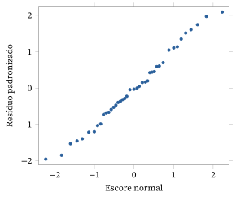
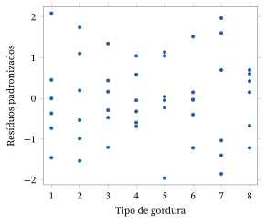
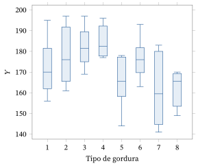
10.4.2 Medidas Repetidas (Comparações Pareadas)
Considere \(k\) variáveis quantitativas \(Y_1, \ldots, Y_k\) definidas numa população \(\Pi\). Suponha que o nosso objetivo seja comparar as distribuições dessas variáveis. Em geral, serão variáveis semelhantes, todas medidas nas mesmas unidades.
Suponha que \(\Pi\) é um conjunto de estudantes matriculados num programa de primeiro ano que exige que os estudantes cursem tanto cálculo quanto física, e que queremos comparar as notas obtidas nessas disciplinas. Se \(Y_1\) denota a nota de cálculo e \(Y_2\) denota a nota de física, então queremos comparar as distribuições dessas variáveis.
Suponha que queremos comparar as distribuições da duração das dores de cabeça para dois tratamentos (\(A\) e \(B\)) numa população de pessoas que sofrem de enxaqueca. Seja \(Y_1\) a duração de uma dor de cabeça depois da administração do tratamento \(A\), e seja \(Y_2\) a duração de uma dor de cabeça depois da administração do tratamento \(B\).
A abordagem de medidas repetidas para o problema de comparar as distribuições de \(Y_1, \ldots, Y_k\) consiste em tomar uma amostra aleatória \(\pi_1, \ldots, \pi_n\) de \(\Pi\) e, para cada \(\pi_i\), obter o valor \(k\)-dimensional \((Y_1(\pi_i), \ldots, Y_k(\pi_i))\) \({}= (y_{i1}, \ldots, y_{ik})\). Isso dá uma amostra de tamanho \(n\) de uma distribuição \(k\)-dimensional. Evidentemente, isso se chama medidas repetidas porque estamos tomando as medições \(Y_1(\pi_i), \ldots, Y_k(\pi_i)\) no mesmo \(\pi_i\).
Uma alternativa às medidas repetidas é tomar \(k\) amostras independentes de \(\Pi\) e, para cada uma delas, obter os valores de uma e apenas uma das variáveis \(Y_i\). Há um motivo importante para preferir a abordagem de medidas repetidas: esperamos menos variação nos valores das diferenças, como \(Y_i - Y_j\), na amostragem com medidas repetidas do que na amostragem independente, porque, nas medidas repetidas, os valores \(Y_1(\pi), \ldots, Y_k(\pi)\) são tomados no mesmo membro da população.
Para ver isso com mais clareza, suponha que todas as variâncias e covariâncias existem para a distribuição conjunta de \(Y_1, \ldots, Y_k\). Isso implica que \begin{equation} \Var(Y_i - Y_j) = \Var(Y_i) + \Var(Y_j) - 2\Cov(Y_i, Y_j). \tag{10.4.3} \end{equation} Como \(Y_i\) e \(Y_j\) são variáveis semelhantes, medidas no mesmo indivíduo, esperamos que sejam positivamente correlacionadas. Já com amostragem independente, temos que \(\Var\bigl(Y_i - Y_j\bigr)\) \({}= \Var(Y_i) + \Var(Y_i)\), então as variâncias das diferenças devem ser menores com medidas repetidas do que com amostragem independente.85
Quando supomos que as distribuições das \(Y_i\) diferem no máximo em suas médias, faz sentido fazer inferências sobre as diferenças das médias populacionais \(\mu_i - \mu_j\) usando as diferenças das médias amostrais \(\bar{y}_i - \bar{y}_j\). No contexto de medidas repetidas, podemos escrever \[ \bar{y}_i - \bar{y}_j = \frac{1}{n} \sum_{l=1}^{n} (y_{li} - y_{lj}). \] Como as parcelas individuais dessa soma são independentes, temos \[ \Var(\bar{Y}_i - \bar{Y}_j) = \frac{\Var(Y_i) + \Var(Y_j) - 2\Cov(Y_i, Y_j)}{n}. \]
Podemos considerar as diferenças \(d_1 = y_{1i} - y_{1j}, \ldots, d_n\) \({}= y_{ni} - y_{nj}\) como uma amostra de tamanho \(n\) de uma distribuição unidimensional com média \(\mu_i - \mu_j\) e variância \(\sigma^2\) dada por (10.4.3). Assim, estimamos \(\mu_i - \mu_j\) por \(\bar{d} = \bar{y}_i - \bar{y}_j\) e estimamos \(\sigma^2\) por \begin{equation} s^2 = \frac{1}{n - 1} \sum_{i=1}^{n} \bigl(d_i - \bar{d}\bigr)^2. \tag{10.4.4} \end{equation}
Se supusermos que a distribuição conjunta de \(Y_1, \ldots, Y_k\) é normal multivariada (isso significa que qualquer combinação linear dessas variáveis tem distribuição normal — ver o Problema 9.1.18), então a distribuição de \(Y_i - Y_j\) é forçosamente \(N(\mu_i - \mu_j, \sigma^2)\). Assim, temos à disposição todas as técnicas univariadas discutidas no Capítulo 6 para fazer inferências sobre \(\mu_i - \mu_j\).
Até aqui, a discussão foi sobre se as distribuições das variáveis diferiam. Supondo que essas distribuições difiram no máximo em suas médias, isso leva a uma comparação das médias. Podemos, no entanto, registrar uma observação como \((X, Y)\), em que \(X\) assume valores em \(\{1, \ldots, k\}\) e \(X = i\) significa que \(Y = Y_i\). Então, a distribuição condicional de \(Y\) dado \(X = i\) é igual à distribuição de \(Y_i\). Portanto, se concluímos que as distribuições das \(Y_i\) são diferentes, podemos concluir que existe uma relação entre \(Y\) e \(X\). No Exemplo 10.4.2, isso significa que existe uma relação entre a nota de um estudante e o fato de a nota ser de cálculo ou de física. No Exemplo 10.4.3, isso significa que existe uma relação entre a duração de uma dor de cabeça e o tratamento.
Quando podemos afirmar que tal relação é de fato uma relação de causa e efeito? Aplicando a discussão da Seção 10.1.2, sabemos que temos de ser capazes de atribuir o valor de \(X\) a um elemento da população selecionado ao acaso. No Exemplo 10.4.2, vemos que isso é impossível, e então não podemos afirmar que tal relação seja uma relação de causa e efeito. No Exemplo 10.4.3, porém, podemos de fato fazer isso: para um indivíduo selecionado ao acaso, atribuímos aleatoriamente um tratamento à primeira dor de cabeça que ele tiver durante o período do estudo e então aplicamos o outro tratamento à segunda dor de cabeça que ele tiver durante o período do estudo.
Uma discussão completa de medidas repetidas exige conceitos mais avançados de estatística. Restringimos agora a nossa atenção à apresentação de um exemplo com \(k = 2\), situação que costuma ser chamada de comparações pareadas.
A tabela a seguir vem de um estudo do efeito do medicamento captopril sobre a pressão arterial, relatado em Applied Statistics, Principles and Examples, de D. R. Cox e E. J. Snell (Chapman and Hall, Londres, 1981). Cada medição é a diferença entre a pressão arterial sistólica antes e depois da administração do medicamento.
| \(-9\) | \(-4\) | \(-21\) | \(-3\) | \(-20\) |
|---|---|---|---|---|
| \(-31\) | \(-17\) | \(-26\) | \(-26\) | \(-10\) |
| \(-23\) | \(-33\) | \(-19\) | \(-19\) | \(-23\) |
A Figura 10.4.4 é um gráfico de probabilidade normal desses dados e, como ele parece razoável, concluímos que os métodos de inferência baseados na suposição de normalidade são aceitáveis. Observe que aqui não padronizamos a variável antes; assim, estamos apenas verificando se o gráfico é razoavelmente reto.
A diferença média é dada por \(\bar{d} = -18{,}93\), com desvio padrão86 \(s = 9{,}03\). Assim, o erro padrão da estimativa da diferença das médias, usando (10.4.4), é dado por \(s/\sqrt{15} = 2{,}33\). Um intervalo de confiança 0,95 para a diferença da pressão arterial sistólica média antes e depois da administração do captopril é então \[ \bar{d} \pm \frac{s}{\sqrt{n}}\, t_{0{,}975}(n - 1) = -18{,}93 \pm 2{,}33\, t_{0{,}975}(14) = (-23{,}93; -13{,}93). \] Como esse intervalo não contém 0, rejeitamos a hipótese nula de que não há diferença entre as médias ao nível de 0,05. O valor-p efetivo do teste bilateral87 é dado por \[ P(\lvert T\rvert > \lvert -18{,}93/2{,}33\rvert) = 0{,}000, \] porque \(T \sim t(14)\) sob a hipótese nula \(H_0\) de que as médias são iguais. Portanto, temos forte evidência contra \(H_0\). Parece que temos forte evidência de que o medicamento está levando a uma queda da pressão arterial.
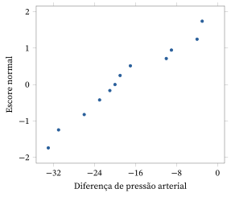
10.4.3 Dois Preditores Categóricos (ANOVA com Dois Fatores)
Suponha agora que temos uma única resposta quantitativa \(Y\) e dois preditores categóricos \(A\) e \(B\), em que \(A\) assume \(a\) níveis e \(B\) assume \(b\) níveis. Uma possibilidade é considerar fazer dois estudos com um fator. Um estudo examinará a relação entre \(Y\) e \(A\), e o segundo examinará a relação entre \(Y\) e \(B\). Há, no entanto, várias desvantagens nessa abordagem.
Primeiro, e talvez mais importante, fazer duas análises separadas não nos permitirá determinar a relação conjunta que \(A\) e \(B\) têm com \(Y\). Isso se relaciona diretamente com o conceito de interação entre preditores. Logo definiremos esse conceito com mais precisão, mas, basicamente, se \(A\) e \(B\) interagem, então a relação condicional entre \(Y\) e \(A\), dado \(B = j\), muda de modo substancial à medida que mudamos \(j\). Se os preditores \(A\) e \(B\) não interagem, então de fato poderemos examinar a relação entre a resposta e cada um dos preditores separadamente. Mas quase nunca sabemos de antemão que é esse o caso, e precisamos avaliar se existe ou não uma interação com base nos dados coletados.
Um segundo motivo para incluir os dois preditores na análise é que isso muitas vezes leva a uma redução da contribuição do erro aleatório para os resultados. Com isso, queremos dizer que poderemos explicar parte da variação observada em \(Y\) pela inclusão da segunda variável no modelo. Isso depende, porém, de a variável adicional ter uma relação com a resposta. Além disso, para que a inclusão de uma segunda variável valha a pena, essa relação precisa ser forte o bastante para justificar a perda de graus de liberdade disponíveis para a estimação da contribuição do erro aleatório para os resultados experimentais. Como veremos, incluir a segunda variável na análise resulta numa redução dos graus de liberdade na linha do Erro da tabela ANOVA. Aqui, os graus de liberdade fazem o papel do tamanho da amostra. Quanto menos graus de liberdade houver na linha do Erro, menos precisa será nossa estimativa de \(\sigma^2\).
Quando incluímos os dois preditores na análise e temos a oportunidade de determinar o processo de amostragem, é importante que cruzemos os preditores. Com isso, queremos dizer que observamos \(Y\) em cada combinação \[ (A, B) = (i, j) \in \{1, \ldots, a\} \times \{1, \ldots, b\}. \] Suponha, então, que temos \(n_{ij}\) valores da resposta no nível \((A, B) = (i, j)\) dos preditores. Então, sendo \[ E(Y \mid (A, B) = (i, j)) = \beta_{ij} \] a resposta média quando \(A = i\) e \(B = j\), e introduzindo as variáveis indicadoras \[ X_{ij} = \begin{cases} 1 & A = i, B = j \\ 0 & A \neq i \text{ ou } B \neq j, \end{cases} \] podemos escrever \begin{align*} E(Y \mid X_{ij} = x_{ij} \text{ para todo } i, j) &= \beta_{11}x_{11} + \beta_{21}x_{21} + \cdots + \beta_{ab}x_{ab} \\ &= \sum_{i=1}^{a}\sum_{j=1}^{b} \beta_{ij}x_{ij}. \end{align*} A relação entre \(Y\) e os preditores está inteiramente contida nas mudanças dos \(\beta_{ij}\) à medida que \(i\) e \(j\) mudam. Daí vemos que um modelo de regressão para essa situação é imediatamente um modelo de regressão linear.
Inferências sobre Médias Individuais e Diferenças de Médias
Seja agora \(y_{ijk}\) o \(k\)-ésimo valor da resposta quando \(X_{ij} = 1\). Então, como na Seção 10.4.1, a estimativa de mínimos quadrados de \(\beta_{ij}\) é dada por \[ b_{ij} = \bar{y}_{ij} = \frac{1}{n_{ij}} \sum_{k=1}^{n_{ij}} y_{ijk}, \] a média das observações quando \(X_{ij} = 1\). Se, além disso, supusermos que as distribuições condicionais de \(Y\), dados os preditores, têm todas variância igual a \(\sigma^2\), então, com \(N = n_{11} + n_{21} + \cdots + n_{ab}\), temos que \begin{equation} s^2 = \frac{1}{N - ab} \sum_{i=1}^{a}\sum_{j=1}^{b}\sum_{k=1}^{n_{ij}} \left(y_{ijk} - \bar{y}_{ij}\right)^2 \tag{10.4.5} \end{equation} é um estimador não viesado de \(\sigma^2\). Portanto, usando (10.4.5), o erro padrão de \(\bar{y}_{ij}\) é dado por \(s/\sqrt{n_{ij}}\).
Com a hipótese de normalidade, temos que \(\bar{Y}_{ij} \sim N(\beta_{ij}, \sigma^2/n_{ij})\), independente de \[ \frac{(N - ab)\,S^2}{\sigma^2} \sim \chi^2(N - ab). \] Isso leva aos intervalos de confiança \(\gamma\) \[ \bar{y}_{ij} \pm \frac{s}{\sqrt{n_{ij}}}\, t_{(1+\gamma)/2}(N - ab) \] para \(\beta_{ij}\) e \[ \bar{y}_{ij} - \bar{y}_{kl} \pm s\sqrt{\frac{1}{n_{ij}} + \frac{1}{n_{kl}}}\; t_{(1+\gamma)/2}(N - ab) \] para a diferença de médias \(\beta_{ij} - \beta_{kl}\).
A ANOVA para Avaliar a Interação e as Relações com os Preditores
Queremos saber se existe ou não alguma relação entre \(Y\) e os preditores. Não há relação entre a resposta e os preditores se e somente se todos os \(\beta_{ij}\) são iguais. Antes de testar isso, porém, é costume testar a hipótese nula de que não há interação entre os preditores. A definição precisa de ausência de interação aqui é que \[ \beta_{ij} = \mu_i + \upsilon_j \] para todo \(i\) e \(j\), para certas constantes \(\mu_i\) e \(\upsilon_j\), isto é, as médias podem ser expressas de forma aditiva. Note que, se fixamos \(B = j\) e deixamos \(A\) variar, então essas curvas de resposta (uma curva de resposta é um gráfico das médias de uma variável mantendo fixo o valor da segunda variável) são todas paralelas. Essa é uma maneira equivalente de dizer que não há interação entre os preditores.
Na Figura 10.4.5, representamos curvas de resposta em que os fatores não interagem, e na Figura 10.4.6 representamos curvas de resposta em que eles interagem. Note que as linhas cheias, por exemplo a que liga \(\beta_{11}\) e \(\beta_{21}\), estão lá só para facilitar a visualização do paralelismo (ou da falta dele) e não têm nenhum outro significado.
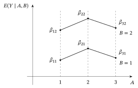
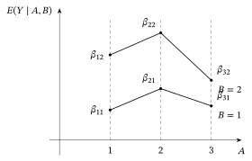
Para testar a hipótese nula de ausência de interação, precisamos primeiro ajustar o modelo em que \(\beta_{ij} = \mu_i + \upsilon_j\), isto é, encontrar as estimativas de mínimos quadrados dos \(\beta_{ij}\) sob essas restrições. Não vamos desenvolver aqui a matemática para obter essas estimativas; vamos contar com o software para fazer isso por nós e para calcular a soma de quadrados relevante para testar a hipótese nula de ausência de interação (pelos resultados da Seção 10.3.4, sabemos que ela é obtida pela diferença entre a soma de quadrados da regressão obtida do modelo completo e a soma de quadrados da regressão obtida do modelo sem interação).
Se decidimos que existe uma interação, então é imediato que tanto \(A\) quanto \(B\) têm efeito sobre \(Y\) (se \(A\) não tem efeito, então \(A\) e \(B\) não podem interagir — veja o Problema 10.4.16); precisamos olhar as diferenças entre os \(\bar{y}_{ij}\) para determinar a forma da relação. Se decidimos que não existe interação, então \(A\) tem efeito se e somente se os \(\mu_i\) variam, e \(B\) tem efeito se e somente se os \(\upsilon_j\) variam. Podemos testar a hipótese nula \(H_0 : \mu_1 = \cdots = \mu_a\) de nenhum efeito devido a \(A\) e a hipótese nula \(H_0 : \upsilon_1 = \cdots = \upsilon_b\) de nenhum efeito devido a \(V\),88 separadamente, depois de decidir que não existe interação.
Os detalhes da obtenção das somas de quadrados relevantes para todas essas hipóteses não são tratados aqui, mas muitos pacotes estatísticos produzem uma tabela ANOVA, como a dada abaixo.
| Fonte | GL | Soma de Quadrados |
|---|---|---|
| \(A\) | \(a - 1\) | \(\mathrm{RSS}(A)\) |
| \(B\) | \(b - 1\) | \(\mathrm{RSS}(B)\) |
| \(A \times B\) | \((a - 1)(b - 1)\) | \(\mathrm{RSS}(A \times B)\) |
| Erro | \(N - ab\) | \(\sum_{i=1}^{a}\sum_{j=1}^{b}\sum_{k=1}^{n_{ij}} \left(y_{ijk} - \bar{y}_{ij}\right)^2\) |
| Total | \(N - 1\) | \(\sum_{i=1}^{a}\sum_{j=1}^{b}\sum_{k=1}^{n_{ij}} \left(y_{ijk} - \bar{y}\right)^2\) |
Note que, se tivéssemos incluído apenas \(A\) no modelo, então haveria \(N - a\) graus de liberdade para a estimação de \(\sigma^2\). Ao incluir \(B\), perdemos \((N - a) - (N - ab) = a(b - 1)\) graus de liberdade para a estimação de \(\sigma^2\).
Usando essa tabela, primeiro avaliamos a hipótese nula \(H_0 :\) não há interação entre \(A\) e \(B\), usando \(F \sim F((a - 1)(b - 1), N - ab)\) sob \(H_0\), por meio do valor-p \[ P\left(F > \frac{\mathrm{RSS}(A \times B)/(a - 1)(b - 1)}{s^2}\right), \] em que \(s^2\) é dado por (10.4.5). Se decidimos que não existe interação, então avaliamos a hipótese nula \(H_0 :\) nenhum efeito devido a \(A\), usando \(F \sim F(a - 1, N - ab)\) sob \(H_0\), por meio do valor-p \[ P\left(F > \frac{\mathrm{RSS}(A)/(a - 1)}{s^2}\right), \] e avaliamos \(H_0 :\) nenhum efeito devido a \(B\), usando \(F \sim F(b - 1, N - ab)\) sob \(H_0\), por meio do valor-p \[ P\left(F > \frac{\mathrm{RSS}(B)/(b - 1)}{s^2}\right). \]
Verificação do Modelo
Para verificar o modelo, olhamos os resíduos padronizados, dados por (veja o Problema 10.4.18) \begin{equation} \frac{y_{ijk} - \bar{y}_{ij}}{s\sqrt{1 - 1/n_{ij}}}. \tag{10.4.6} \end{equation} Vamos nos restringir a vários gráficos dos resíduos padronizados para a verificação do modelo.
Consideramos um exemplo de uma análise com dois fatores.
Os dados da tabela a seguir vêm de G. E. P. Box e D. R. Cox, “An analysis of transformations” (Journal of the Royal Statistical Society, 1964, Series B, p. 211) e representam tempos de sobrevivência, em horas, de animais expostos a um de três tipos diferentes de veneno e submetidos a quatro tipos diferentes de tratamento. Denotamos por \(A\) os tratamentos e por \(B\) o tipo de veneno, de modo que temos \(3 \times 4 = 12\) combinações \((A, B)\) diferentes. Cada combinação foi aplicada a quatro animais diferentes, isto é, \(n_{ij} = 4\) para todo \(i\) e \(j\).
| \(A1\) | \(A2\) | \(A3\) | \(A4\) | |
|---|---|---|---|---|
| \(B1\) | \(3{,}1;\ 4{,}5;\ 4{,}6;\ 4{,}3\) | \(8{,}2;\ 11{,}0;\ 8{,}8;\ 7{,}2\) | \(4{,}3;\ 4{,}5;\ 6{,}3;\ 7{,}5\) | \(4{,}5;\ 7{,}1;\ 6{,}6;\ 6{,}2\) |
| \(B2\) | \(3{,}6;\ 2{,}9;\ 4{,}0;\ 2{,}3\) | \(9{,}2;\ 6{,}1;\ 4{,}9;\ 12{,}4\) | \(4{,}4;\ 3{,}5;\ 3{,}1;\ 4{,}0\) | \(5{,}6;\ 10{,}2;\ 7{,}1;\ 3{,}8\) |
| \(B3\) | \(2{,}2;\ 2{,}1;\ 1{,}8;\ 2{,}3\) | \(3{,}0;\ 3{,}7;\ 3{,}8;\ 2{,}9\) | \(2{,}3;\ 2{,}5;\ 2{,}4;\ 2{,}2\) | \(3{,}0;\ 3{,}6;\ 3{,}1;\ 3{,}3\) |
Um gráfico de probabilidade normal desses dados, usando os resíduos padronizados depois de ajustar o modelo com dois fatores, revela um problema claro. Na referência acima, sugere-se uma transformação da resposta para a recíproca89 \(1/Y\), com base numa análise mais sofisticada, e isso de fato leva a gráficos dos resíduos padronizados muito mais adequados. A Figura 10.4.7 é um gráfico de probabilidade normal dos resíduos padronizados com base na resposta recíproca. Esse gráfico de probabilidade normal parece razoável.
A Figura 10.4.8 é um gráfico dos resíduos padronizados contra as várias combinações \((A, B)\), em que codificamos a combinação \((i, j)\) como \(b(i - 1) + j\), com \(b = 3\), \(i = 1, 2, 3, 4\) e \(j = 1, 2, 3\). Essa codificação atribui um inteiro único a cada combinação \((i, j)\) e é conveniente para comparar diagramas de dispersão da resposta para cada tratamento. De novo, esse gráfico de resíduos parece razoável.
Abaixo damos as estimativas de mínimos quadrados dos \(\beta_{ij}\) para o modelo transformado.90
| \(A1\) | \(A2\) | \(A3\) | \(A4\) | |
|---|---|---|---|---|
| \(B1\) | \(0{,}24869\) | \(0{,}11635\) | \(0{,}18627\) | \(0{,}16897\) |
| \(B2\) | \(0{,}32685\) | \(0{,}13934\) | \(0{,}27139\) | \(0{,}17015\) |
| \(B3\) | \(0{,}48027\) | \(0{,}30290\) | \(0{,}42650\) | \(0{,}30918\) |
A tabela ANOVA dos dados, obtida de um pacote estatístico padrão, é dada abaixo.
| Fonte | GL | Soma de Quadrados | Quadrado Médio |
|---|---|---|---|
| \(A\) | \(3\) | \(0{,}20414\) | \(0{,}06805\) |
| \(B\) | \(2\) | \(0{,}34877\) | \(0{,}17439\) |
| \(A \times B\) | \(6\) | \(0{,}01571\) | \(0{,}00262\) |
| Erro | \(36\) | \(0{,}08643\) | \(0{,}00240\) |
| Total | \(47\) | \(0{,}65505\) |
Disso, determinamos que \(s = \sqrt{0{,}00240}\) \({}= 4{,}89898 \times 10^{-2}\) e, portanto, os erros padrão das estimativas de mínimos quadrados são todos iguais a \(s/2 = 0{,}0244949\).
Para testar a hipótese nula de ausência de interação entre \(A\) e \(B\), temos, usando \(F \sim F(6, 36)\) sob \(H_0\), o valor-p \[ P\left(F > \frac{0{,}00262}{0{,}00240}\right) = P(F > 1{,}09) = 0{,}387. \] Não temos evidência contra a hipótese nula.
Então podemos passar a testar a hipótese nula de nenhum efeito devido a \(A\) e temos, usando \(F \sim F(2, 36)\) sob \(H_0\), o valor-p91 \[ P\left(F > \frac{0{,}06805}{0{,}00240}\right) = P(F > 28{,}35) = 0{,}000. \] Rejeitamos essa hipótese nula.
Da mesma forma, testando a hipótese nula de nenhum efeito devido a \(B\), temos, usando \(F \sim F(2, 36)\) sob \(H_0\), o valor-p \[ P\left(F > \frac{0{,}17439}{0{,}00240}\right) = P(F > 72{,}66) = 0{,}000. \] Rejeitamos também essa hipótese nula.
Assim, decidimos que o modelo adequado é o modelo aditivo, dado por \(E(1/Y \mid (A, B))\) \({}= (i, j) = \mu_i\) \({}+ \upsilon_j\) (ainda estamos usando a resposta transformada \(1/Y\)). Também podemos escrever isso como \(E(1/Y \mid (A, B))\) \({}= (i, j) = (\mu_i + \alpha)\) \({}+ (\upsilon_j - \alpha)\) para qualquer escolha de \(\alpha\). Portanto, não há uma estimativa única dos efeitos aditivos devidos a \(A\) ou a \(B\). Ainda assim, temos estimativas de mínimos quadrados únicas das médias, que são obtidas (com software) ajustando o modelo com as restrições sobre os \(\beta_{ij}\) que correspondem à ausência de interação. Elas estão registradas na tabela a seguir.
| \(A1\) | \(A2\) | \(A3\) | \(A4\) | |
|---|---|---|---|---|
| \(B1\) | \(0{,}26977\) | \(0{,}10403\) | \(0{,}21255\) | \(0{,}13393\) |
| \(B2\) | \(0{,}31663\) | \(0{,}15089\) | \(0{,}25942\) | \(0{,}18080\) |
| \(B3\) | \(0{,}46941\) | \(0{,}30367\) | \(0{,}41219\) | \(0{,}33357\) |
Como decidimos que não há interação entre \(A\) e \(B\), podemos avaliar os efeitos de um só fator examinando as médias da resposta para cada fator separadamente. Por exemplo, as médias para investigar o efeito de \(A\) são dadas na tabela a seguir.
| \(A1\) | \(A2\) | \(A3\) | \(A4\) |
|---|---|---|---|
| \(0{,}352\) | \(0{,}186\) | \(0{,}295\) | \(0{,}216\) |
Podemos comparar essas médias usando procedimentos baseados na distribuição \(t\). Por exemplo, um intervalo de confiança 0,95 para a diferença entre as médias nos níveis \(A1\) e \(A2\) é dado por \begin{align} \bar{y}_{1\cdot} - \bar{y}_{2\cdot} \pm \frac{s}{\sqrt{12}}\, t_{0{,}975}(36) &= (0{,}352 - 0{,}186) \pm \sqrt{\frac{0{,}00240}{12}}\; 2{,}0281 \notag \\ &= (0{,}13732;\ 0{,}19468). \tag{10.4.7} \end{align} Isso indica que rejeitaríamos a hipótese nula de nenhuma diferença entre essas médias ao nível 0,05.
Note que usamos a estimativa de \(\sigma^2\) baseada no modelo completo em (10.4.7). Logicamente, pareceria fazer mais sentido usar a estimativa baseada no ajuste do modelo aditivo, já que decidimos que ele é adequado. Quando fazemos isso, falamos em combinação (pooling), pois pode-se mostrar que a nova estimativa do erro é calculada somando \(\mathrm{RSS}(A \times B)\) à ESS original e dividindo pela soma dos graus de liberdade de \(A \times B\) e dos graus de liberdade do erro. Não combinar é considerado um procedimento um pouco mais conservador.
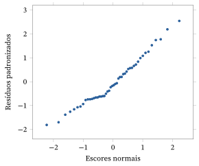
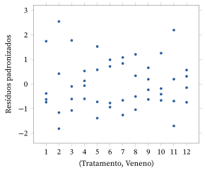
10.4.4 Blocos Aleatorizados
Com modelos de dois fatores, em geral queremos investigar se cada um desses fatores tem ou não uma relação com a resposta \(Y\). Suponha, porém, que sabemos que um fator \(B\) tem uma relação com \(Y\) e que queremos investigar se outro fator \(A\) tem ou não uma relação com \(Y\). Devemos fazer um experimento com um fator usando o preditor \(A\), ou um experimento com dois fatores incluindo o fator \(B\)?
A resposta é a que demos no início da Seção 10.4.2. Incluir o fator \(B\) nos permitirá, se \(B\) responder por boa parte da variação observada, fazer comparações mais precisas. Note, porém, que, se \(B\) não tem um efeito substancial sobre \(Y\), então sua inclusão será um desperdício, pois sacrificamos \(a(b - 1)\) graus de liberdade que, de outro modo, iriam para a estimação de \(\sigma^2\).
Por isso é importante que de fato saibamos que \(B\) tem um efeito substancial. Nesse caso, dizemos que \(B\) é uma variável de bloqueio. De novo, é importante que a variável de bloqueio \(B\) seja cruzada com \(A\). Então podemos testar qualquer efeito devido a \(A\) testando primeiro se há interação entre \(A\) e \(B\); se nenhuma interação for encontrada, testamos um efeito devido só a \(A\), exatamente como discutimos na Seção 10.4.3.
Um caso especial do uso de uma variável de bloqueio ocorre quando temos \(n_{ij} = 1\) para todo \(i\) e \(j\). Nesse caso, \(N = ab\), de modo que não há graus de liberdade disponíveis para a estimação do erro. Na verdade, temos que (veja o Problema 10.4.19) \(s^2 = 0\). Ainda assim, esse delineamento tem valor prático, desde que estejamos dispostos a supor que não há interação entre \(A\) e \(B\). Ele é chamado de delineamento em blocos aleatorizados92.
Para um delineamento em blocos aleatorizados, temos que \begin{equation} s^2 = \frac{\mathrm{RSS}(A \times B)}{(a - 1)(b - 1)} \tag{10.4.8} \end{equation} é uma estimativa não viesada de \(\sigma^2\), e assim temos \((a - 1)(b - 1)\) graus de liberdade para a estimação do erro. Claro, isso não estará correto se \(A\) e \(B\) interagirem, mas, quando não interagem, esse pode ser um delineamento altamente eficiente, pois removemos o efeito da variação devida a \(B\) e precisamos de apenas \(ab\) observações para isso. Quando o delineamento em blocos aleatorizados é adequado, testamos um efeito devido a \(A\), usando \(F \sim F(a - 1, (a - 1)(b - 1))\) sob \(H_0\), por meio do valor-p \[ P\left(F > \frac{\mathrm{RSS}(A)/(a - 1)}{s^2}\right). \]
10.4.5 Um Preditor Categórico e Um Preditor Quantitativo
Também é possível que a resposta seja quantitativa enquanto alguns dos preditores são categóricos e outros são quantitativos. Consideramos agora a situação em que temos um preditor categórico \(A\), que assume \(a\) valores, e um preditor quantitativo \(W\). Supomos que o modelo de regressão se aplica. Além disso, restringimos nossa atenção à situação em que supomos que, dentro de cada nível de \(A\), a resposta média varia como93 \[ E(Y \mid (A, W)) = (i, w) = \beta_{i1} + \beta_{i2} w, \] de modo que temos um modelo de regressão linear simples dentro de cada nível de \(A\).
Se introduzirmos as variáveis indicadoras \[ X_{ij} = \begin{cases} W^{j-1} & A = i \\ 0 & A \neq i \end{cases} \] para \(i = 1, \ldots, a\) e \(j = 1, 2\), então podemos escrever o modelo de regressão linear como \[ E\bigl(Y \mid \bigl(X_{ij}\bigr) = \bigl(x_{ij}\bigr)\bigr) = (\beta_{11} x_{11} + \beta_{12} x_{12}) + \cdots + (\beta_{a1} x_{a1} + \beta_{a2} x_{a2}). \] Aqui, \(\beta_{i1}\) é o intercepto e \(\beta_{i2}\) é a inclinação que especifica a relação entre \(Y\) e \(W\) quando \(A = i\). Os métodos da Seção 10.3.4 ficam então disponíveis para a inferência sobre esse modelo.
Também temos uma noção de interação nesse contexto, pois dizemos que os dois preditores interagem se as inclinações das retas variam entre os níveis de \(A\). Assim, dizer que não existe interação é o mesmo que dizer que as curvas de resposta são paralelas quando representadas graficamente para cada nível de \(A\). Se existe uma interação, então é certo que tanto \(A\) quanto \(W\) têm efeito sobre \(Y\). Logo, a hipótese nula de que não existe interação é equivalente a \(H_0 : \beta_{12} = \cdots = \beta_{a2}\).
Se decidirmos que não existe interação, então podemos testar a ausência de efeito devido a \(W\) testando a hipótese nula de que a inclinação comum é igual a 0, ou podemos testar a hipótese nula de que não há efeito devido a \(A\) testando \(H_0 : \beta_{11} = \cdots = \beta_{a1}\), isto é, que os termos de intercepto são os mesmos em todos os níveis de \(A\).
Não aprofundamos aqui a análise desse modelo. Existem, porém, programas estatísticos que calculam a tabela ANOVA pertinente para avaliar as várias hipóteses nulas.
Análise de Covariância
Suponha que estamos conduzindo um experimento planejado e que, para cada unidade experimental, podemos medir, mas não controlar, uma variável quantitativa \(W\) que acreditamos ter efeito sobre a resposta \(Y\). Se o efeito dessa variável for apreciável, então a boa prática estatística sugere que incluamos essa variável no modelo, pois assim reduziremos a contribuição do erro para os nossos resultados experimentais e, portanto, faremos comparações mais precisas. É claro que pagamos um preço ao fazer isso, pois perdemos graus de liberdade que, de outro modo, estariam disponíveis para a estimação do erro. Por isso, precisamos ter certeza de que \(W\) tem de fato um efeito significativo nesse caso. Além disso, não testamos se essa variável tem efeito, já que presumivelmente sabemos que ela tem. Essa técnica é chamada de análise de covariância e é, evidentemente, semelhante em natureza ao uso de variáveis de bloqueio.
Resumo da Seção 10.4
- Consideramos a situação que envolve uma resposta quantitativa e variáveis preditoras categóricas.
- Com a introdução de variáveis indicadoras para as variáveis preditoras, podemos tratar essa situação como uma aplicação particular do modelo de regressão múltipla da Seção 10.3.4.
- Se decidirmos que existe uma relação, então em geral tentamos explicar que forma essa relação assume comparando médias. Para evitar encontrar diferenças estatisticamente significativas demais, reduzimos a taxa de erro individual de modo a garantir uma taxa de erro da família razoável.
- Quando temos dois preditores, verificamos primeiro se os fatores interagem. Se os dois preditores interagem, então ambos têm efeito sobre a resposta.
- Um caso especial de análise com dois fatores surge quando um dos preditores serve como variável de bloqueio. Em geral, é importante saber que a variável de bloqueio tem efeito sobre a resposta, para não desperdiçarmos graus de liberdade ao incluí-la.
- Às vezes podemos medir, nas unidades experimentais individuais, variáveis que sabemos ter efeito sobre a resposta. Nesse caso, incluímos essas variáveis no nosso modelo, pois elas reduzem a contribuição do erro aleatório para a análise e tornam nossas inferências mais precisas.
Exercícios
10.4.1 Os seguintes valores de uma resposta \(Y\) foram obtidos para três valores de um preditor categórico \(A\).
| \(A = 1\) | \(2{,}9976\) | \(0{,}3606\) | \(4{,}7716\) | \(1{,}5652\) |
|---|---|---|---|---|
| \(A = 2\) | \(0{,}7468\) | \(1{,}3308\) | \(2{,}2167\) | \(-0{,}3184\) |
| \(A = 3\) | \(2{,}1192\) | \(2{,}3739\) | \(0{,}3335\) | \(3{,}3015\) |
Suponha que adotamos para esses dados o modelo de regressão normal com um preditor categórico. (a) Produza boxplots lado a lado dos dados.(b) Faça o gráfico dos resíduos padronizados contra \(A\) (se você estiver usando um computador para os cálculos, produza também um gráfico de probabilidade normal dos resíduos padronizados). Isso lhe dá motivos para suspeitar que as hipóteses do modelo estejam incorretas?(c) Faça uma ANOVA com um fator para testar se há alguma diferença entre as médias condicionais de \(Y\) dado \(A\).(d) Se for o caso, construa intervalos de confiança 0,95 para as diferenças entre as médias e resuma suas conclusões.
10.4.2 Os seguintes valores de uma resposta \(Y\) foram obtidos para três valores de um preditor categórico \(A\).
| \(A = 1\) | \(0{,}090\) | \(0{,}800\) | \(33{,}070\) | \(-1{,}890\) |
|---|---|---|---|---|
| \(A = 2\) | \(5{,}120\) | \(1{,}580\) | \(1{,}760\) | \(1{,}740\) |
| \(A = 3\) | \(5{,}080\) | \(-3{,}510\) | \(4{,}420\) | \(1{,}190\) |
Suponha que adotamos para esses dados o modelo de regressão normal com um preditor categórico. (a) Produza boxplots lado a lado dos dados.(b) Faça o gráfico dos resíduos padronizados contra \(A\) (se você estiver usando um computador para os cálculos, produza também um gráfico de probabilidade normal dos resíduos padronizados). Isso lhe dá motivos para suspeitar que as hipóteses do modelo estejam incorretas?(c) Se surgirem dúvidas sobre a validade do modelo, você consegue “consertar” o problema?(d) Se você conseguiu consertar os problemas encontrados no modelo, faça uma ANOVA com um fator para testar se há diferenças entre as médias condicionais de \(Y\) dado \(A\).(e) Se for o caso, construa intervalos de confiança 0,95 para as diferenças entre as médias e resuma suas conclusões.
10.4.3 A tabela a seguir dá o teor percentual de umidade de dois tipos diferentes de queijo, determinado por amostragem aleatória de lotes de queijo do processo de produção.
| Queijo 1 | \(39{,}02\); \(38{,}79\); \(35{,}74\); \(35{,}41\); \(37{,}02\); \(36{,}00\) |
|---|---|
| Queijo 2 | \(38{,}96\); \(39{,}01\); \(35{,}58\); \(35{,}52\); \(35{,}70\); \(36{,}04\) |
Suponha que adotamos para esses dados o modelo de regressão normal com um preditor categórico. (a) Produza boxplots lado a lado dos dados.(b) Faça o gráfico dos resíduos padronizados contra Queijo (se você estiver usando um computador para os cálculos, produza também um gráfico de probabilidade normal dos resíduos padronizados). Isso lhe dá motivos para suspeitar que as hipóteses do modelo estejam incorretas?(c) Faça uma ANOVA com um fator para testar se há diferenças entre as médias condicionais de \(Y\) dado Queijo. Observe que isso é o mesmo que um teste \(t\) para a diferença entre as médias.
10.4.4 Num experimento, ratos foram alimentados com uma ração padrão durante 100 dias, com várias quantidades de gossipol adicionadas. Foram registrados os seguintes ganhos de peso, em gramas.
| 0,00% de gossipol | 228, 229, 218, 216, 224, 208, 235, 229, 233, 219, 224, 220, 232, 200, 208, 232 |
|---|---|
| 0,04% de gossipol | 186, 229, 220, 208, 228, 198, 222, 273, 216, 198, 213 |
| 0,07% de gossipol | 179, 193, 183, 180, 143, 204, 114, 188, 178, 134, 208, 196 |
| 0,10% de gossipol | 130, 87, 135, 116, 118, 165, 151, 59, 126, 64, 78, 94, 150, 160, 122, 110, 178 |
| 0,13% de gossipol | 154, 130, 118, 118, 118, 104, 112, 134, 98, 100, 104 |
Suponha que adotamos para esses dados o modelo de regressão normal e tratamos o gossipol como um preditor categórico com cinco níveis. (a) Crie um gráfico de boxplots lado a lado dos dados. Isso lhe dá algum motivo para se preocupar com as hipóteses subjacentes a uma análise baseada no modelo de regressão normal?(b) Produza um gráfico dos resíduos padronizados contra o fator gossipol (se você estiver usando um computador para os cálculos, produza também um gráfico de probabilidade normal dos resíduos padronizados). Quais são suas conclusões?(c) Faça uma ANOVA com um fator para testar se há diferenças entre as respostas médias para as diferentes quantidades de gossipol.(d) Calcule intervalos de confiança 0,95 para todas as diferenças de médias duas a duas e resuma suas conclusões.
10.4.5 Numa investigação sobre o efeito da deficiência de oligoelementos numa variável \(Y\) medida em ovelhas, foram obtidos os dados da tabela a seguir.
| Controle | \(13{,}2\); \(13{,}6\); \(11{,}9\); \(13{,}0\); \(14{,}5\); \(13{,}4\) |
|---|---|
| Cobalto | \(11{,}9\); \(12{,}2\); \(13{,}9\); \(12{,}8\); \(12{,}7\); \(12{,}9\) |
| Cobre | \(14{,}2\); \(14{,}0\); \(15{,}1\); \(14{,}9\); \(13{,}7\); \(15{,}8\) |
| Cobalto \(+\) Cobre | \(15{,}0\); \(15{,}6\); \(14{,}5\); \(15{,}8\); \(13{,}9\); \(14{,}4\) |
Suponha que adotamos para esses dados o modelo de regressão normal com um preditor categórico. (a) Produza boxplots lado a lado dos dados.(b) Faça o gráfico dos resíduos padronizados contra o preditor (se você estiver usando um computador para os cálculos, produza também um gráfico de probabilidade normal dos resíduos padronizados). Isso lhe dá motivos para suspeitar que as hipóteses do modelo estejam incorretas?(c) Faça uma ANOVA com um fator para testar se há diferenças entre as médias condicionais de \(Y\) dado o preditor.(d) Se for o caso, construa intervalos de confiança 0,95 para todas as diferenças entre as médias duas a duas e resuma suas conclusões.
10.4.6 Duas dietas foram dadas a amostras de porcos durante um período de tempo, e foram registrados os seguintes ganhos de peso (em libras).
| Dieta A | 8, 4, 14, 15, 11, 10, 6, 12, 13, 7 |
|---|---|
| Dieta B | 7, 13, 22, 15, 12, 14, 18, 8, 21, 23, 10, 17 |
Suponha que adotamos para esses dados o modelo de regressão normal. (a) Produza boxplots lado a lado dos dados.(b) Faça o gráfico dos resíduos padronizados contra Dieta. Produza também um gráfico de probabilidade normal dos resíduos padronizados. Isso lhe dá motivos para suspeitar que as hipóteses do modelo estejam incorretas?(c) Faça uma ANOVA com um fator para testar se há diferença entre as médias condicionais de \(Y\) dado Dieta.(d) Construa intervalos de confiança 0,95 para as diferenças entre as médias.
10.4.7 Dez alunos foram selecionados aleatoriamente entre os alunos de uma universidade que cursaram cálculo do primeiro ano e estatística do primeiro ano. Suas notas nessas disciplinas estão registradas na tabela a seguir.
| Aluno | 1 | 2 | 3 | 4 | 5 | 6 | 7 | 8 | 9 | 10 |
|---|---|---|---|---|---|---|---|---|---|---|
| Cálculo | 66 | 61 | 77 | 62 | 66 | 68 | 64 | 75 | 59 | 71 |
| Estatística | 66 | 63 | 79 | 63 | 67 | 70 | 71 | 80 | 63 | 74 |
Suponha que adotamos para esses dados o modelo de regressão normal. (a) Produza boxplots lado a lado dos dados.(b) Tratando as notas de cálculo e de estatística como amostras separadas, faça uma ANOVA com um fator para testar se há alguma diferença entre a nota média em cálculo e a nota média em estatística. Produza os gráficos apropriados para verificar as hipóteses do modelo.(c) Agora leve em conta que cada aluno tem uma nota de cálculo e uma nota de estatística e teste se há alguma diferença entre a nota média em cálculo e a nota média em estatística. Produza os gráficos apropriados para verificar as hipóteses do modelo. Compare seus resultados com os obtidos na parte (b).(d) Estime a correlação entre as notas de cálculo e de estatística.
10.4.8 Os dados a seguir foram registrados em Statistical Methods, 6.ª ed., de G. Snedecor e W. Cochran (Iowa State University Press, Ames, 1967), e representam o número médio de flósculos observados em plantas de sete parcelas. Cada planta foi cultivada a partir de cormos altos ou de cormos baixos (um tipo de caule subterrâneo).
| Parcela | |||||||
|---|---|---|---|---|---|---|---|
| 1 | 2 | 3 | 4 | 5 | 6 | 7 | |
| Cormo Alto | \(11{,}2\) | \(13{,}3\) | \(12{,}8\) | \(13{,}7\) | \(12{,}2\) | \(11{,}9\) | \(12{,}1\) |
| Cormo Baixo | \(14{,}6\) | \(12{,}6\) | \(15{,}0\) | \(15{,}6\) | \(12{,}7\) | \(12{,}0\) | \(13{,}1\) |
Suponha que adotamos para esses dados o modelo de regressão normal. (a) Produza boxplots lado a lado dos dados.(b) Tratando as medições de Cormo Alto e de Cormo Baixo como amostras separadas, faça uma ANOVA com um fator para testar se há alguma diferença entre as médias populacionais. Produza os gráficos apropriados para verificar as hipóteses do modelo.(c) Agora leve em conta que cada parcela tem uma medição de Cormo Alto e uma de Cormo Baixo. Compare seus resultados com os obtidos na parte (b). Produza os gráficos apropriados para verificar as hipóteses do modelo.(d) Estime a correlação entre as notas de cálculo e de estatística.94
10.4.9 Suponha que duas medições, \(Y_1\) e \(Y_2\), correspondentes a tratamentos diferentes, são feitas no mesmo indivíduo, amostrado aleatoriamente de uma população \(\Pi\). Suponha que \(Y_1\) e \(Y_2\) têm a mesma variância e são negativamente correlacionadas. Nosso objetivo é comparar as médias dos tratamentos. Explique por que teria sido melhor amostrar aleatoriamente dois indivíduos de \(\Pi\) e aplicar os tratamentos a esses indivíduos separadamente. (Sugestão: considere \(\Var(Y_1 - Y_2)\) nessas duas situações de amostragem.)
10.4.10 Liste as hipóteses subjacentes à validade do teste ANOVA com um fator discutido na Seção 10.4.1.
10.4.11 Liste as hipóteses subjacentes à validade do teste de comparação pareada discutido na Seção 10.4.2.
10.4.12 Liste as hipóteses subjacentes à validade do teste ANOVA com dois fatores discutido na Seção 10.4.3.
10.4.13 Liste as hipóteses subjacentes à validade do teste usado com o delineamento em blocos aleatorizados, discutido na Seção 10.4.4, quando \(n_{ij} = 1\) para todo \(i\) e \(j\).
Problemas
10.4.14 Prove que \(\sum_{i=1}^{a} \sum_{j=1}^{n_i} \bigl(y_{ij} - \beta_i\bigr)^2\) é minimizada, como função dos \(\beta_i\), por \(\beta_i = \bar{y}_i\) \({}= \bigl(y_{i1} + \cdots + y_{in_i}\bigr)/n_i\) para \(i = 1, \ldots, a\).
10.4.15 Prove que \[ \sum_{i=1}^{a} \sum_{j=1}^{n_i} \bigl(y_{ij} - \bar{y}\bigr)^2 = \sum_{i=1}^{a} n_i \bigl(\bar{y}_i - \bar{y}\bigr)^2 + \sum_{i=1}^{a} \sum_{j=1}^{n_i} \bigl(y_{ij} - \bar{y}_i\bigr)^2, \] em que \(\bar{y}_i = \bigl(y_{i1} + \cdots + y_{in_i}\bigr)/n_i\) e \(\bar{y}\) é a média geral.
10.4.16 Argumente que, se a relação entre uma resposta quantitativa \(Y\) e dois preditores categóricos \(A\) e \(B\) é dada por um modelo de regressão linear, então \(A\) e \(B\) têm ambos efeito sobre \(Y\) sempre que \(A\) e \(B\) interagem. (Sugestão: o que significa, em termos de curvas de resposta, existir uma interação, e existir um efeito devido a \(A\)?)
10.4.17 Mostre que (10.4.2) é a expressão adequada para o resíduo padronizado no modelo de regressão linear com um preditor categórico.
10.4.18 Mostre que (10.4.6) é a expressão adequada para o resíduo padronizado no modelo de regressão linear com dois preditores categóricos.
10.4.19 Mostre que \(s^2 = 0\) no modelo de regressão linear com dois preditores categóricos quando \(n_{ij} = 1\) para todo \(i\) e \(j\).
10.4.20 Como você avaliaria, depois de coletar os dados, se o delineamento em blocos aleatorizados era ou não apropriado?
Problemas computacionais
10.4.21 Use um programa apropriado para fazer o teste de comparações múltiplas de Fisher com os dados do Exercício 10.4.5, de modo que a taxa de erro da família fique entre 0,04 e 0,05. Que taxa de erro individual é necessária?
10.4.22 Considere os dados do Exercício 10.4.3, mas suponha agora que também levamos em conta que os queijos foram feitos em lotes, cada um correspondendo a uma rodada de produção. Registrando os dados dessa maneira, obtemos a tabela a seguir.
| Lote 1 | Lote 2 | Lote 3 | |
|---|---|---|---|
| Queijo 1 | \(39{,}02\); \(38{,}79\) | \(35{,}74\); \(35{,}41\) | \(37{,}02\); \(36{,}00\) |
| Queijo 2 | \(38{,}96\); \(39{,}01\) | \(35{,}58\); \(35{,}52\) | \(35{,}70\); \(36{,}04\) |
Suponha que adotamos para esses dados o modelo de regressão normal com dois preditores categóricos. (a) Produza boxplots lado a lado dos dados para cada tratamento.(b) Produza uma tabela das médias das caselas.(c) Produza um gráfico de probabilidade normal dos resíduos padronizados e um gráfico dos resíduos padronizados contra cada combinação de tratamentos (codifique as combinações de tratamentos de modo que haja um único inteiro correspondente a cada uma). Comente a validade do modelo.(d) Construa a tabela ANOVA testando primeiro a ausência de interação entre \(A\) e \(B\) e, se necessário, um efeito devido a \(A\) e um efeito devido a \(B\).(e) Com base nos resultados da parte (d), construa a tabela de médias apropriada, faça o gráfico da curva de resposta correspondente e faça todas as comparações duas a duas entre as médias.(f) Compare seus resultados com os obtidos no Exercício 10.4.4 e comente as diferenças.95
10.4.23 Foi conduzido um experimento planejado com dois fatores, sendo \(A\) e \(B\) ambos variáveis categóricas com três valores. Cada tratamento foi aplicado quatro vezes, e foram obtidos os seguintes valores da resposta.
| \(A = 1\) | \(A = 2\) | \(A = 3\) | ||||
|---|---|---|---|---|---|---|
| \(B = 1\) | \(19{,}86\) | \(20{,}88\) | \(26{,}37\) | \(24{,}38\) | \(29{,}72\) | \(29{,}64\) |
| \(20{,}15\) | \(25{,}44\) | \(24{,}87\) | \(30{,}93\) | \(30{,}06\) | \(35{,}49\) | |
| \(B = 2\) | \(15{,}35\) | \(15{,}86\) | \(22{,}82\) | \(20{,}98\) | \(27{,}12\) | \(24{,}27\) |
| \(21{,}86\) | \(26{,}92\) | \(29{,}38\) | \(34{,}13\) | \(34{,}78\) | \(40{,}72\) | |
| \(B = 3\) | \(4{,}01\) | \(4{,}48\) | \(10{,}34\) | \(9{,}38\) | \(15{,}64\) | \(14{,}03\) |
| \(21{,}66\) | \(25{,}93\) | \(30{,}59\) | \(40{,}04\) | \(36{,}80\) | \(42{,}55\) | |
Suponha que adotamos para esses dados o modelo de regressão normal com dois preditores categóricos. (a) Produza boxplots lado a lado dos dados para cada tratamento.(b) Produza uma tabela das médias das caselas.(c) Produza um gráfico de probabilidade normal dos resíduos padronizados e um gráfico dos resíduos padronizados contra cada combinação de tratamentos (codifique as combinações de tratamentos de modo que haja um único inteiro correspondente a cada uma). Comente a validade do modelo.(d) Construa a tabela ANOVA testando primeiro a ausência de interação entre \(A\) e \(B\) e, se necessário, um efeito devido a \(A\) e um efeito devido a \(B\).(e) Com base nos resultados da parte (d), construa a tabela de médias apropriada, faça o gráfico das curvas de resposta correspondentes e faça todas as comparações duas a duas entre as médias.
10.4.24 Uma pasta química é produzida em partidas e colocada em barris. Dez partidas entregues foram selecionadas aleatoriamente para teste; em seguida, três barris foram selecionados aleatoriamente de cada entrega, e a resistência da pasta foi medida duas vezes, com base em amostras retiradas de cada barril amostrado. A resposta foi expressa como porcentagem da resistência de enchimento.96 Os dados coletados estão na tabela a seguir. Suponha que adotamos para esses dados o modelo de regressão normal com dois preditores categóricos.
| Partida 1 | Partida 2 | Partida 3 | Partida 4 | Partida 5 | |
|---|---|---|---|---|---|
| Barril 1 | \(62{,}8\); \(62{,}6\) | \(60{,}0\); \(61{,}4\) | \(58{,}7\); \(57{,}5\) | \(57{,}1\); \(56{,}4\) | \(55{,}1\); \(55{,}1\) |
| Barril 2 | \(60{,}1\); \(62{,}3\) | \(57{,}5\); \(56{,}9\) | \(63{,}9\); \(63{,}1\) | \(56{,}9\); \(58{,}6\) | \(54{,}7\); \(54{,}2\) |
| Barril 3 | \(62{,}7\); \(63{,}1\) | \(61{,}1\); \(58{,}9\) | \(65{,}4\); \(63{,}7\) | \(64{,}7\); \(64{,}5\) | \(58{,}5\); \(57{,}5\) |
| Partida 6 | Partida 7 | Partida 8 | Partida 9 | Partida 10 | |
| Barril 1 | \(63{,}4\); \(64{,}9\) | \(62{,}5\); \(62{,}6\) | \(59{,}2\); \(59{,}4\) | \(54{,}8\); \(54{,}8\) | \(58{,}3\); \(59{,}3\) |
| Barril 2 | \(59{,}3\); \(58{,}1\) | \(61{,}0\); \(58{,}7\) | \(65{,}2\); \(66{,}0\) | \(64{,}0\); \(64{,}0\) | \(59{,}2\); \(59{,}2\) |
| Barril 3 | \(60{,}5\); \(60{,}0\) | \(56{,}9\); \(57{,}7\) | \(64{,}8\); \(64{,}1\) | \(57{,}7\); \(56{,}8\) | \(58{,}9\); \(56{,}8\) |
(a) Produza boxplots lado a lado dos dados para cada tratamento.(b) Produza uma tabela das médias das caselas.(c) Produza um gráfico de probabilidade normal dos resíduos padronizados e um gráfico dos resíduos padronizados contra cada combinação de tratamentos (codifique as combinações de tratamentos de modo que haja um único inteiro correspondente a cada uma). Comente a validade do modelo.(d) Construa a tabela ANOVA testando primeiro a ausência de interação entre Partida e Barril e, se necessário, a ausência de efeito devido a Partida e a ausência de efeito devido a Barril.(e) Com base nos resultados da parte (d), construa a tabela de médias apropriada e faça o gráfico das curvas de resposta correspondentes.
10.4.25 Os dados a seguir vêm de um delineamento em blocos aleatorizados, em que o fator \(B\) é a variável de bloqueio e corresponde a parcelas de terra nas quais se planta algodão. Cada parcela foi dividida em cinco subparcelas, e diferentes concentrações de fertilizante foram aplicadas a cada uma, sendo a resposta uma medida da resistência do algodão colhido. Havia três blocos e cinco concentrações diferentes de fertilizante. Observe que há uma única observação para cada combinação de bloco e concentração. Mais discussão desses dados pode ser encontrada em Experimental Design, 2.ª ed., de W. G. Cochran e G. M. Cox (John Wiley & Sons, Nova York, 1957, pp. 107–108). Suponha que adotamos o modelo de regressão normal com dois preditores categóricos.
| \(B = 1\) | \(B = 2\) | \(B = 3\) | |
|---|---|---|---|
| \(A = 36\) | \(7{,}62\) | \(8{,}00\) | \(7{,}93\) |
| \(A = 54\) | \(8{,}14\) | \(8{,}15\) | \(7{,}87\) |
| \(A = 72\) | \(7{,}70\) | \(7{,}73\) | \(7{,}74\) |
| \(A = 108\) | \(7{,}17\) | \(7{,}57\) | \(7{,}80\) |
| \(A = 144\) | \(7{,}46\) | \(7{,}68\) | \(7{,}21\) |
(a) Construa a tabela ANOVA para testar a ausência de efeito devido ao fertilizante, que também remova a variação devida à variável de bloqueio.(b) Além das hipóteses habituais com que nos preocupamos, que hipótese adicional é necessária para essa análise?(c) Na verdade, o fator \(A\) é uma variável quantitativa. Se levássemos isso em conta ajustando um modelo com a mesma inclinação para cada bloco, mas com interceptos possivelmente diferentes, que benefício obteríamos?(d) Faça a análise sugerida na parte (c) e avalie se esse modelo faz ou não sentido para esses dados.
10.5 Resposta Categórica e Preditores Quantitativos
Consideramos agora a situação em que a resposta é categórica, mas pelo menos alguns dos preditores são quantitativos. A dificuldade essencial nesse contexto está nos preditores quantitativos, de modo que vamos nos concentrar na situação em que todos os preditores são quantitativos. Quando também há alguns preditores categóricos, eles podem ser tratados da mesma maneira, pois podemos substituir cada preditor categórico por um conjunto de variáveis quantitativas indicadoras, como discutido na Seção 10.4.5.
Por simplicidade, vamos restringir nossa atenção à situação em que a variável resposta \(Y\) é binária, e tomaremos esses valores como 0 e 1. Suponha, então, que haja \(k\) preditores quantitativos \(X_1, \ldots, X_k\). Como \(Y \in \{0, 1\}\), temos \[ E(Y \mid X_1 = x_1, \ldots, X_k = x_k) = P(Y = 1 \mid X_1 = x_1, \ldots, X_k = x_k) \in [0, 1]. \] Portanto, não podemos escrever \(E(Y \mid x_1, \ldots, x_k)\) \({}= \beta_1 x_1\) \({}+ \cdots + \beta_k x_k\) sem impor algumas restrições artificiais aos \(\beta_i\) para garantir que \(\beta_1 x_1 + \cdots\) \({}+ \beta_k x_k \in [0, 1]\).
Talvez a maneira mais simples de contornar isso seja usar uma função injetora97 \(l : [0, 1] \to R^1\) e escrever \[ l(P(Y = 1 \mid X_1 = x_1, \ldots, X_k = x_k)) = \beta_1 x_1 + \cdots + \beta_k x_k, \] de modo que \[ P(Y = 1 \mid X_1 = x_1, \ldots, X_k = x_k) = l^{-1}(\beta_1 x_1 + \cdots + \beta_k x_k). \] Chamamos \(l\) de função de ligação98. Há muitas escolhas possíveis para \(l\). Por exemplo, é imediato que podemos tomar como \(l\) qualquer fda inversa de uma distribuição contínua.
Se tomamos \(l = \Phi^{-1}\), isto é, a fda inversa da distribuição \(N(0, 1)\), isso se chama ligação probit. Uma ligação mais usada, por causa de algumas simplicidades matemáticas que lhe são inerentes, é a ligação logística99, dada por \begin{equation} l(p) = \ln\left(\frac{p}{1 - p}\right). \tag{10.5.1}\end{equation} O lado direito de (10.5.1) é chamado de logito ou log da chance. A ligação logística é a fda inversa da distribuição logística (ver Exercício 10.5.1). Daqui em diante, vamos restringir nossa discussão à ligação logística.
A ligação logística implica que (ver Exercício 10.5.2) \begin{equation} P(Y = 1 \mid X_1 = x_1, \ldots, X_k = x_k) = \frac{\exp\{\beta_1 x_1 + \cdots + \beta_k x_k\}}{1 + \exp\{\beta_1 x_1 + \cdots + \beta_k x_k\}}, \tag{10.5.2}\end{equation} que é uma relação relativamente simples. Vemos imediatamente, no entanto, que100 \begin{align*} &\Var(Y \mid X_1 = x_1, \ldots, X_k = x_k) \\ &\quad = P(Y = 1 \mid X_1 = x_1, \ldots, X_k) = x_k(1 - P(Y = 1 \mid X_1 = x_1, \ldots, X_k = x_k)), \end{align*} de modo que a variância da distribuição condicional de \(Y\), dados os preditores, depende dos valores dos preditores. Portanto, esses modelos não são, a rigor, modelos de regressão como os definimos. Ainda assim, quando usamos a função de ligação dada por (10.5.1), chamamos isso de modelo de regressão logística101.
Suponha agora que observemos \(n\) observações independentes \((x_{i1}, \ldots, x_{ik}, y_i)\) para \(i = 1, \ldots, n\). Temos então que, dado \((x_{i1}, \ldots, x_{ik})\), a resposta \(y_i\) é uma observação da distribuição \(\text{Bernoulli}(P(Y = 1 \mid X_1 = x_1, \ldots, X_k = x_k))\). Então (10.5.2) implica que a verossimilhança condicional, dados os valores dos preditores, é \[ \prod_{i=1}^{n} \left(\frac{\exp\{\beta_1 x_1 + \cdots + \beta_k x_k\}}{1 + \exp\{\beta_1 x_1 + \cdots + \beta_k x_k\}}\right)^{y_i} \left(\frac{1}{1 + \exp\{\beta_1 x_1 + \cdots + \beta_k x_k\}}\right)^{1 - y_i}. \]
A inferência sobre os \(\beta_i\) prossegue, então, pelos métodos de verossimilhança discutidos no Capítulo 6. Na verdade, precisamos usar um software para obter os EMVs e, como as distribuições amostrais exatas dessas quantidades não estão disponíveis, os métodos de grandes amostras discutidos na Seção 6.5 são usados para obter intervalos de confiança e valores-p aproximados. Observe que avaliar a hipótese nula \(H_0 : \beta_i = 0\) equivale a avaliar a hipótese nula de que o preditor \(X_i\) não tem relação com a resposta.
Ilustramos o uso da regressão logística com um exemplo.
A tabela de dados a seguir representa o
(número de fracassos, número de sucessos)
de lingotes preparados para laminação sob diferentes ajustes das variáveis preditoras, \(U = {}\)duração do encharque e \(V = {}\)duração do aquecimento, conforme relatado em Analysis of Binary Data, de D. R. Cox (Methuen, Londres, 1970). Um fracasso indica que o lingote não está pronto para a laminação após o tratamento. Houve observações em 19 ajustes diferentes dessas variáveis.
| \(V = 7\) | \(V = 14\) | \(V = 27\) | \(V = 51\) | |
|---|---|---|---|---|
| \(U = 1{,}0\) | \((0, 10)\) | \((0, 31)\) | \((1, 55)\) | \((3, 10)\) |
| \(U = 1{,}7\) | \((0, 17)\) | \((0, 43)\) | \((4, 40)\) | \((0, 1)\) |
| \(U = 2{,}2\) | \((0, 7)\) | \((2, 31)\) | \((0, 21)\) | \((0, 1)\) |
| \(U = 2{,}8\) | \((0, 12)\) | \((0, 31)\) | \((1, 21)\) | \((0, 0)\) |
| \(U = 4{,}0\) | \((0, 9)\) | \((0, 19)\) | \((1, 15)\) | \((0, 1)\) |
Incluir um intercepto no modelo e termos lineares em \(U\) e \(V\) leva a três variáveis preditoras \(X_1 \equiv 1\), \(X_2 = U\), \(X_3 = V\), e o modelo toma a forma \[ P(Y = 1 \mid X_2 = x_2, X_3 = x_3) = \frac{\exp\{\beta_1 + \beta_2 x_2 + \beta_3 x_3\}}{1 + \exp\{\beta_1 + \beta_2 x_2 + \beta_3 x_3\}}. \] O ajuste do modelo pelo método da máxima verossimilhança leva às estimativas dadas na tabela a seguir. Nela, \(z\) é o valor da estimativa dividido pelo seu erro padrão. Como \(z\) tem distribuição aproximadamente \(N(0, 1)\) quando o \(\beta_i\) correspondente é igual a 0, o valor-p para avaliar a hipótese nula de que \(\beta_i = 0\) é \(P(\lvert Z\rvert > \lvert z\rvert)\), com \(Z \sim N(0, 1)\).
| Coeficiente | Estimativa | Erro padrão | \(z\) | Valor-p |
|---|---|---|---|---|
| \(\beta_1\) | \(5{,}55900\) | \(1{,}12000\) | \(4{,}96\) | \(0{,}000\) |
| \(\beta_2\) | \(-0{,}05680\) | \(0{,}33120\) | \(-0{,}17\) | \(0{,}864\) |
| \(\beta_3\) | \(-0{,}08203\) | \(0{,}02373\) | \(-3{,}46\) | \(0{,}001\) |
É claro que precisamos estar confiantes de que o modelo é apropriado antes de fazer inferências formais sobre os \(\beta_i\). Neste caso, observamos que o número de sucessos \(s(x_2, x_3)\) na casela da tabela correspondente ao ajuste \((X_2, X_3) = (x_2, x_3)\) é uma observação de uma distribuição \[ \text{Binomial}(m(x_2, x_3), P(Y = 1 \mid X_2 = x_2, X_3 = x_3)), \] em que \(m(x_2, x_3)\) é a soma do número de sucessos e de fracassos nessa casela. Assim, por exemplo, se \(X_2 = U = 1{,}0\) e \(X_3 = V = 7\), então \(m(1{,}0; 7) = 10\) e \(s(1{,}0; 7) = 10\). Denotando por \(\hat{p}(x_2, x_3)\) a estimativa de \(P(Y = 1 \mid X_2 = x_2, X_3 = x_3)\) obtida substituindo o EMV, temos que (ver Problema 10.5.8) \begin{equation} X^2 = \sum_{(x_2, x_3)} \frac{(s(x_2, x_3) - m(x_2, x_3)\hat{p}(x_2, x_3))^2}{m(x_2, x_3)\hat{p}(x_2, x_3)} \tag{10.5.3}\end{equation} tem distribuição assintótica \(\chi^2(19 - 3) = \chi^2(16)\) quando o modelo é correto. Determinamos os graus de liberdade contando o número de caselas em que houve observações (19 neste caso, já que não houve observações quando \(U = 2{,}8\), \(V = 51\)) e subtraindo o número de parâmetros estimados. Para esses dados, \(X^2 = 13{,}543\) e o valor-p é \(P(\chi^2(16) > 13{,}543) = 0{,}633\). Portanto, não temos evidência de que o modelo seja incorreto e podemos prosseguir para fazer inferências sobre os \(\beta_i\) com base no modelo de regressão logística.
Pela tabela anterior, vemos que a hipótese nula \(H_0 : \beta_2 = 0\) não é rejeitada. Assim, descartamos \(X_2\) e ajustamos o modelo menor dado por \[ P(Y = 1 \mid X_3 = x_3) = \frac{\exp\{\beta_1 + \beta_3 x_3\}}{1 + \exp\{\beta_1 + \beta_3 x_3\}}. \] Isso leva às estimativas \(\hat{\beta}_1 = 5{,}4152\) e \(\hat{\beta}_3 = -0{,}08070\). Observe que elas diferem só marginalmente das estimativas anteriores. Na Figura 10.5.1, apresentamos um gráfico da função ajustada na faixa em que observamos \(X_3\).
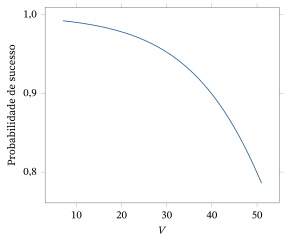
Resumo da Seção 10.5
- Examinamos a situação em que temos uma única variável resposta binária e vários preditores quantitativos.
- Um método de expressar uma relação entre a resposta e os preditores é usar uma função de ligação.
- Se usarmos a função de ligação logística, então podemos fazer uma análise de regressão logística usando métodos de inferência baseados na verossimilhança.
Exercícios
10.5.1 Prove que a função \(f : R^1 \to R^1\), definida por \(f(x) = e^{-x}(1 + e^{-x})^{-2}\) para \(x \in R^1\), é uma função densidade102 com função de distribuição dada por \(F(x) = (1 + e^{-x})^{-1}\) e fda inversa dada por \(F^{-1}(p) = \ln p - \ln(1 - p)\) para \(p \in [0, 1]\). Ela é chamada de distribuição logística.
10.5.2 Demonstre (10.5.2).
10.5.3 Suponha que um modelo de regressão logística para uma resposta binária \(Y\) seja dado por \[ P(Y = 1 \mid x) = \frac{\exp\{\beta_1 + \beta_2 x\}}{1 + \exp\{\beta_1 + \beta_2 x\}}. \] Prove que o log da chance em \(X = x\) é dado por \(\beta_1 + \beta_2 x\).
10.5.4 Suponha que, em vez da fda logística inversa como função de ligação, usemos a fda inversa de uma distribuição de Laplace103 (ver Problema 2.4.22). Determine a forma de \(P(Y = 1 \mid X_1 = x_1, \ldots, X_k = x_k)\).
10.5.5 Suponha que, em vez da fda logística inversa como função de ligação, usemos a fda inversa de uma distribuição de Cauchy104 (ver Problema 2.4.21). Determine a forma de \(P(Y = 1 \mid X_1 = x_1, \ldots, X_k = x_k)\).
Exercícios computacionais
10.5.6 Use um software para reproduzir os resultados do Exemplo 10.5.1.
10.5.7 Suponha que os dados a seguir tenham sido obtidos para o preditor quantitativo \(X\) e a variável resposta binária \(Y\).
| \(X\) | \(-5\) | \(-4\) | \(-3\) | \(-2\) | \(-1\) | \(0\) | \(1\) | \(2\) | \(3\) | \(4\) | \(5\) |
|---|---|---|---|---|---|---|---|---|---|---|---|
| \(Y\) | \(0, 0\) | \(0, 0\) | \(0, 0\) | \(0, 0\) | \(1, 0\) | \(0, 0\) | \(1, 0\) | \(0, 1\) | \(1, 1\) | \(1, 1\) | \(1, 1\) |
(a) Usando esses dados, ajuste o modelo de regressão logística dado por \[ P(Y = 1 \mid x) = \frac{\exp\{\beta_1 + \beta_2 x + \beta_3 x^2\}}{1 + \exp\{\beta_1 + \beta_2 x + \beta_3 x^2\}}. \](b) O modelo se ajusta aos dados?(c) Teste a hipótese nula \(H_0 : \beta_3 = 0\).(d) Se você concluir que não há efeito quadrático, reajuste o modelo e teste se há algum efeito linear.(e) Faça o gráfico de \(P(Y = 1 \mid x)\) como função de \(x\).
Problemas
10.5.8 Prove que (10.5.3) é a forma correta da estatística do teste qui-quadrado de aderência105.
10.6 Demonstrações Adicionais (Avançado)
Queremos provar que, quando \(E(Y \mid X = x) = \beta_1 + \beta_2 x\) e observamos os valores independentes \((x_1, y_1), \ldots, (x_n, y_n)\) de \((X, Y)\), então as estimativas de mínimos quadrados de \(\beta_1\) e \(\beta_2\) são dadas por \(b_1 = \bar{y} - b_2\bar{x}\) e \[ b_2 = \frac{\sum_{i=1}^{n}(x_i - \bar{x})(y_i - \bar{y})}{\sum_{i=1}^{n}(x_i - \bar{x})^2}, \] sempre que \(\sum_{i=1}^{n}(x_i - \bar{x})^2 \ne 0\).
Precisamos de um resultado algébrico que vai simplificar nossos cálculos.
Se \((x_1, y_1), \ldots, (x_n, y_n)\) são tais que \(\sum_{i=1}^{n}(x_i - \bar{x})^2 \ne 0\) e \(q, r \in R^1\), então \(\sum_{i=1}^{n}(y_i - b_1 - b_2 x_i)(q + r x_i)\) \({}= 0\).
Temos \[ \sum_{i=1}^{n}(y_i - b_1 - b_2 x_i) = n\bar{y} - nb_1 - nb_2\bar{x} = n(\bar{y} - \bar{y} + b_2\bar{x} - b_2\bar{x}) = 0, \] o que estabelece que \(\sum_{i=1}^{n}(y_i - b_1 - b_2 x_i)q = 0\) para todo \(q\). Agora, usando isso e as fórmulas do Teorema 10.3.1, obtemos \begin{align*} &\sum_{i=1}^{n}(y_i - b_1 - b_2 x_i)x_i \\ &= \sum_{i=1}^{n}(y_i - b_1 - b_2 x_i)(x_i - \bar{x}) \\ &= \sum_{i=1}^{n}(y_i - \bar{y} - b_2(x_i - \bar{x}))(x_i - \bar{x}) \\ &= \sum_{i=1}^{n}(y_i - \bar{y})(x_i - \bar{x}) - \sum_{i=1}^{n}(y_i - \bar{y})(x_i - \bar{x}) = 0. \end{align*} Isso estabelece o lema.
Voltando à demonstração do Teorema 10.3.1, temos106 \begin{align*} &\sum_{i=1}^{n}(y_i - \beta_1 - \beta_2 x_i)^2 \\ &= \sum_{i=1}^{n}(y_i - b_1 - b_2 x_i - (\beta_1 - b_1) - (\beta_2 - b_2)x_i)^2 \\ &= \sum_{i=1}^{n}(y_i - b_1 - b_2 x_i)^2 - 2\sum_{i=1}^{n}(y_i - b_1 - b_2 x_i)\{(\beta_1 - b_1) + (\beta_2 - b_2)x_i\} \\ &\quad + \sum_{i=1}^{n}((\beta_1 - b_1) + (\beta_2 - b_2)x_i)^2 \\ &= \sum_{i=1}^{n}(y_i - b_1 - b_2 x_i)^2 + \sum_{i=1}^{n}((\beta_1 - b_1) + (\beta_2 - b_2 x_i))^2, \end{align*} já que o termo do meio é 0 pelo Lema 10.6.1. Portanto, \[ \sum_{i=1}^{n}(y_i - \beta_1 - \beta_2 x_i)^2 \ge \sum_{i=1}^{n}(y_i - b_1 - b_2 x_i)^2 \] e \(\sum_{i=1}^{n}(y_i - \beta_1 - \beta_2 x_i)^2\) atinge seu valor mínimo se e somente se \[ \sum_{i=1}^{n}((\beta_1 - b_1) + (\beta_2 - b_2)x_i)^2 = 0. \] Isso ocorre se e somente se \((\beta_1 - b_1) + (\beta_2 - b_2)x_i = 0\) para todo \(i\). Como os \(x_i\) não são todos iguais, isso vale se e somente se \(\beta_1 = b_1\) e \(\beta_2 = b_2\), o que completa a demonstração.
Queremos provar que, se \(E(Y \mid X = x) = \beta_1 + \beta_2 x\) e observamos os valores independentes \((x_1, y_1), \ldots, (x_n, y_n)\) de \((X, Y)\), então (i) \(E(B_1 \mid X_1 = x_1, \ldots, X_n = x_n)\) \({}= \beta_1\),(ii) \(E(B_2 \mid X_1 = x_1, \ldots, X_n = x_n)\) \({}= \beta_2\).
Pelo Teorema 10.3.1 e por \(E(\bar{Y} \mid X_1 = x_1, \ldots, X_n = x_n)\) \({}= \beta_1 + \beta_2\bar{x}\), temos que \begin{align*} E(B_2 \mid X_1 = x_1, \ldots, X_n = x_n) &= \frac{\sum_{i=1}^{n}(x_i - \bar{x})(\beta_1 + \beta_2 x_i - \beta_1 - \beta_2\bar{x})}{\sum_{i=1}^{n}(x_i - \bar{x})^2} \\ &= \beta_2\frac{\sum_{i=1}^{n}(x_i - \bar{x})^2}{\sum_{i=1}^{n}(x_i - \bar{x})^2} = \beta_2. \end{align*} Além disso, pelo Teorema 10.3.1 e pelo que acabamos de provar, \[ E(B_1 \mid X_1 = x_1, \ldots, X_n = x_n) = \beta_1 + \beta_2\bar{x} - \beta_2\bar{x} = \beta_1. \]
Queremos provar que, se \(E(Y \mid X = x) = \beta_1 + \beta_2 x\), \(\Var(Y \mid X = x) = \sigma^2\) para todo \(x\), e observamos os valores independentes \((x_1, y_1), \ldots, (x_n, y_n)\) de \((X, Y)\), então (i) \(\Var(B_1 \mid X_1 = x_1, \ldots, X_n = x_n)\) \({}= \sigma^2(1/n + \bar{x}^2/\sum_{i=1}^{n}(x_i - \bar{x})^2)\),(ii) \(\Var(B_2 \mid X_1 = x_1, \ldots, X_n = x_n)\) \({}= \sigma^2/\sum_{i=1}^{n}(x_i - \bar{x})^2\),(iii) \(\Cov(B_1, B_2 \mid X_1 = x_1, \ldots, X_n = x_n)\) \({}= -\sigma^2\bar{x}/\sum_{i=1}^{n}(x_i - \bar{x})^2\).
Primeiro provamos (ii). Observe que \(b_2\) é uma combinação linear dos valores \(y_i - \bar{y}\), de modo que podemos calcular a variância condicional depois de obter as variâncias e covariâncias condicionais dos valores \(Y_i - \bar{Y}\). Temos que \[ Y_i - \bar{Y} = \left(1 - \frac{1}{n}\right)Y_i - \frac{1}{n}\sum_{j \ne i} Y_j, \] de modo que a variância condicional de \(Y_i - \bar{Y}\) é dada por \[ \sigma^2\left(1 - \frac{1}{n}\right)^2 + \sigma^2\frac{n - 1}{n^2} = \sigma^2\left(1 - \frac{1}{n}\right). \] Quando \(i \ne j\), podemos escrever \[ Y_i - \bar{Y} = \left(1 - \frac{1}{n}\right)Y_i - \frac{1}{n}Y_j - \frac{1}{n}\sum_{k \ne i, j} Y_k, \] e a covariância condicional entre \(Y_i - \bar{Y}\) e \(Y_j - \bar{Y}\) é então dada por \[ -2\sigma^2\left(1 - \frac{1}{n}\right)\frac{1}{n} + \sigma^2\frac{n - 2}{n^2} = -\frac{\sigma^2}{n} \] (observe que, para este cálculo, você pode supor que as médias das esperanças dos \(Y\) são 0). Portanto, a variância condicional de \(B_2\) é dada por \begin{align*} &\Var(B_2 \mid x_1, \ldots, x_n) \\ &= \sigma^2\left(1 - \frac{1}{n}\right) \frac{\sum_{i=1}^{n}(x_i - \bar{x})^2}{\left(\sum_{i=1}^{n}(x_i - \bar{x})^2\right)^2} - \frac{\sigma^2}{n}\, \frac{\sum_{i \ne j}(x_i - \bar{x})(x_j - \bar{x})}{\left(\sum_{i=1}^{n}(x_i - \bar{x})^2\right)^2} \\ &= \frac{\sigma^2}{\sum_{i=1}^{n}(x_i - \bar{x})^2}, \end{align*} porque \begin{align*} \sum_{i \ne j}(x_i - \bar{x})(x_j - \bar{x}) &= \left(\sum_{i=1}^{n}(x_i - \bar{x})\right)^2 - \sum_{i=1}^{n}(x_i - \bar{x})^2 \\ &= -\sum_{i=1}^{n}(x_i - \bar{x})^2. \end{align*}
Para (iii), temos que \begin{align*} &\Cov(B_1, B_2 \mid X_1 = x_1, \ldots, X_n = x_n) \\ &= \Cov(\bar{Y} - B_2\bar{X}, B_2 \mid X_1 = x_1, \ldots, X_n = x_n) \\ &= \Cov(\bar{Y}, B_2 \mid X_1 = x_1, \ldots, X_n = x_n) - \bar{x}\Var(B_2 \mid X_1 = x_1, \ldots, X_n = x_n) \end{align*} e107 \begin{align*} &\Cov(\bar{Y}, B_2 \mid X_1 = x_1, \ldots, X_n = x_n) \\ &= \frac{\sum_{i=1}(x_i - \bar{x})\Cov((Y_i - \bar{Y}), \bar{Y} \mid X_1 = x_1, \ldots, X_n = x_n)}{\sum_{i=1}^{n}(x_i - \bar{x})^2} \\ &= \sigma^2(1 - 1/n)\frac{\sum_{i=1}(x_i - \bar{x})}{\sum_{i=1}^{n}(x_i - \bar{x})^2} = 0. \end{align*} Portanto, \(\Cov(B_1, B_2 \mid X_1 = x_1, \ldots, X_n = x_n)\) \({}= -\sigma^2\bar{x}/\sum_{i=1}^{n}(x_i - \bar{x})^2\).
Por fim, para (i), temos108 \begin{align*} &\Var(B_1 \mid X_1 = x_1, \ldots, X_n = x_n) = \Var(\bar{Y} - B_2\bar{x} \mid X_1 = x_1, \ldots, X_n = x_n) \\ &= \Var(\bar{Y} \mid X_1 = x_1, \ldots, X_n = x_n) + \bar{x}^2\Var(B_2 \mid X_1 = x_1, \ldots, X_n = x_n) \\ &\quad - 2\Cov(\bar{Y}, B_2 \mid X_1 = x_1, \ldots, X_n = x_n), \end{align*} em que \(\Var(\bar{Y} \mid X_1 = x_1, \ldots, X_n = x_n)\) \({}= \sigma^2/n\). Substituir os resultados de (ii) e (iii) completa a demonstração do teorema.
Precisamos mostrar que \[ \Var(B_1 + B_2 x \mid X_1 = x_1, \ldots, X_n = x_n) = \sigma^2\left(\frac{1}{n} + \frac{(x - \bar{x})^2}{\sum_{i=1}^{n}(x_i - \bar{x})^2}\right). \]
Para isso, temos que \begin{align*} &\Var(B_1 + B_2 x \mid X_1 = x_1, \ldots, X_n = x_n) \\ &= \Var(B_1 \mid X_1 = x_1, \ldots, X_n = x_n) + x^2\Var(B_2 \mid X_1 = x_1, \ldots, X_n = x_n) \\ &\quad + 2x\Cov(B_1, B_2 \mid X_1 = x_1, \ldots, X_n = x_n) \\ &= \sigma^2\left(\frac{1}{n} + \frac{\bar{x}^2 + x^2 - 2x\bar{x}}{\sum_{i=1}^{n}(x_i - \bar{x})^2}\right) = \sigma^2\left(\frac{1}{n} + \frac{(x - \bar{x})^2}{\sum_{i=1}^{n}(x_i - \bar{x})^2}\right). \end{align*}
Queremos mostrar que, se \(E(Y \mid X = x) = \beta_1 + \beta_2 x\), \(\Var(Y \mid X = x) = \sigma^2\) para todo \(x\), e observamos os valores independentes \((x_1, y_1), \ldots, (x_n, y_n)\) de \((X, Y)\), então \[ E(S^2 \mid X_1 = x_1, \ldots, X_n = x_n) = \sigma^2. \]
Temos que \begin{align*} &E((n - 2)S^2 \mid X_1 = x_1, \ldots, X_n = x_n) \\ &= E\left(\sum_{i=1}^{n}(Y_i - B_1 - B_2 x_i)^2 \;\middle|\; X_1 = x_1, \ldots, X_n = x_n\right) \\ &= \sum_{i=1}^{n} E((Y_i - \bar{Y} - B_2(x_i - \bar{x}))^2 \mid X_1 = x_1, \ldots, X_n = x_n) \\ &= \sum_{i=1}^{n} \Var(Y_i - \bar{Y} - B_2(x_i - \bar{x}) \mid X_1 = x_1, \ldots, X_n = x_n) \end{align*} porque \begin{align*} &E(Y_i - \bar{Y} - B_2(x_i - \bar{x}) \mid X_1 = x_1, \ldots, X_n = x_n) \\ &= \beta_1 + \beta_2 x_i - \beta_1 - \beta_2\bar{x} - \beta_2(x_i - \bar{x}) = 0. \end{align*} Agora, \begin{align*} &\Var(Y_i - \bar{Y} - B_2(x_i - \bar{x}) \mid X_1 = x_1, \ldots, X_n = x_n) \\ &= \Var(Y_i - \bar{Y} \mid X_1 = x_1, \ldots, X_n = x_n) \\ &\quad - 2(x_i - \bar{x})\Cov((Y_i - \bar{Y}), B_2 \mid X_1 = x_1, \ldots, X_n = x_n) \\ &\quad + (x_i - \bar{x})^2\Var(B_2 \mid X_1 = x_1, \ldots, X_n = x_n) \end{align*} e, usando os resultados estabelecidos sobre as covariâncias dos \(Y_i - \bar{Y}\) na demonstração do Teorema 10.3.3, temos que \[ \Var(Y_i - \bar{Y} \mid X_1 = x_1, \ldots, X_n = x_n) = \sigma^2(1 - 1/n) \] e \begin{align*} &\Cov(Y_i - \bar{Y}, B_2 \mid X_1 = x_1, \ldots, X_n = x_n) \\ &= \frac{1}{\sum_{i=1}^{n}(x_i - \bar{x})^2}\sum_{j=1}^{n}(x_j - \bar{x}) \Cov(Y_i - \bar{Y}, Y_j - \bar{Y} \mid X_1 = x_1, \ldots, X_n = x_n) \\ &= \frac{\sigma^2}{\sum_{i=1}^{n}(x_i - \bar{x})^2} \left(\left(1 - \frac{1}{n}\right)(x_i - \bar{x}) - \frac{1}{n}\sum_{j \ne i}(x_j - \bar{x})\right) = \frac{\sigma^2(x_i - \bar{x})}{\sum_{i=1}^{n}(x_i - \bar{x})^2}, \end{align*} porque \(\sum_{j \ne i}(x_j - \bar{x})\) \({}= -(x_i - \bar{x})\). Portanto, \begin{align*} &\Var(Y_i - \bar{Y} - B_2(x_i - \bar{x}) \mid X_1 = x_1, \ldots, X_n = x_n) \\ &= \sigma^2\left(1 - \frac{1}{n}\right) - 2\frac{\sigma^2(x_i - \bar{x})^2}{\sum_{i=1}^{n}(x_i - \bar{x})^2} + \frac{\sigma^2(x_i - \bar{x})^2}{\sum_{i=1}^{n}(x_i - \bar{x})^2} \\ &= \sigma^2\left(1 - \frac{1}{n} - \frac{(x_i - \bar{x})^2}{\sum_{i=1}^{n}(x_i - \bar{x})^2}\right) \end{align*} e \[ E(S^2 \mid X_1 = x_1, \ldots, X_n = x_n) = \frac{\sigma^2}{n - 2}\sum_{i=1}^{n} \left(1 - \frac{1}{n} - \frac{(x_i - \bar{x})^2}{\sum_{i=1}^{n}(x_i - \bar{x})^2}\right) = \sigma^2, \] como foi enunciado.
Precisamos mostrar que, se \((x_1, y_1), \ldots, (x_n, y_n)\) são tais que \(\sum_{i=1}^{n}(x_i - \bar{x})^2 \ne 0\), então \[ \sum_{i=1}^{n}(y_i - \bar{y})^2 = b_2^2\sum_{i=1}^{n}(x_i - \bar{x})^2 + \sum_{i=1}^{n}(y_i - b_1 - b_2 x_i)^2. \]
Temos que \begin{align*} \sum_{i=1}^{n}(y_i - \bar{y})^2 &= \sum_{i=1}^{n} y_i^2 - n\bar{y}^2 \\ &= \sum_{i=1}^{n}(y_i - b_1 - b_2 x_i + b_1 + b_2 x_i)^2 - n\bar{y}^2 \\ &= \sum_{i=1}^{n}(y_i - b_1 - b_2 x_i)^2 + \sum_{i=1}^{n}(b_1 + b_2 x_i)^2 - n\bar{y}^2 \end{align*} porque \(\sum_{i=1}^{n}(y_i - b_1 - b_2 x_i)(b_1 + b_2 x_i)\) \({}= 0\) pelo Lema 10.6.1. Então, usando o Teorema 10.3.1, temos \[ \sum_{i=1}^{n}(b_1 + b_2 x_i)^2 - n\bar{y}^2 = \sum_{i=1}^{n}(\bar{y} + b_2(x_i - \bar{x}))^2 - n\bar{y}^2 = b_2^2\sum_{i=1}^{n}(x_i - \bar{x})^2, \] e isso completa a demonstração.
Queremos mostrar que, se \(Y\), dado \(X = x\), tem distribuição \(N(\beta_1 + \beta_2 x, \sigma^2)\) e observamos os valores independentes \((x_1, y_1), \ldots, (x_n, y_n)\) de \((X, Y)\), então as distribuições condicionais de \(B_1\), \(B_2\) e \(S^2\), dados \(X_1 = x_1, \ldots, X_n = x_n\), são as seguintes. (i) \(B_1 \sim N(\beta_1, \sigma^2(1/n + \bar{x}^2/\sum_{i=1}^{n}(x_i - \bar{x})^2))\)(ii) \(B_2 \sim N(\beta_2, \sigma^2/\sum_{i=1}^{n}(x_i - \bar{x})^2)\)(iii) \[ B_1 + B_2 x \sim N\left(\beta_1 + \beta_2 x,\ \sigma^2\left(\frac{1}{n} + \frac{(x - \bar{x})^2}{\sum_{i=1}^{n}(x_i - \bar{x})^2}\right)\right) \](iv) \((n - 2)S^2/\sigma^2 \sim \chi^2(n - 2)\) independente de \((B_1, B_2)\)
Primeiro provamos (i). Como \(B_1\) pode ser escrito como uma combinação linear dos \(Y_i\), o Teorema 4.6.1 implica que a distribuição de \(B_1\) tem de ser normal. O resultado segue, então, dos Teoremas 10.3.2 e 10.3.3. Uma demonstração semelhante estabelece (ii) e (iii). A demonstração de (iv) é semelhante à do Teorema 4.6.6, e a deixamos para um curso posterior de estatística.
Queremos mostrar que (i) \((B_1 - \beta_1)/S\left(1/n + \bar{x}^2/\sum_{i=1}^{n}(x_i - \bar{x})^2\right)^{1/2} \sim t(n - 2)\)(ii) \((B_2 - \beta_2)\left(\sum_{i=1}^{n}(x_i - \bar{x})^2\right)^{1/2}/S \sim t(n - 2)\)(iii) 109 \[ \frac{B_1 + B_2 x - \beta_1 - \beta_2 x} {S\left((1/n + (x - \bar{x})^2)/\sum_{i=1}^{n}(x_i - \bar{x})^2\right)^{1/2}} \sim t(n - 2) \](iv) Se \(F\) for definida como em (10.3.8), então \(H_0 : \beta_2 = 0\) é verdadeira se e somente se \(F \sim F(1, n - 2)\).
Primeiro provamos (i). Como \(B_1\) e \(S^2\) são independentes, \[ \frac{B_1 - \beta_1}{\sigma\left(1/n + \bar{x}^2/\sum_{i=1}^{n}(x_i - \bar{x})^2\right)^{1/2}} \sim N(0, 1) \] independente de \((n - 2)S^2/\sigma^2 \sim \chi^2(n - 2)\). Portanto, aplicando a Definição 4.6.2, temos \begin{align*} &\frac{B_1 - \beta_1} {\sigma\left(1/n + \bar{x}^2/\sum_{i=1}^{n}(x_i - \bar{x})^2\right)^{1/2} \left((n - 2)S^2/(n - 2)\sigma^2\right)^{1/2}} \\ &= \frac{B_1 - \beta_1} {S\left(1/n + \bar{x}^2/\sum_{i=1}^{n}(x_i - \bar{x})^2\right)^{1/2}} \sim t(n - 2). \end{align*} Para (ii), a demonstração prossegue exatamente como a de (i).
Para (iii), a demonstração prossegue exatamente como a de (i), usando também o Corolário 10.3.1.
Provamos agora (iv). Elevar ao quadrado a razão em (ii) e aplicar o Teorema 4.6.11 implica \[ G = \frac{(B_2 - \beta_2)^2}{S^2\left(\sum_{i=1}^{n}(x_i - \bar{x})^2\right)^{-1}} = \frac{(B_2 - \beta_2)^2\sum_{i=1}^{n}(x_i - \bar{x})^2}{S^2} \sim F(1, n - 2). \] Observe agora que a \(F\) definida por (10.3.8) é igual a \(G\) quando \(\beta_2 = 0\). A recíproca, de que \(F \sim F(1, n - 2)\) só se \(\beta_2 = 0\), é um pouco mais difícil de provar, e a deixamos para um curso posterior.
Notas do capítulo
- Termo tempo de vida — no original, lifelength ↩
- Termo verificação do modelo — no original, model checking ↩
- Termo distribuição condicional — no original, conditional distribution ↩
- Termo variável aleatória — no original, random variable ↩
- Termo assimetria — no original, skewness ↩
- Termo variância condicional — no original, conditional variance ↩
- Termo variável resposta — no original, response variable ↩
- Termo variável preditora — no original, predictor variable ↩
- Termo modelo de regressão linear múltipla — no original, multiple linear regression model ↩
- Termo preditor — no original, predictor ↩
- Termo quase certamente — no original, almost surely ↩
- Termo tratamento — no original, treatment ↩
- Termo tamanho da amostra — no original, sample size ↩
- Termo variância — no original, variance ↩
- Termo planejamento experimental — no original, experimental design ↩
- Termo interação — no original, interaction ↩
- Termo variável de bloqueio — no original, blocking variable ↩
- Termo variável indicadora — no original, dummy variable ↩
- Termo planejamento de experimentos — no original, design of experiments ↩
- Termo frequência relativa — no original, relative frequency ↩
- Termo distribuição conjunta — no original, joint distribution ↩
- Termo distribuição degenerada — no original, degenerate distribution ↩
- Termo correlação — no original, correlation ↩
- Termo função de probabilidade — no original, probability function ↩
- Termo função de verossimilhança — no original, likelihood function ↩
- Termo erro padrão — no original, standard error ↩
- Termo estimativa — no original, estimate ↩
- Termo hipótese nula — no original, null hypothesis ↩
- Termo verossimilhança — no original, likelihood ↩
- Termo espaço paramétrico — no original, parameter space ↩
- Termo estatística suficiente minimal — no original, minimal sufficient statistic ↩
- Nota do tradutor o original traz \(\hat{\theta}\) sem índice no denominador; pelo contexto seria \(n_i\hat{\theta}_j(1 - \hat{\theta}_j)\). ↩
- Termo a priori — no original, prior ↩
- Termo priori conjugada — no original, conjugate prior ↩
- Termo a posteriori — no original, posterior ↩
- Termo a posteriori — no original, posterior ↩
- Termo distribuição Dirichlet — no original, Dirichlet distribution ↩
- Nota do tradutor o original traz \(\alpha_{a|i}\) como último parâmetro; como a distribuição tem \(b\) componentes, seria \(\alpha_{b|i}\), como na posteriori logo abaixo. ↩
- Termo esperança — no original, expectation ↩
- Termo distribuição marginal — no original, marginal distribution ↩
- Termo distribuição uniforme — no original, uniform distribution ↩
- Termo amostragem com reposição — no original, sampling with replacement ↩
- Termo log-verossimilhança — no original, log-likelihood ↩
- Termo função gama — no original, gamma function ↩
- Termo mínimos quadrados — no original, least squares ↩
- Termo estimativa de mínimos quadrados — no original, least-squares estimate ↩
- Nota do tradutor O original traz \((y_i - \bar{y}^2)\); pela conta seria \((y_i - \bar{y})^2\). ↩
- Termo modelo normal de locação — no original, location normal model ↩
- Nota do tradutor O original traz \(\theta\); pelo exemplo seria \(\mu\). ↩
- Termo modelo normal de locação e escala — no original, location-scale normal model ↩
- Termo valor esperado — no original, expected value ↩
- Nota do tradutor O original traz \(t_1(\ldots), \ldots, t_n(\ldots))'\) sem o parêntese de abertura; seria \((t_1(\ldots), \ldots, t_n(\ldots))'\). ↩
- Termo modelo de regressão linear simples — no original, simple linear regression model ↩
- Termo diagrama de dispersão — no original, scatter plot ↩
- Termo complementar — no original, complement ↩
- Termo predição — no original, prediction ↩
- Termo graus de liberdade — no original, degrees of freedom ↩
- Termo não viesado — no original, unbiased ↩
- Termo distribuição amostral — no original, sampling distribution ↩
- Termo coeficiente de determinação — no original, coefficient of determination ↩
- Termo coeficiente de correlação amostral — no original, sample correlation coefficient ↩
- Termo covariância amostral — no original, sample covariance ↩
- Nota do tradutor O original traz \((1/n + (x - \bar{x})^2)/\sum\) no denominador; pelo Teorema 10.3.6(iii) seria \(1/n + (x - \bar{x})^2/\sum\). ↩
- Termo intervalo de confiança — no original, confidence interval ↩
- Termo resíduo padronizado — no original, standardized residual ↩
- Termo gráfico de probabilidade normal — no original, normal probability plot ↩
- Termo estudo observacional — no original, observational study ↩
- Termo hiperparâmetro — no original, hyperparameter ↩
- Termo mudança de variável — no original, change of variable ↩
- Termo maior densidade a posteriori — no original, highest posterior density ↩
- Nota do tradutor Pela fórmula \(\nu_{xy} = (1/2)\{c_y^2 - c_x^2 a^2\}\) dada acima, seria \((c_y^2 - c_{xy}^2/c_x^2)/2 \approx 5.962\); o original subtrai \(c_{xy}\) em vez de \(c_x^2 a^2\), e esse valor se propaga para a distribuição Gama e para o intervalo HPD abaixo. ↩
- Nota do tradutor O original traz \(r_x^2\) e \(2\kappa + n - 1\) na primeira linha; pela fórmula do intervalo HPD \(\gamma\) acima, seriam \(c_x^2\) e \(2\kappa + n\), que é o que a conta usa (\(t_{0{,}975}(24)\), com \(2\kappa + n = 24\)). ↩
- Termo esperança condicional — no original, conditional expectation ↩
- Termo estimação — no original, estimation ↩
- Nota do tradutor O original traz \(X_k) = x_k\); pelo sentido seria \(X_k = x_k)\). ↩
- Nota do tradutor O original traz \((y - Xb)'(y - Xb)\); com a notação da seção seria \((y - Vb)'(y - Vb)\). ↩
- Nota do tradutor O original traz \(d_{ii}\) no denominador; pelo índice do numerador seria \(d_{jj}\). ↩
- Nota do tradutor O original traz \(E(Y \mid \ldots)\), embora o modelo ajustado (10.3.20) seja para \(\ln Y\). ↩
- Nota do tradutor O original traz \((x_i - \bar{x})^2\); para a predição em \(X = x\) seria \((x - \bar{x})^2\). ↩
- Nota do tradutor o original traz “\(X_a) = x_a =\)”; o pretendido parece ser \(E(Y \mid X_1 = x_1, \ldots, X_a = x_a)\) \({}= \beta_1 x_1\) \({}+ \cdots + \beta_a x_a\). ↩
- Termo covariância — no original, covariance ↩
- Nota do tradutor o original traz \(n_k\); pela notação da seção, seria \(n_a\). ↩
- Nota do tradutor nas linhas Erro e Total da tabela, o original traz o índice do primeiro somatório incompleto, “\(i=\)”; pelo contexto, seria \(i=1\). ↩
- Termo comparações múltiplas — no original, multiple comparisons ↩
- Nota do tradutor o original traz \(\Var(Y_i) + \Var(Y_i)\); seria \(\Var(Y_i) + \Var(Y_j)\). ↩
- Termo desvio padrão — no original, standard deviation ↩
- Termo bilateral — no original, two-sided ↩
- Nota do tradutor o original traz \(V\); pelo contexto seria \(B\). ↩
- Termo recíproca — no original, converse ↩
- Nota do tradutor o original traz 0.18627 para \(B1\), \(A3\); com os dados da tabela acima a conta dá 0,18671; o valor impresso corresponde a 7,6 no lugar de 7,5. ↩
- Nota do tradutor o original traz \(F(2, 36)\); como \(A\) tem 3 graus de liberdade na tabela ANOVA, seria \(F(3, 36)\). ↩
- Termo delineamento em blocos aleatorizados — no original, randomized block design ↩
- Nota do tradutor o original imprime \(E(Y \mid (A, W)) = (i, w)\), com o parêntese fechado antes do segundo sinal de igual; pelo sentido seria \(E(Y \mid (A, W) = (i, w))\). ↩
- Nota do tradutor o item repete o (d) do Exercício 10.4.7; aqui o sentido seria a correlação entre as medições de Cormo Alto e de Cormo Baixo. ↩
- Nota do tradutor os dados dos queijos são os do Exercício 10.4.3; o Exercício 10.4.4 trata dos ratos e do gossipol. ↩
- Nota do tradutor “fill strength” no original; pode ser erro por “full strength” (resistência plena). ↩
- Termo injetora — no original, one-to-one ↩
- Termo função de ligação — no original, link function ↩
- Termo logística — no original, logistic ↩
- Nota do tradutor O original traz “\(P(Y = 1 \mid X_1 = x_1, \ldots, X_k)\) \({}= x_k(1 - \ldots)\)”; pela conta seria \(P(Y = 1 \mid X_1 = x_1, \ldots, X_k = x_k)(1 - \ldots)\). ↩
- Termo regressão logística — no original, logistic regression ↩
- Termo função densidade — no original, density function ↩
- Termo de Laplace — no original, Laplace distribution ↩
- Termo de Cauchy — no original, Cauchy ↩
- Termo teste qui-quadrado de aderência — no original, chi-squared goodness of fit test ↩
- Nota do tradutor Na última linha, o original traz \((\beta_2 - b_2 x_i)\); pela linha anterior seria \((\beta_2 - b_2)x_i\). ↩
- Nota do tradutor O fator \(\sigma^2(1 - 1/n)\) da última linha não confere: pela conta, \(\Cov(Y_i - \bar{Y}, \bar{Y} \mid \ldots)\) \({}= \sigma^2/n - \sigma^2/n\) \({}= 0\). O resultado final, 0, não muda. ↩
- Nota do tradutor O original traz \(-2\Cov(\bar{Y}, B_2 \mid \ldots)\); pela conta seria \(-2\bar{x}\Cov(\bar{Y}, B_2 \mid \ldots)\). Como essa covariância é 0, o resultado não muda. ↩
- Nota do tradutor O original agrupa \((1/n + (x - \bar{x})^2)/\sum_{i=1}^{n}(x_i - \bar{x})^2\); pelo Corolário 10.3.1 seria \(1/n + (x - \bar{x})^2/\sum_{i=1}^{n}(x_i - \bar{x})^2\). ↩